Analysis.m
Trial-level theta/delta measures, sensor weight estimation, visual- auditory phase lag, source-theta combination, merge with behaviour, and diagnostics.
Run order: Preprocessing (once, produces merged cesub-*.mat) -> TIME_TF (setup + time-frequency decomposition, needs a parallel pool) -> this script. Split out so this script can be re-run without a pool and without repeating the slowest step; nothing below reads raw data.
Setup below is identical to TIME_TF.m's, so either script runs alone. Change both if a path or parameter changes.
Contents
- Setup
- Load the time-frequency output
- Trial-level theta measures
- Sensor weight estimation (auditory & visual)
- Visual-auditory phase lag (synchronicity)
- Channel-space theta power (whole-brain, visual, auditory, combined)
- Cluster permutation on 4 Hz power over channels
- Cluster diagnostics
- Combine with behavioural data
- Diagnostics and visualisation
- Cleanup
Setup
Paths, channel selection, participants, conditions, time windows and frequency bands used throughout this script. Kept in sync with the Setup section at the top of Preprocessing.m — if you change one, change the other to match.
close all hidden clear all % Helper for reporting binary outcomes ternary_str = @(cond, a, b) subsref({b, a}, struct('type', '{}', 'subs', {{cond + 1}})); % Paths addpath '/imaging/henson/TIME/LatestMEGscripts' addpath /imaging/local/software/spm_toolbox/osl/osl-core addpath('/imaging/henson/TIME/MEG_scripts') % Initialise OSL once, before any SPM/FieldTrip calls, since it bundles its own SPM12+FieldTrip. Don't also addpath a separate SPM12: two installs on the path make FieldTrip resolve inconsistently. osl_startup('/imaging/local/software/spm_toolbox/osl', 'shared') % spm('defaults',...) sets the same M/EEG defaults as `spm eeg` without opening its GUI windows, which publish() would otherwise capture. spm('defaults', 'EEG'); % Close SPM's own windows (tagged, so this leaves this script's figures alone) delete(findall(0, 'Type', 'figure', 'Tag', 'Menu')); delete(findall(0, 'Type', 'figure', 'Tag', 'Interactive')); delete(findall(0, 'Type', 'figure', 'Tag', 'Graphics')); BIDSdir = '/imaging/henson/TIME/timeBIDS/'; megBIDSdir = '/imaging/henson/TIME/timeBIDS/derivatives/meg-derivatives/'; outdir = '/imaging/henson/TIME/meg-derivatives/'; resultdir = '/imaging/henson/TIME/LatestMEGscripts/MEGxBehavioural'; % where all outputs are written % PNG (300 dpi): EMF is Windows-only, and SVG/PDF both mis-render polarhistogram figures on this platform regardless of settings. figdir = '/imaging/henson/TIME/LatestMEGscripts/figures'; if ~exist(figdir, 'dir'), mkdir(figdir); end save_fig = @(fig, name) save_fig_png_safe(fig, fullfile(figdir, [name '.png'])); % Channels load('meg_only_chan_names'); % loads "chan_names" ChanType = 'MEGPLANAR'; % use gradiometers throughout % Participants and conditions Subs = 1:32; Conds = {'SyncTheta', 'AsyncTheta', 'NoFlicker', 'SyncDelta'}; transdef = ''; % set to 'td' to use the head-motion-transformed files instead % Time windows (all in seconds unless stated) TWin = [-1 4]; % epoch window EWin = [0.75 2.75]; % entrainment window: used for the trial-level power measures and % for estimating the sensor weights. The phase analysis uses its % own window, PhaseWin, matching Wang et al. BWin = [-0.5 -0.3]; % baseline-correction window % Frequency bands frequencies = [1.2 1.7 2:.5:8]; % 15 frequencies, ~evenly spaced, including 4 Hz and 1.7 Hz exactly freqres = .25; % Hilbert filter half-bandwidth (Hz) ThetaHz = 4; DeltaHz = 1.7; ThetaBand = [3 8]; % frequency span of ThetaBand_pSub, not a measure Ind4Hz = find(frequencies == ThetaHz); Ind3Hz = find(frequencies == ThetaBand(1)); Ind8Hz = find(frequencies == ThetaBand(2)); if any(cellfun(@isempty, {Ind4Hz, Ind3Hz, Ind8Hz})) error(['Theta frequencies %g, %g, %g are not all in the frequencies ' ... 'vector; every trial-level power measure indexes these bins directly.'], ... ThetaHz, ThetaBand(1), ThetaBand(2)); end % Position of 4 Hz within ThetaBand_pSub's frequency dimension, which spans ThetaBand rather than all of frequencies. Ind4HzInBand = Ind4Hz - Ind3Hz + 1; DeltaBand = [1.2 2]; % frequency span of DeltaBand_pSub, not a measure Ind1_7Hz = find(frequencies == DeltaHz); Ind1_2Hz = find(frequencies == DeltaBand(1)); Ind2Hz = find(frequencies == DeltaBand(2)); if isempty(Ind1_7Hz) || isempty(Ind1_2Hz) || isempty(Ind2Hz) error('Delta frequencies %g, %g, %g are not all in the frequencies vector.', ... DeltaHz, DeltaBand(1), DeltaBand(2)); end Ind1_7HzInBand = Ind1_7Hz - Ind1_2Hz + 1; % Sensor layout (2D coordinates for topographies), used later in this script's Diagnostics section. Loaded from a non-transformed subject (sub-30) because the transformed ("td") .fif files have updated xy coordinates that produce distorted topographies. D = spm_eeg_load(fullfile(outdir, 'sub-30/meg/esub-30_task-loc_meg_proc-sss.mat')); XY = D.coor2D; [~, XYinds] = intersect(indchantype(D, {'MEG', 'MEGPLANAR'}), indchantype(D, ChanType)); XY = XY(:, XYinds);
Warning: Found OSLDIR environment variable; shutting down before starting up again... [OSL] Cleaned up the path. Bye now! [OSL] Starting up from folder: /imaging/local/software/spm_toolbox/osl [OSL] Using configuration file: /home/fs02/Documents/MATLAB/osl.conf [OSL] Backing-up matlab path to: /home/fs02/Documents/MATLAB/.path-backup.tmp
Load the time-frequency output
Produced by TIME_TF.m, which is run separately because it needs a parallel pool. Everything below works from these five variables and never touches the raw data again.
cd(resultdir) TFFile = 'TF_output.mat'; TFVars = {'ThetaBand_pSub', 'bThetaBand_pSub', 'DeltaBand_pSub', 'TF_pSub', 'bTF_pSub'}; if exist(TFFile, 'file') ~= 2 error('%s not found in %s. Run TIME_TF.m first.', TFFile, resultdir); end % Checked by name rather than trusting the file: a run that died partway % through leaves a readable file with variables missing. missingVars = setdiff(TFVars, who('-file', TFFile)); if ~isempty(missingVars) error('%s is missing %s. Re-run TIME_TF.m.', TFFile, strjoin(missingVars, ', ')); end load(TFFile, TFVars{:})
Trial-level theta measures
4 Hz power per trial, computed from TF_pSub, for use in the linear mixed-effects models.
Theta4Hz_pSub = table(); Delta1_7Hz_pSub = table(); for iSub = 1:length(Subs) sub_nam = sprintf('sub-%02d', Subs(iSub)); sub_in = fullfile(outdir, sub_nam, 'meg'); cd(sub_in) D = spm_eeg_load(fullfile(sub_in, sprintf('cesub-%02d_task-TIME_run-1_meg_proc-sss.mat', Subs(iSub)))); TrialInds = indtrial(D, Conds, 'GOOD'); % TF_pSub was cropped to TWin, so its first sample is D.indsample(TWin(1)), % not sample 1 of the epoch. Indices into it must be shifted accordingly. % This happens to be a no-op while TWin spans the whole epoch, but it % silently misaligns every trial-level measure if TWin is ever narrowed. TFoffset = D.indsample(TWin(1)) - 1; TimeInds = (indsample(D, EWin(1)):indsample(D, EWin(2))) - TFoffset; Theta4HzP = squeeze(mean(TF_pSub{iSub}(Ind4Hz, TimeInds, TrialInds), [1 2])); Delta1_7HzP = squeeze(mean(TF_pSub{iSub}(Ind1_7Hz, TimeInds, TrialInds), [1 2])); ParticipantID = repmat(Subs(iSub), length(TrialInds), 1); Theta4Hz_pSub = [Theta4Hz_pSub; table(ParticipantID, TrialInds', Theta4HzP, 'VariableNames', {'ParticipantID','TrialNum','Theta4Hz'})]; Delta1_7Hz_pSub = [Delta1_7Hz_pSub; table(ParticipantID, TrialInds', Delta1_7HzP, 'VariableNames', {'ParticipantID','TrialNum','Delta1_7Hz'})]; end cd(resultdir) save('Theta4Hz.mat', 'Theta4Hz_pSub') save('Delta1_7Hz.mat', 'Delta1_7Hz_pSub')
Sensor weight estimation (auditory & visual)
This estimates, per participant, a scalp-weighting vector over gradiometer channels that captures auditory theta (4 Hz) activity (from the auditory localiser) and visual theta activity (from the main-task encoding trials), corresponding to the "Selection of audio and visual signals" section of the methods. These weights are used below to pick a single "maximum weight" channel per modality for the phase-lag analysis.
Participants without a localiser recording are assigned the across-participant average auditory weights, which the methods note improved the analysis. Visual weights are additionally orthogonalised against each participant's own auditory weights, to isolate a channel weighting dominated by visual rather than auditory activity.
Requires the external function pow_spec(Y, dt, doPlot), which returns a frequency vector and a channel x frequency power spectrum from a time x channel data matrix; not part of SPM/FieldTrip/OSL, so it must be separately available on the MATLAB path.
WeightWin = EWin; % matches the localiser window used by Wang et al. (0.75-2.75 s) WeightFlankBound = [3 5]; % band from which the normalising flank is drawn WeightGuardHz = 0.25; % exclude +/- this from the flank, to keep the peak out of its own denominator % Metric used to weight channels. 'power' - evoked power at the drive frequency vs surrounding-band mean (the original script's choice). 'itc' - inter-trial coherence, normalised to a pre-stimulus baseline as (ITC_active - ITC_base) / ITC_base (Wang et al., 2026). % % ITC is the better match: weights should pick a phase-consistent channel, not the largest-response one, and baselining also controls for a channel's resting rhythmicity (power doesn't). % % Chosen on recovery of the known stimulus offsets (manipulation check, not a hypothesis test): power : Sync -2.9 deg (R=0.15), Async -126.5 deg (R=0.37) ITC : Sync 27.9 deg (R=0.44), Async 178.4 deg (R=0.24) ITC recovers both; power misses Async by 53 deg. % % Split-half stability favours power (16/32 vs 5/32 reproduce their own peak channel), but this is misleading: the odd-half winner sits at the 97th (ITC) vs 99.8th (power) percentile of the even half (rank 6 vs 1 of 204) — both topographies are stable, only the argmax jitters between near-equivalent neighbours. Saturation ruled out (wide across-channel range; ~1% of channels near each subject's max). WeightMetric = 'itc'; % Condition from which the visual weights are estimated. 'thetaseparate' - SyncTheta and AsyncTheta computed separately, maps averaged (default). 'thetapooled' - the two conditions pooled into one set of trials (original approach). 'synctheta' - SyncTheta alone. 'syncdelta' - SyncDelta alone, at the delta drive frequency. % % Within-condition averaging beats pooling because ITC (and evoked power) are magnitudes: pooling trials whose phases differ by 180 deg cancels in a single resultant, whereas averaging two non-negative maps can't. % % SyncDelta's advantage: nothing to cancel, and its trials never overlap the theta analysis (avoiding same-data-fit-and-applied); channel sensitivity is frequency-independent, so a different drive frequency doesn't matter. Drawback: both streams in-phase here, so orthogonalisation carries more of the burden, and it's half the trials. % % Choice is empirical — compare on output ITC and split-half stability (both printed below). WeightSource = 'thetaseparate'; WeightBaseWin = [-1 -0.5]; % pre-stimulus baseline for the ITC normalisation, as in Wang et al. % How the baseline enters the ITC weight. 'divide' - (ITC_act - ITC_base) / ITC_base, as in Wang et al. 'subtract' - ITC_act - ITC_base. 'debias' - analytic debiasing, sqrt(max(0, (n*ITC^2 - 1)/(n - 1))), with no baseline term at all. % % The divisive form has a practical weakness: ITC is biased upward with finite trials (with 48 trials and no locking, expected ITC ~0.13, SD ~0.066), and the pre-stimulus baseline sits near that null level, so dividing by it means dividing by a quantity that varies by about half its own size — inflating variance and producing extreme values wherever the denominator lands low. A longer baseline window doesn't help, since the bias depends on trial count, not sample count. % % Subtracting avoids the unstable denominator. Debiasing removes the same bias analytically with no baseline needed, though it departs further from the published procedure. WeightNorm = 'subtract'; % Two changes from the original settings, both to sharpen the weights rather than change what they measure. % % WeightWin was [0.5 3]; now EWin, matching Wang et al.'s source-localising window. The original started 0.25s earlier, during the still-decaying onset response — broadband, not entrainment, so including it biases selection toward onset-responsive rather than 4Hz-following channels. % % WeightGuardHz is new. Weights are 4Hz power over mean flank power (3-5Hz excluding 4.000Hz); concatenating trials gives ~0.004Hz resolution, so ~48 "flank" bins sit within 0.1Hz of the peak and are dominated by its own spectral leakage, inflating the denominator. The guard band removes them. % % Window length also matters because trials are concatenated before the FFT: it must hold a whole number of cycles at the frequency of interest or the joins introduce discontinuities. Both [0.5 3] (10 cycles) and [0.75 2.75] (8 cycles) satisfy this at 4Hz; checked below. if abs(diff(WeightWin) * ThetaHz - round(diff(WeightWin) * ThetaHz)) > 1e-6 warning(['WeightWin spans %.3f cycles at %g Hz, not a whole number. Trials are ' ... 'concatenated before the FFT, so a fractional window puts a discontinuity ' ... 'at every join and smears the spectrum.'], diff(WeightWin) * ThetaHz, ThetaHz); end % ITC at a single frequency, via a one-frequency DFT per trial (its angle is the trial's phase; resultant length across trials is the ITC), rather than a time-frequency decomposition. Avoids smoothing across neighbouring frequencies, which matters since the drive is single-frequency and the flanking bins are the comparison. itc_at = @(dat, tvec, f) abs(mean(exp(1i * angle( ... squeeze(sum(dat .* reshape(exp(-2i * pi * f * tvec), 1, [], 1), 2)))), 2)); % ITC baseline handling per WeightNorm: itc_norm = @(a, b, n, mode) ... (strcmpi(mode, 'divide') .* ((a - b) ./ max(b, eps))) + ... (strcmpi(mode, 'subtract') .* (a - b)) + ... (strcmpi(mode, 'debias') .* sqrt(max(0, (n * a.^2 - 1) / max(n - 1, 1)))); AudioWeights = cell(1, length(Subs)); VisuoAudioWeights = cell(1, length(Subs)); VisuoOrthAudioWeights = cell(1, length(Subs)); maxFreq = nan(length(Subs), 2); HasLocaliser = false(1, length(Subs)); % auditory weights are individual only for these subjects VisWeightsHalf = cell(length(Subs), 2); % split-half visual weights, diagnostic only AudioWeights_pow = cell(1, length(Subs)); % both metrics kept, for comparison AudioWeights_itc = cell(1, length(Subs)); VisuoAudioWeights_pow = cell(1, length(Subs)); VisuoAudioWeights_itc = cell(1, length(Subs)); ITCbyCond = nan(length(Subs), 2); % blocked-design check: ITC within each condition ITCpooled = nan(1, length(Subs)); % ITC with the conditions pooled ITCbase_pSub = nan(1, length(Subs)); % pre-stimulus ITC, for carry-over nWeightTrials = nan(length(Subs), 2); % trials entering each weight estimate: auditory, visual for iSub = 1:length(Subs) sub_nam = sprintf('sub-%02d', Subs(iSub)); sub_in = fullfile(outdir, sub_nam, 'meg'); cd(sub_in) loc_file = sprintf('esub-%02d_task-loc_meg_proc-sss%s.mat', Subs(iSub), transdef); if exist(loc_file, 'file') HasLocaliser(iSub) = true; D = spm_eeg_load(loc_file); TrialInds = indtrial(D, {'sound', 'AudLocSyncTheta'}, 'GOOD'); ChanInds = indchantype(D, ChanType); Y = D(ChanInds, (indsample(D, WeightWin(1)) + 1):indsample(D, WeightWin(2)), TrialInds); Y = reshape(Y, size(Y, 1), size(Y, 2) * size(Y, 3))'; [f, p] = pow_spec(Y, 1 / D.fsample, 0); chanAvgPow = mean(p, 2); freqRange = find(f > WeightFlankBound(1) & f < WeightFlankBound(2)); [~, iPeak] = max(chanAvgPow(freqRange)); maxFreq(iSub, 1) = f(freqRange(iPeak)); df = round(f, 3); ind4Hz = find(df == ThetaHz); indFlanks = find(df > WeightFlankBound(1) & df < WeightFlankBound(2) & ... abs(df - ThetaHz) > WeightGuardHz); if isempty(ind4Hz) error(['Subject %d: no exact %g Hz bin in the localiser spectrum. The ' ... 'concatenated window must contain a whole number of cycles for ' ... 'that frequency to fall on a bin.'], Subs(iSub), ThetaHz); end AudioWeights_pow{iSub} = mean(p(ind4Hz, :), 1) ./ mean(p(indFlanks, :), 1); % ITC version, normalised to the pre-stimulus baseline Yact = D(ChanInds, (indsample(D, WeightWin(1)) + 1):indsample(D, WeightWin(2)), TrialInds); Ybase = D(ChanInds, (indsample(D, WeightBaseWin(1)) + 1):indsample(D, WeightBaseWin(2)), TrialInds); tAct = (0:size(Yact, 2) - 1) / D.fsample; tBase = (0:size(Ybase, 2) - 1) / D.fsample; itcA = itc_at(Yact, tAct, ThetaHz); itcB = itc_at(Ybase, tBase, ThetaHz); AudioWeights_itc{iSub} = itc_norm(itcA, itcB, numel(TrialInds), WeightNorm)'; if strcmpi(WeightMetric, 'itc') AudioWeights{iSub} = AudioWeights_itc{iSub}; else AudioWeights{iSub} = AudioWeights_pow{iSub}; end nWeightTrials(iSub, 1) = numel(TrialInds); end D = spm_eeg_load(sprintf('cesub-%02d_task-TIME_run-1_meg_proc-sss%s.mat', Subs(iSub), transdef)); % condSets is a cell of condition groups. Each is evaluated separately and % the resulting topographies are averaged, so groups never share a % resultant and cannot cancel one another. switch lower(WeightSource) case 'thetaseparate', condSets = {{'SyncTheta'}, {'AsyncTheta'}}; visFreq = ThetaHz; case 'thetapooled', condSets = {{'SyncTheta', 'AsyncTheta'}}; visFreq = ThetaHz; case 'synctheta', condSets = {{'SyncTheta'}}; visFreq = ThetaHz; case 'syncdelta', condSets = {{'SyncDelta'}}; visFreq = DeltaHz; otherwise, error('Unrecognised WeightSource: %s', WeightSource); end TrialInds = indtrial(D, [condSets{:}], 'GOOD'); % all trials used, for the counts below ChanInds = indchantype(D, ChanType); % Each condition group is evaluated on its own and the resulting maps are % averaged at the end. Both metrics are magnitudes, so averaging maps is % safe where pooling trials into a single resultant is not. powAcc = []; itcAcc = []; for iSet = 1:numel(condSets) setInds = indtrial(D, condSets{iSet}, 'GOOD'); if isempty(setInds), continue, end Y = D(ChanInds, (indsample(D, WeightWin(1)) + 1):indsample(D, WeightWin(2)), setInds); Y = reshape(Y, size(Y, 1), size(Y, 2) * size(Y, 3))'; [f, p] = pow_spec(Y, 1 / D.fsample, 0); if iSet == 1 chanAvgPow = mean(p, 2); freqRange = find(f > visFreq - 1 & f < visFreq + 1); [~, iPeak] = max(chanAvgPow(freqRange)); maxFreq(iSub, 2) = f(freqRange(iPeak)); end df = round(f, 3); ind4Hz = find(df == visFreq); indFlanks = find(df > visFreq - 1 & df < visFreq + 1 & ... abs(df - visFreq) > WeightGuardHz); if isempty(ind4Hz) error('Subject %d: no exact %g Hz bin in the main-task spectrum.', ... Subs(iSub), visFreq); end powAcc(end + 1, :) = mean(p(ind4Hz, :), 1) ./ mean(p(indFlanks, :), 1); %#ok<SAGROW> Yact = D(ChanInds, (indsample(D, WeightWin(1)) + 1):indsample(D, WeightWin(2)), setInds); Ybase = D(ChanInds, (indsample(D, WeightBaseWin(1)) + 1):indsample(D, WeightBaseWin(2)), setInds); itcA = itc_at(Yact, (0:size(Yact, 2) - 1) / D.fsample, visFreq); itcB = itc_at(Ybase, (0:size(Ybase, 2) - 1) / D.fsample, visFreq); itcAcc(end + 1, :) = itc_norm(itcA, itcB, numel(setInds), WeightNorm)'; %#ok<SAGROW> end VisuoAudioWeights_pow{iSub} = mean(powAcc, 1); VisuoAudioWeights_itc{iSub} = mean(itcAcc, 1); if strcmpi(WeightMetric, 'itc') VisuoAudioWeights{iSub} = VisuoAudioWeights_itc{iSub}; else VisuoAudioWeights{iSub} = VisuoAudioWeights_pow{iSub}; end nWeightTrials(iSub, 2) = numel(TrialInds); % --- Checks specific to the blocked design --- % The visual weights pool Sync/Async trials, which differ by a 180 deg % offset between streams. If the visual stream carries that offset, % pooling puts the two halves in antiphase and cancels the response. % Computing ITC per condition settles it: pooled ITC close to the % single-condition values means the visual stream holds a constant % phase and pooling is safe; much lower means it doesn't. % Conditions named locally since PhaseConds isn't in scope yet. blockConds = {'SyncTheta', 'AsyncTheta'}; for iC = 1:numel(blockConds) cInds = indtrial(D, blockConds{iC}, 'GOOD'); if isempty(cInds), continue, end Yc = D(ChanInds, (indsample(D, WeightWin(1)) + 1):indsample(D, WeightWin(2)), cInds); ITCbyCond(iSub, iC) = max(itc_at(Yc, (0:size(Yc, 2) - 1) / D.fsample, ThetaHz)); end % Computed explicitly on combined trials -- reading itcA from the loop % above would give whichever condition ran last, comparing a condition % against itself under the default 'thetaseparate'. poolInds = indtrial(D, blockConds, 'GOOD'); if ~isempty(poolInds) Yp = D(ChanInds, (indsample(D, WeightWin(1)) + 1):indsample(D, WeightWin(2)), poolInds); ITCpooled(iSub) = max(itc_at(Yp, (0:size(Yp, 2) - 1) / D.fsample, ThetaHz)); end % Baseline ITC can be inflated in a blocked design by entrainment % carried over from the preceding same-condition trial. The jittered ITI % should randomise any carry-over phase, but worth confirming: baseline % ITC approaching the active value would mean normalisation is % subtracting away real signal. if ~isempty(poolInds) Yq = D(ChanInds, (indsample(D, WeightBaseWin(1)) + 1):indsample(D, WeightBaseWin(2)), poolInds); ITCbase_pSub(iSub) = max(itc_at(Yq, (0:size(Yq, 2) - 1) / D.fsample, ThetaHz)); end % Split-half weights, diagnostic only, never applied. Visual weights are % estimated from the same trials whose phase is later measured, so the % selected channel is partly chosen on noise present in the measurement % itself; auditory weights don't have this problem (separate localiser). % Comparing odd vs even trial channel choice shows how much selection is % stable signal vs noise-fitting. % Halves are split within each condition group and averaged, mirroring % the main computation -- splitting the pooled list instead would % reintroduce the cancellation the grouping avoids. Metric follows % WeightMetric, so the diagnostic matches the weights actually in use. for iHalf = 1:2 accH = []; for iSet = 1:numel(condSets) sInds = indtrial(D, condSets{iSet}, 'GOOD'); sInds = sInds(iHalf:2:end); if numel(sInds) < 5, continue, end if strcmpi(WeightMetric, 'itc') Ya = D(ChanInds, (indsample(D, WeightWin(1)) + 1):indsample(D, WeightWin(2)), sInds); Yb = D(ChanInds, (indsample(D, WeightBaseWin(1)) + 1):indsample(D, WeightBaseWin(2)), sInds); ia = itc_at(Ya, (0:size(Ya, 2) - 1) / D.fsample, visFreq); ib = itc_at(Yb, (0:size(Yb, 2) - 1) / D.fsample, visFreq); accH(end + 1, :) = itc_norm(ia, ib, numel(sInds), WeightNorm)'; %#ok<SAGROW> else Yh = D(ChanInds, (indsample(D, WeightWin(1)) + 1):indsample(D, WeightWin(2)), sInds); Yh = reshape(Yh, size(Yh, 1), size(Yh, 2) * size(Yh, 3))'; [fh, ph] = pow_spec(Yh, 1 / D.fsample, 0); dfh = round(fh, 3); i4h = find(dfh == visFreq); iFlh = find(dfh > visFreq - 1 & dfh < visFreq + 1 & ... abs(dfh - visFreq) > WeightGuardHz); if isempty(i4h), continue, end accH(end + 1, :) = mean(ph(i4h, :), 1) ./ mean(ph(iFlh, :), 1); %#ok<SAGROW> end end if ~isempty(accH) VisWeightsHalf{iSub, iHalf} = mean(accH, 1); end end end subjectsOffPeak_Aud = find(round(maxFreq(:, 1) * 100) / 100 ~= ThetaHz); subjectsOffPeak_Vis = find(round(maxFreq(:, 2) * 100) / 100 ~= ThetaHz); for iSub = 1:length(Subs) AudioWeights{iSub} = AudioWeights{iSub} / sum(AudioWeights{iSub}); VisuoAudioWeights{iSub} = VisuoAudioWeights{iSub} / sum(VisuoAudioWeights{iSub}); end mAudioWeights = mean(cat(1, AudioWeights{~cellfun(@isempty, AudioWeights)}), 1); mVisuoAudioWeights = mean(cat(1, VisuoAudioWeights{:}), 1); % --- Auditory subspace for orthogonalising visual weights, for subjects % without a localiser --- % Orthogonalising against a single group-average auditory vector removes only the average direction, leaving any residual if a no-localiser subject's true topography differs — which can leave an auditory- dominated channel winning the visual arg-max. A small subspace built from the observed range of individual-localiser topographies, projected out in full, captures more of that variability (same logic as signal-space projection for artefact removal). SVD rather than pca() to avoid the Statistics Toolbox dependency. % % Component count is tied to a stated variance-explained criterion, not chosen by eye, and validated below: too many components risks removing real visual signal that overlaps the subspace, especially given the subspace itself comes from a modest sample. AudSubspaceVarExplained = 0.90; locSubs = find(HasLocaliser); indivAud = cat(1, AudioWeights{locSubs}); indivAud = indivAud - mean(indivAud, 1); [~, S, V] = svd(indivAud, 'econ'); sv2 = diag(S) .^ 2; explained = 100 * sv2 / sum(sv2); nComp = find(cumsum(explained) >= 100 * AudSubspaceVarExplained, 1, 'first'); AudSubspace = V(:, 1:nComp); % --- Leave-one-out validation, on subjects who do have a localiser --- % For each individual-localiser subject in turn, compare orthogonalising their visual weights against (a) their own true auditory weights — the best available reference, and the one actually used for them — and (b) a subspace built only from every OTHER individual-localiser subject, exactly mimicking what applying this to the no-localiser subjects would do. If (b) usually recovers the same visual max-weight channel as (a), the subspace would be a reasonable stand-in when the true individual reference is unavailable. Kept as a diagnostic even though the result below says not to use it (see the printed message), rather than deleted, since a documented negative result is more useful than no record of having checked. looAgree = false(1, numel(locSubs)); for k = 1:numel(locSubs) iSub = locSubs(k); otherLoc = setdiff(locSubs, iSub); otherAud = cat(1, AudioWeights{otherLoc}); otherAud = otherAud - mean(otherAud, 1); [~, Sloo, Vloo] = svd(otherAud, 'econ'); sv2loo = diag(Sloo) .^ 2; explLoo = 100 * sv2loo / sum(sv2loo); nCompLoo = find(cumsum(explLoo) >= 100 * AudSubspaceVarExplained, 1, 'first'); subspLoo = Vloo(:, 1:nCompLoo); trueOrth = orthog(VisuoAudioWeights{iSub}', AudioWeights{iSub}')'; projLoo = subspLoo * (subspLoo' * VisuoAudioWeights{iSub}'); proxyOrth = (VisuoAudioWeights{iSub}' - projLoo)'; [~, cTrue] = max(trueOrth); [~, cProxy] = max(proxyOrth); looAgree(k) = (cTrue == cProxy); end fprintf(['\nAuditory subspace for orthogonalising no-localiser subjects'' visual ' ... 'weights: %d component(s) explain %.0f%% of between-subject variance ' ... '(target %.0f%%, from %d individual-localiser subjects).\n'], ... nComp, sum(explained(1:nComp)), 100 * AudSubspaceVarExplained, numel(locSubs)); fprintf(['Leave-one-out check: subspace-based orthogonalisation recovers the same ' ... 'visual max-weight channel as the subject''s own auditory weights in %d of ' ... '%d subjects (%.0f%%) -- not high enough to trust, so NOT used below (group-' ... 'average vector used instead, as before). Kept as a documented negative result.\n'], ... sum(looAgree), numel(locSubs), 100 * mean(looAgree)); for iSub = 1:length(Subs) if isempty(AudioWeights{iSub}) AudioWeights{iSub} = mAudioWeights; end VisuoOrthAudioWeights{iSub} = orthog(VisuoAudioWeights{iSub}', AudioWeights{iSub}')'; end % No-localiser subjects get group-average auditory weights, so even under "Individual" filters their auditory side is the group template — which performs worse (see filter comparison after phase-lag). Tracked here for the methods section and cross-referencing sign-flip reliability warnings. Participant accounting, for the methods section: who has what. HasMainTask = false(1, length(Subs)); for iSub = 1:length(Subs) HasMainTask(iSub) = exist(fullfile(outdir, sprintf('sub-%02d', Subs(iSub)), 'meg', ... sprintf('cesub-%02d_task-TIME_run-1_meg_proc-sss%s.mat', Subs(iSub), transdef)), 'file') == 2; end fprintf('\n%-9s %12s %12s\n', 'Subject', 'main task', 'localiser'); for iSub = 1:length(Subs) fprintf('%-9s %12s %12s\n', sprintf('sub-%02d', Subs(iSub)), ... ternary_str(HasMainTask(iSub), 'yes', 'MISSING'), ... ternary_str(HasLocaliser(iSub), 'yes', 'MISSING')); end fprintf(['Main task present for %d of %d, localiser for %d of %d, both for %d, ' ... 'neither for %d.\n'], ... sum(HasMainTask), length(Subs), sum(HasLocaliser), length(Subs), ... sum(HasMainTask & HasLocaliser), sum(~HasMainTask & ~HasLocaliser)); NoLocaliserSubs = Subs(~HasLocaliser); fprintf('\nAuditory localiser present for %d of %d subjects.\n', ... sum(HasLocaliser), length(Subs)); if ~isempty(NoLocaliserSubs) fprintf(['No localiser, group-average auditory weights substituted: %s\n' ... ' (their auditory filter is not individualised)\n'], ... mat2str(NoLocaliserSubs)); end % --- Weight selection stability --- % Does the odd half of trials pick the same visual channel as the even half? Weights are estimated on the same trials whose phase is then measured, so a noise-driven channel choice would inflate apparent phase consistency; agreement between halves bounds how much of the selection is stable signal (the correlation gives the same information continuously). Auditory weights are unaffected (separate localiser recording). halfAgree = false(1, length(Subs)); halfCorr = nan(1, length(Subs)); halfRankPc = nan(1, length(Subs)); for iSub = 1:length(Subs) if isempty(VisWeightsHalf{iSub, 1}) || isempty(VisWeightsHalf{iSub, 2}), continue, end w1 = VisWeightsHalf{iSub, 1}(:); w2 = VisWeightsHalf{iSub, 2}(:); [~, c1] = max(w1); [~, c2] = max(w2); halfAgree(iSub) = (c1 == c2); halfCorr(iSub) = corr(w1, w2, 'type', 'Spearman'); % Where the first half's winner ranks in the second half, as a percentile [~, ord] = sort(w2, 'descend'); halfRankPc(iSub) = 100 * (1 - (find(ord == c1) - 1) / (numel(w2) - 1)); end fprintf(['\nVisual weight selection stability (odd against even trials):\n' ... ' same peak channel in both halves: %d of %d subjects\n' ... ' median rank of the odd-half winner within the even half: %.1f percentile\n' ... ' median Spearman correlation between half weight vectors: %.3f\n'], ... sum(halfAgree), sum(~isnan(halfCorr)), ... median(halfRankPc, 'omitnan'), median(halfCorr, 'omitnan')); if median(halfCorr, 'omitnan') < 0.3 warning(['Split-half visual weight vectors correlate only %.2f on average, so ' ... 'channel selection is mostly unstable across trials. The selected ' ... 'channel is then fitting trial-specific noise as much as topography, ' ... 'and phase estimates from it will be correspondingly noisy.'], ... median(halfCorr, 'omitnan')); end % --- Trials contributing to each weight estimate --- % Weight quality scales with trial count; a subject with many rejected trials has a noisier topography and less trustworthy peak channel. Printed so subjects flagged for weak sign flips can be cross-checked. fprintf(['Trials entering the weight estimates: auditory median %.0f (range %.0f-%.0f), ' ... 'visual median %.0f (range %.0f-%.0f)\n'], ... median(nWeightTrials(:, 1), 'omitnan'), min(nWeightTrials(:, 1)), max(nWeightTrials(:, 1)), ... median(nWeightTrials(:, 2), 'omitnan'), min(nWeightTrials(:, 2)), max(nWeightTrials(:, 2))); okStab = ~isnan(halfCorr) & ~isnan(nWeightTrials(:, 2))'; if sum(okStab) > 3 fprintf(['Correlation between visual trial count and split-half weight stability: ' ... '%.3f\n (a strong positive value means low-trial subjects are the ' ... 'unstable ones, which is fixable by exclusion; near zero means the ' ... 'instability is not simply a matter of trial count)\n'], ... corr(nWeightTrials(okStab, 2), halfCorr(okStab)', 'type', 'Spearman')); end % --- Is ITC discriminating between channels, or saturated? --- % ITC is bounded by 1 and approaches it quickly (~0.88 at amplitude/noise ratio 0.1, ~0.98 at 0.2, where an evoked-power ratio would still be rising). This matters because weights choose among the best channels — exactly where a saturated measure stops separating them. If many channels sit near ceiling, the peak channel is near-arbitrary among ties and power would rank them better. if any(~cellfun(@isempty, VisuoAudioWeights_itc)) allITC = []; for iSub = 1:length(Subs) if isempty(VisuoAudioWeights_itc{iSub}), continue, end allITC = [allITC; VisuoAudioWeights_itc{iSub}(:)']; %#ok<AGROW> end topFrac = mean(allITC > 0.9 * max(allITC, [], 2), 2); fprintf(['\nITC weight distribution: median across-channel range %.3f, ' ... 'and a median of %.0f%% of channels\nwithin 10%% of each subject''s ' ... 'maximum.\n'], ... median(max(allITC, [], 2) - min(allITC, [], 2)), 100 * median(topFrac)); if median(topFrac) > 0.2 fprintf([' More than a fifth of channels sit near the maximum, so ITC is ' ... 'saturating and\n discriminates poorly at the top. Compare against ' ... 'WeightMetric = ''power'' on output ITC.\n']); end end % --- Is orthogonalisation still doing anything? --- % orthog() removes the component of the visual weight vector linearly predictable from the auditory one — works when weights are roughly proportional to source contribution (power ratios), far less well on a saturated measure: if ITC is near ceiling for every channel seeing either source, the auditory contribution is compressed to a near-constant, and subtracting a near-constant shifts the map without reranking channels. % % Two numbers show whether that's happened: how much of the visual map the projection removes, and whether the peak channel moves. If both are small, orthogonalisation isn't separating the modalities and the visual filter is carrying auditory activity into the phase estimate. orthRemoved = nan(1, length(Subs)); orthMoved = false(1, length(Subs)); for iSub = 1:length(Subs) if isempty(VisuoAudioWeights{iSub}) || isempty(VisuoOrthAudioWeights{iSub}), continue, end v = VisuoAudioWeights{iSub}(:); vo = VisuoOrthAudioWeights{iSub}(:); orthRemoved(iSub) = norm(v - vo) / max(norm(v), eps); [~, p1] = max(v); [~, p2] = max(vo); orthMoved(iSub) = (p1 ~= p2); end fprintf(['\nOrthogonalisation (%s weights): removes a median %.1f%% of the visual ' ... 'map, and moves the\npeak channel in %d of %d subjects.\n'], ... WeightMetric, 100 * median(orthRemoved, 'omitnan'), ... sum(orthMoved), sum(~isnan(orthRemoved))); if median(orthRemoved, 'omitnan') < 0.1 && sum(orthMoved) < 0.1 * length(Subs) fprintf([' It is barely changing the weights, so it is not separating the two ' ... 'modalities.\n With a saturating metric this is expected: check the ' ... 'ITC distribution above, and\n compare against WeightMetric = ' ... '''power'', where the projection has a gradient to work on.\n']); end % --- Consistency of the peak channel across participants --- % The asymmetry in the methods, group weights for auditory and individual weights for visual, needs evidence rather than assertion. These are the numbers that support or undermine it. peakA = nan(1, length(Subs)); peakV = nan(1, length(Subs)); for iSub = 1:length(Subs) if ~isempty(AudioWeights{iSub}), [~, peakA(iSub)] = max(AudioWeights{iSub}); end if ~isempty(VisuoOrthAudioWeights{iSub}), [~, peakV(iSub)] = max(VisuoOrthAudioWeights{iSub}); end end % Sensor positions read locally; ChanPosAll is built later in phase-lag. Dpk = spm_eeg_load(fullfile(outdir, 'sub-30/meg/esub-30_task-loc_meg_proc-sss.mat')); gradPk = ft_convert_units(Dpk.sensors('MEG'), 'mm'); [~, pkIx] = ismember(Dpk.chanlabels(indchantype(Dpk, ChanType)), gradPk.label); posAll = gradPk.chanpos(pkIx, :); for lab_pk = {{'Auditory', peakA}, {'Visual', peakV}} nm = lab_pk{1}{1}; pk = lab_pk{1}{2}; pk = pk(~isnan(pk)); if isempty(pk), continue, end md = mode(pk); posPk = posAll(pk, :); % Spread computed within hemisphere: auditory sensors sit over both % temporal lobes, so one centroid falls between clusters and mean % distance to it measures hemisphere separation, not choice consistency % (it gave 106mm auditory vs 45mm visual, reversing the true ordering). isRight = posPk(:, 1) > 0; spreadH = nan(1, 2); for iH = 1:2 sel = (isRight == (iH == 2)); if sum(sel) > 1 spreadH(iH) = mean(sqrt(sum((posPk(sel, :) - mean(posPk(sel, :), 1)).^2, 2))); end end fprintf(['%s peak: %d distinct channels across %d participants, modal channel ' ... 'chosen by %d. Hemisphere split %d left / %d right; spread within ' ... 'hemisphere %.0f mm left, %.0f mm right.\n'], ... nm, numel(unique(pk)), numel(pk), sum(pk == md), ... sum(~isRight), sum(isRight), spreadH(1), spreadH(2)); end % --- Blocked-design checks --- fprintf('\nVisual ITC, peak channel: SyncTheta alone %.3f, AsyncTheta alone %.3f, pooled %.3f\n', ... median(ITCbyCond(:, 1), 'omitnan'), median(ITCbyCond(:, 2), 'omitnan'), ... median(ITCpooled, 'omitnan')); if median(ITCpooled, 'omitnan') < 0.7 * min(median(ITCbyCond, 1, 'omitnan')) fprintf([' Pooling the two theta conditions loses more than 30%% of the visual ITC,\n' ... ' which is what happens when the visual stream carries the 180 degree\n' ... ' offset and the two halves partly cancel. WeightSource is set to\n' ... ' ''%s''; ''thetaseparate'' avoids this and is the default.\n'], WeightSource); else fprintf([' Pooling costs little ITC here, so the visual stream appears to hold a\n' ... ' constant phase across the two conditions.\n']); end fprintf('Pre-stimulus ITC (carry-over check): median %.3f against %.3f during stimulation\n', ... median(ITCbase_pSub, 'omitnan'), median(ITCpooled, 'omitnan')); if median(ITCbase_pSub, 'omitnan') > 0.5 * median(ITCpooled, 'omitnan') warning(['Pre-stimulus ITC is more than half the value reached during ' ... 'stimulation. In this blocked design the preceding trial was the same ' ... 'condition, so entrainment may be carrying into the baseline window ' ... 'and the ITC normalisation may be subtracting real signal.']); end % --- Agreement between the two weight metrics --- % Both computed for every subject, so channel-selection agreement is measurable rather than assumed. Low agreement means metric choice materially changes which sensors the phase is read from, and the output-ITC comparison after the phase section becomes the deciding evidence. metricAgree = nan(1, length(Subs)); metricPeak = false(1, length(Subs)); for iSub = 1:length(Subs) if isempty(AudioWeights_pow{iSub}) || isempty(AudioWeights_itc{iSub}), continue, end wp = AudioWeights_pow{iSub}(:); wi = AudioWeights_itc{iSub}(:); ok = isfinite(wp) & isfinite(wi); if sum(ok) < 10, continue, end metricAgree(iSub) = corr(wp(ok), wi(ok), 'type', 'Spearman'); [~, cp] = max(wp); [~, ci] = max(wi); metricPeak(iSub) = (cp == ci); end fprintf(['Auditory weights, power against ITC: median Spearman %.3f, same peak ' ... 'channel in %d of %d subjects.\n'], ... median(metricAgree, 'omitnan'), sum(metricPeak), sum(~isnan(metricAgree))); % --- Does pooling conditions cancel the auditory contribution? --- % Visual weights pool SyncTheta/AsyncTheta trials. If the visual drive holds a constant phase across conditions while the auditory one inverts (180deg offset), pooling cancels the auditory component and leaves the weights visual-specific before any orthogonalisation. Which modality carries the shift is a stimulus-code property, not a data one; tested below: if pooling cancels auditory activity, pooled weights should resemble auditory weights less than single-condition weights do. audVisCorr = nan(1, length(Subs)); for iSub = 1:length(Subs) if isempty(VisuoAudioWeights{iSub}) || isempty(AudioWeights{iSub}), continue, end audVisCorr(iSub) = corr(VisuoAudioWeights{iSub}(:), AudioWeights{iSub}(:), 'type', 'Spearman'); end fprintf(['Correlation between pooled visual and auditory weights: median %.3f\n' ... ' (high values mean the two spatial filters overlap, which is what the\n' ... ' orthogonalisation step exists to remove)\n'], median(audVisCorr, 'omitnan')); % Group-average orthogonalised visual weights, for the group-template filters below. Orthogonalising the average differs from averaging the individually-orthogonalised weights (orthog() isn't linear), so the average is orthogonalised directly for internal consistency. mVisuoOrthAudioWeights = orthog(mVisuoAudioWeights', mAudioWeights')'; cd(outdir) save(sprintf('AudioWeights%s', ChanType), 'AudioWeights') save(sprintf('VisuoAudioWeights%s', ChanType), 'VisuoAudioWeights') save(sprintf('VisuoOrthAudioWeights%s', ChanType), 'VisuoOrthAudioWeights') save(sprintf('GroupWeights%s', ChanType), 'mAudioWeights', 'mVisuoAudioWeights', 'mVisuoOrthAudioWeights') save(sprintf('HasLocaliser%s', ChanType), 'HasLocaliser', 'NoLocaliserSubs')
Auditory subspace for orthogonalising no-localiser subjects' visual weights: 12 component(s) explain 92% of between-subject variance (target 90%, from 24 individual-localiser subjects). Leave-one-out check: subspace-based orthogonalisation recovers the same visual max-weight channel as the subject's own auditory weights in 11 of 24 subjects (46%) -- not high enough to trust, so NOT used below (group-average vector used instead, as before). Kept as a documented negative result. Subject main task localiser sub-01 yes yes sub-02 yes yes sub-03 yes yes sub-04 yes MISSING sub-05 yes MISSING sub-06 yes MISSING sub-07 yes MISSING sub-08 yes MISSING sub-09 yes MISSING sub-10 yes MISSING sub-11 yes MISSING sub-12 yes yes sub-13 yes yes sub-14 yes yes sub-15 yes yes sub-16 yes yes sub-17 yes yes sub-18 yes yes sub-19 yes yes sub-20 yes yes sub-21 yes yes sub-22 yes yes sub-23 yes yes sub-24 yes yes sub-25 yes yes sub-26 yes yes sub-27 yes yes sub-28 yes yes sub-29 yes yes sub-30 yes yes sub-31 yes yes sub-32 yes yes Main task present for 32 of 32, localiser for 24 of 32, both for 24, neither for 0. Auditory localiser present for 24 of 32 subjects. No localiser, group-average auditory weights substituted: [4 5 6 7 8 9 10 11] (their auditory filter is not individualised) Visual weight selection stability (odd against even trials): same peak channel in both halves: 5 of 32 subjects median rank of the odd-half winner within the even half: 97.0 percentile median Spearman correlation between half weight vectors: 0.402 Trials entering the weight estimates: auditory median 45 (range 32-48), visual median 89 (range 70-96) Correlation between visual trial count and split-half weight stability: 0.109 (a strong positive value means low-trial subjects are the unstable ones, which is fixable by exclusion; near zero means the instability is not simply a matter of trial count) ITC weight distribution: median across-channel range 0.749, and a median of 1% of channels within 10% of each subject's maximum. Orthogonalisation (itc weights): removes a median 44.6% of the visual map, and moves the peak channel in 15 of 32 subjects. Auditory peak: 19 distinct channels across 32 participants, modal channel chosen by 10. Hemisphere split 18 left / 14 right; spread within hemisphere 30 mm left, 51 mm right. Visual peak: 21 distinct channels across 32 participants, modal channel chosen by 4. Hemisphere split 11 left / 21 right; spread within hemisphere 37 mm left, 34 mm right. Visual ITC, peak channel: SyncTheta alone 0.797, AsyncTheta alone 0.784, pooled 0.705 Pooling costs little ITC here, so the visual stream appears to hold a constant phase across the two conditions. Pre-stimulus ITC (carry-over check): median 0.256 against 0.705 during stimulation Auditory weights, power against ITC: median Spearman 0.704, same peak channel in 8 of 24 subjects. Correlation between pooled visual and auditory weights: median 0.079 (high values mean the two spatial filters overlap, which is what the orthogonalisation step exists to remove)
Visual-auditory phase lag (synchronicity)
Extracts each participant's 4 Hz auditory/visual phase per trial and computes the visual-minus-auditory lag (methods: "Frequency Phase Lag Analysis").
Four spatial filters, crossing Scope (Individual vs Group-average weights) x Spatial (MaxChan vs Vector-weighted sum). Visual weights are orthogonalised against auditory, since a channel picking up both biases the phase difference toward zero.
Weights are sign-blind (power/ITC-based). For Vector filters, each channel's sign and whether it's reliable enough to keep come from a leading shared-shape component across channels (chanLeadingComponent, below), not a single reference channel — see its header comment for why. Group filters use group magnitudes with subject-specific signs, since polarity depends on individual head position and can't be averaged.
Sign flip: one scalar per subject/filter, applied to the visual signal in every condition. Derived from SyncDelta (1.7 Hz), not SyncTheta, since polarity is frequency-independent and SyncTheta would force Sync near 0 deg by construction; 1.7 Hz also gives more latency margin before sign(corr) becomes unstable (147 ms vs 62 ms to the 90 deg boundary).
Fixes vs the original script: per-subject flip now actually stored (was computed but never assigned); all-zero trials excluded consistently for every subject rather than special-cased for one.
% *Differences from Wang et al. (2018, 2026) that remain.* Band, window, entrainment measure, sign-flip logic and statistical tests below follow their approach. Three differences are structural, can't be removed without different data, and all reduce precision here relative to there, so belong in the limitations: % % Sensor space, not source space. Both papers reconstruct auditory/ visual ROI time series with an LCMV beamformer using each participant's own head model. This analysis takes phase from a single max-weight gradiometer per modality, or a weighted combination. Sensor signals mix both cortices' contributions, attenuating the measured phase difference toward zero relative to a true source-level estimate, and correspondingly noisening the trial-level labels derived from it. % % One localiser, not two. Both papers run separate unimodal auditory and visual localisers, so each modality's filter comes from data where only that modality was stimulated. TIME has an auditory localiser only; visual weights come from the main task, where both modalities are present — why orthogonalisation exists here with no counterpart there. % % Weight contrast. Wang et al. (2018) localise using evoked power against a surrogate baseline (each trial's onset shifted 0/90/180/270 deg), cancelling phase-locked activity while leaving everything else intact, isolating 4 Hz phase locking specifically. Wang et al. (2026) use ITC normalised to a pre-stimulus baseline, similarly isolating consistency over amplitude. This analysis normalises 4 Hz power by neighbouring-frequency power, controlling for broadband amplitude differences but not for whether the 4 Hz activity is phase-locked to the stimulus. The surrogate-baseline contrast would be the closer match and is implementable from these data, needing only a shifted copy of the localiser epochs. PhaseConds = {'SyncTheta', 'AsyncTheta'}; % Delivered stimulus offset, measured (not assumed) by MISCPhaseDiffCalculator.m from photodiode/microphone recordings at 3.9-4.1 Hz, plus 14.7 deg for tube travel delay. Across 29 usable participants: +34.9 deg (Sync), -146.7 deg (Async), both R > 0.99, 178.4 deg apart — close enough to the intended 180 to confirm antiphase delivery, with only the common offset departing from nominal. % % ExpectedPhase below does NOT use this calibration, or the 40 ms assumed transduction delay (Clouter et al.) that would otherwise be subtracted from it: it is the idealised reference instead — 0 deg (Sync, perfect synchrony) and 180 deg (Async, perfect anti-phase). Deviation from this reference now captures the full apparent auditory-visual timing offset directly, including whatever the true transduction delay turns out to be, rather than a residual on top of an assumed correction. StimulusOffsetDeg/TransductionDeg are kept only for the "implied timing difference" diagnostic further down, which reports that full offset without assuming a delay first. StimulusOffsetDeg = [34.9, -146.7]; % delivered, from MISCPhaseDiffCalculator.m TransductionDelayMs = 40; % assumed auditory/visual difference, from Clouter et al. TransductionDeg = 360 * ThetaHz * TransductionDelayMs / 1000; ExpectedPhase = [0, pi]; % Whether a correctly-resolved subject's raw auditory-visual correlation should have the SAME sign in Async as in Sync, or the opposite one — needed for the Sync/Async flip-agreement diagnostic further down. Currently -1: 0 vs 180 deg means Sync's cosine is positive and Async's negative, so a correctly-resolved subject's two raw correlations should have opposite signs — what the stimulus offset is supposed to produce, not evidence of anything wrong. expectedSameSign = sign(cos(ExpectedPhase(1))) * sign(cos(ExpectedPhase(2))); % The paired difference is expected at 180 deg by the same construction: Sync minus Async is 0 minus 180. ExpectedPaired = angle(exp(1i * (ExpectedPhase(1) - ExpectedPhase(2)))); fprintf(['\nExpected direction: %.0f deg (Sync, perfect synchrony) and %.0f deg (Async,\n' ... 'perfect anti-phase). Delivered stimulus offsets were %.1f and %.1f deg; removing\n' ... 'the %.1f deg assumed transduction compensation would give %.1f and %.1f deg -- kept\n' ... 'only for the implied-timing-difference diagnostic below, not used as the\n' ... 'reference here.\n'], ... ExpectedPhase(1) * 180 / pi, ExpectedPhase(2) * 180 / pi, ... StimulusOffsetDeg(1), StimulusOffsetDeg(2), TransductionDeg, ... angle(exp(1i * (StimulusOffsetDeg(1) - TransductionDeg) * pi / 180)) * 180 / pi, ... angle(exp(1i * (StimulusOffsetDeg(2) - TransductionDeg) * pi / 180)) * 180 / pi); % Band/window: 3.5-4.5 Hz over 0.75-2.75 s, kept against Wang et al.'s 1.5-9 Hz over 1-2 s. Adopting their wide band collapsed Sync-minus-Async to ~0 deg (R~1) even though the evoked signal still showed ~150 deg separation; simulation traces this to shared, non-phase-locked activity (field spread) that dominates a wide band identically in both conditions. Wang et al. avoid this because their ROIs are beamformed; at sensor level the narrow band does that job instead. Window follows EWin for the same reason (more cycles per estimate, clear of the ~1.1 s edge transient). % % Phase estimator: 'unit' (equal weight per sample) vs 'xspec' (amplitude- weighted cross-spectral). Both computed; unit-vector is default, matching the single-channel PrimaryMode filter. On this data xspec helps the Vector filters (paired R 0.41->0.46, 0.18->0.28) but hurts the single-channel ones (0.21->0.14, 0.26->0.23), consistent with amplitude weighting mattering more for spatially-averaged signals. PhaseEstimator = 'unit'; PhaseBand = [3.5 4.5]; % narrow, centred on the drive frequency PhaseWin = EWin; % 0.75 to 2.75 s SignFlipCond = 'SyncDelta'; SignFlipBand = DeltaHz + [-0.5 0.5]; % narrow, centred on the delta drive, for the same reason SignFlipRMin = 0.3; % Vector-filter channel reliability and polarity reference (see chanLeadingComponent below). Channels are signed, and weak ones excluded, using each subject's own leading shared-shape component across channels, rather than correlation with a single peak channel: a peak-channel reference bets everything on that one channel being clean, whereas the leading component is a consensus no single noisy channel can dominate, and its loading gives a reliability score for free. Only affects the Vector filters (MaxChan is single-channel). Built from SyncDelta data (see SignFlipCond above), the same condition used for the subject-level sign flip and for the same reason: it shares no trials with either SyncTheta or AsyncTheta, so channel selection and signing here cannot inflate either condition's phase estimate. % % Reliability is still cross-validated on odd/even trial halves (taking the smaller loading) rather than the full sample, since a channel could % otherwise earn a high score by fitting noise specific to this % particular set of SyncDelta trials. Only channels clearing the threshold on both halves are kept; sign is then taken from the full sample for the best estimate. ChanReliabilityThresh = 0.15; % on the |loading| scale, see chanLeadingComponent % Pre-SVD ITC-based channel exclusion: tried and reverted as primary, kept only for the comparison table below. The idea — exclude negligible-ITC channels before the SVD rather than only checking after, since even down-weighted, many small inputs can still perturb the leading-component estimate (the spiked-covariance effect in high-dimensional PCA/SVD) — did not hold up on real data: it left Individual Vector's crosstalk WORSE (0.168 vs 0.125) despite an identical kept-channel count, and for Group Vector it zeroed out every channel for enough subjects to hit chanLeadingComponent's "too few channels" early return, which defaults every sign to +1 — a broken (unsigned) result for those subjects, not just a worse one. See the polarity-alignment block for how it is now used purely as a comparison candidate. % % Cross-validated where available: visual weights use the existing odd/even split-half ITC weight (VisWeightsHalf, computed earlier for exactly this purpose but previously left as a diagnostic only), taking the smaller of the two halves so a channel earns inclusion only if consistently informative, not by fitting noise in the full sample. Auditory weights use the full-sample localiser-derived ITC directly, no split-half needed, since the localiser is already an independent recording from every phase estimate this feeds (unlike the visual weights, estimated from the same trials being measured). Group weights use the full-sample group-average ITC, already averaged over subjects. ChanITCThresh = 0.05; % on the raw ITC-weight scale (pre-normalisation); not currently used by the primary method, see above % Filter method: Butterworth+Hilbert (default, matches the original script) vs Morlet wavelet. No measurable difference once bandwidth-matched. Stability and edge-contamination concerns against Butterworth did not survive testing (stable at 500 Hz once reduced to order 3; simulated edge bias <0.1 deg). Morlet kept as a robustness check and for its explicit temporal/bandwidth parameters, and because it matches Wang et al. PhaseMethod = 'butter'; MorletCycles = 7; % cycles at the theta frequency SignFlipCycles = 3; % cycles at the delta frequency (Morlet path only; the ButterOrder = 4; % only used when PhaseMethod is 'butter' % Butterworth path uses PhaseBand for both conditions) EdgeMarginFactor = 3; % analysis window must sit this many sigma from the epoch edges % Cycle counts (7 theta, 3 delta) are chosen to match each band's Butterworth bandwidth given the epoch length available; a wavelet's extent scales as n/f and bandwidth as f/n, so one count can't serve both. % Optional flip realignment (diagnostic only, off by default). *** Does NOT provide evidence about the absolute phase lags. *** Aligning each modality to a group template constrains its phase to the half-circle nearest the template, so the resulting concentration looks real whether or not it is: simulation with true lags drawn uniformly (no effect) still gives post-alignment R ~ 0.70 (95% range 0.65-0.75, n = 32). The paired Sync-minus-Async difference is unaffected, since one flip per subject rotates both conditions together. Useful only for checking a bimodal split exists; never for arguing the absolute lags are concentrated (the stats below suppress the vs-0/vs-180 tests when this is on). RealignFlips = false; % Residual sign-ambiguity resolution, applied after the main loop. 'axial' resolves by consistency with the group axial mean. 'grouptemplate' (Wang et al.'s approach) correlates each subject's trial-average against a group template of that same modality and flips if negative — this can't confuse polarity with true cross-modal lag, unlike a cross-modal criterion. Only the auditory localiser exists here, so the visual template is built iteratively from the main task (average, re-flip negative correlators, repeat to convergence). The template's own overall sign is arbitrary but rotates every subject together, so it cannot affect the paired Sync-minus-Async difference. FlipMethod = 'grouptemplate'; FlipMaxIter = 20; TemplateCorr = cell(1, 4); % per-subject correlation with the final template % Filter definitions: scope x spatial form. Visual weights are always orthogonalised against auditory weights (see header above). ModeScope = {'Individual', 'Individual', 'Group', 'Group'}; ModeSpatial = {'MaxChan', 'Vector', 'MaxChan', 'Vector'}; nModes = numel(ModeScope); % Underscores, not hyphens: these strings become table variable names via dot-assignment below, and a hyphen is not a valid MATLAB identifier. WeightModes = arrayfun(@(k) sprintf('%s_%s', ModeScope{k}, ModeSpatial{k}), ... 1:nModes, 'UniformOutput', false); WeightModeLabels = strrep(WeightModes, '_', ' '); % for figure titles and printed tables % Which filter fills the primary Synchronicity / EntrainStrength columns. % 1 = Individual MaxChan. Individual Vector (2) was tried as primary after % the orthog_cov promotion, but with crosstalk removed it fails outright: implied transduction time -56.6 ms (negative — physiologically backwards, the script's own hard validity check), every circular test "undefined (too dispersed)", and its sign flip agrees with the independent SyncTheta-derived flip for only 53% of subjects (chance level). Reverted to MaxChan, which passes all three. Whether Vector is salvageable with more channels (ChanReliabilityThresh lower) or needs a less aggressive orthog_cov is an open question, not yet resolved. PrimaryMode = 1; VAphsLag = cell(1, nModes); VAphsLag_pSub = cell(1, nModes); AvgLag = cell(1, nModes); SignFlips = cell(1, nModes); SignFlipR = cell(1, nModes); EntrainStr_pSub = cell(1, nModes); VAphsLag_xs = cell(1, nModes); % cross-spectral counterpart of VAphsLag VAphsLag_pSub_xs = cell(1, nModes); for iMode = 1:nModes VAphsLag{iMode} = nan(length(Subs), length(PhaseConds)); VAphsLag_pSub{iMode} = cell(length(Subs), length(PhaseConds)); AvgLag{iMode} = nan(length(Subs), length(PhaseConds)); SignFlips{iMode} = nan(1, length(Subs)); SignFlipR{iMode} = nan(1, length(Subs)); EntrainStr_pSub{iMode} = cell(length(Subs), length(PhaseConds)); VAphsLag_xs{iMode} = nan(length(Subs), length(PhaseConds)); VAphsLag_pSub_xs{iMode} = cell(length(Subs), length(PhaseConds)); end AudPolarityCheck = nan(1, length(Subs)); % localiser-referenced auditory polarity consistency SignFlips_Theta = nan(1, length(Subs)); % reliability check, never applied SignFlipR_Theta = nan(1, length(Subs)); % Same rTheta check as above but stored for every mode, not just PrimaryMode, so it can be used regardless of which mode is primary. SignFlips_ThetaAll = nan(nModes, length(Subs)); SignFlipR_ThetaAll = nan(nModes, length(Subs)); % Async-condition mirror (see avgAsyncThetaAll). A flip agreeing with this notably less than with SignFlips_ThetaAll means its polarity information does not generalise from Sync to Async for that filter. SignFlips_AsyncThetaAll = nan(nModes, length(Subs)); SignFlipR_AsyncThetaAll = nan(nModes, length(Subs)); % --- Flip-candidate variants, Vector filters only (see freqPhaseSign, end % of file, and the flip-candidate comparison table further down) --- Two design choices, each tested against the independent theta-based check before adopting: vector (legacy theta-tuned/orthogonalised vs. delta-tuned vs. raw pre-orthogonalisation — orthogonalisation removes the cross-modal correlation the flip needs to read a sign from, so using it works against the flip's purpose) and scoring (broadband time-domain correlation vs. single-frequency phase alignment, lower-variance for a known-frequency signal, the same principle validated for the MISC-channel analysis). Raw + single-frequency is primary, raising agreement with the independent check from 47-59% to 81% for both Vector filters; MaxChan is unaffected (no orthogonalisation to mismatch). The rest are kept only so that improvement stays checkable on every run. SignFlips_ThetaTD = nan(nModes, length(Subs)); % legacy vector, time-domain SignFlipR_ThetaTD = nan(nModes, length(Subs)); SignFlips_DeltaTuned = nan(nModes, length(Subs)); % delta-tuned vector, time-domain SignFlipR_DeltaTuned = nan(nModes, length(Subs)); SignFlips_Raw = nan(nModes, length(Subs)); % raw vector, time-domain SignFlipR_Raw = nan(nModes, length(Subs)); SignFlips_CurrentFreq = nan(nModes, length(Subs)); % legacy vector, single-freq SignFlipR_CurrentFreq = nan(nModes, length(Subs)); SignFlips_DeltaTunedFreq = nan(nModes, length(Subs)); % delta-tuned vector, single-freq SignFlipR_DeltaTunedFreq = nan(nModes, length(Subs)); SignFlips_RawFreq = nan(nModes, length(Subs)); % raw vector, single-freq (= primary) SignFlipR_RawFreq = nan(nModes, length(Subs)); MaxChans = nan(length(Subs), 2); BadPeak = []; AlignGain = nan(length(Subs), 2); % columns: auditory, visual GroupChanSubstituted = false(length(Subs), 2); % Leading-component channel-reliability diagnostics. Columns throughout: [auditory-individual, visual-individual, auditory-group, visual-group]. ChanVarExp_pSub = nan(length(Subs), 4); % variance explained by the leading component ChanPhaseR_pSub = nan(length(Subs), 4); % resultant length of doubled loading angles ChanKept_pSub = nan(length(Subs), 4); % channels surviving ChanReliabilityThresh % Despite the "_legacy" suffix (kept for naming continuity with the orthogonalisation-method comparison elsewhere), these now hold the ITC-prefiltered CANDIDATE (theta-band/localiser ITC) that was tried and reverted (see ChanITCThresh above) — not primary, which is now the delta-native ITC candidate below. Columns as ChanKept_pSub throughout. ChanKeptLegacy_pSub = nan(length(Subs), 4); % Channels surviving the no-pre-SVD-filter method (the previous primary, before delta-native ITC), for the channel-selection comparison table. Columns as ChanKept_pSub. ChanKeptNoPrefilter_pSub = nan(length(Subs), 4); ChanTotal_pSub = nan(length(Subs), 1); % good channels available % Automatic crosstalk diagnostics for the two Vector filters (NaN for MaxChan, which has no orthogonalisation). Run unconditionally at the cost of a few extra matrix multiplications on data already loaded, so no rerun or parameter change is needed. % % SharedIdxPreOrthog : single-trial SyncTheta aud-vis correlation before orthog() — shows how much correlation orthogonalisation removes. WeightOverlap : cosine similarity between raw (pre-orthog) auditory and visual weight vectors, for reference. SharedIdxNoThresh, ChanKeptNoThresh : post-orthog SharedIdx and channel count with the reliability threshold off, everything else fixed. Higher than the thresholded value means narrowing channels reduces crosstalk; lower or similar points elsewhere. SharedIdxPreOrthog = nan(nModes, length(Subs)); WeightOverlap = nan(nModes, length(Subs)); SharedIdxNoThresh = nan(nModes, length(Subs)); ChanKeptNoThresh = nan(length(Subs), 4); % Single-trial SyncTheta Shared Index using the legacy Euclidean orthog() instead of the covariance-metric orthog_cov, which is now primary (see polarity-alignment block) after diagnostics showed orthog() left output correlation above 0.5 despite near-perpendicular weight vectors. Kept only for comparison; SharedIdx now reflects the primary method. SharedIdxEuclid = nan(nModes, length(Subs)); % Crosstalk (Shared Index) using the ITC-prefiltered CANDIDATE channel selection (tried and reverted, see ChanITCThresh above) — despite the "_legacy" name — with the same primary orthog_cov downstream, so the channel-selection comparison table can isolate its effect specifically. SharedIdxLegacyChan = nan(nModes, length(Subs)); % Crosstalk (Shared Index) using the no-pre-SVD-filter channel selection (the previous primary), same primary orthog_cov downstream, so the channel-selection comparison table can isolate its effect specifically. SharedIdx now reflects the current primary (delta-native ITC). SharedIdxNoPrefilter = nan(nModes, length(Subs)); Sync_pSub = table(); TrialInfo_pSub = cell(1, length(Subs)); % per-condition trial indices, for building the table after any realignment AvgSig_pSub = cell(nModes, length(Subs), 2); % trial-averaged analytic signals, for the grand-average test EpochTime = []; % epoch time axis, kept for the waveform figure DeltaSig_pSub = cell(nModes, length(Subs)); % delta-condition signals, for resolving the global sign SharedIdx = nan(nModes, length(Subs)); % single-trial auditory-visual signal correlation % VAphsLag_xs / VAphsLag_pSub_xs are declared and NaN-preallocated with the primary VAphsLag above (do NOT re-initialise them to empty here: that wiped the preallocation, so a skipped subject would read 0 — a real 0 deg angle -- % for the cross-spectral estimator while the primary correctly read NaN). Coherence_pSub = nan(nModes, length(Subs), 2); % magnitude of the same estimate OutputITC = nan(nModes, length(Subs), 2); % ITC at each spatial filter's output GoodChanLabels_pSub = cell(1, length(Subs)); AudVecWeights_pSub = cell(1, length(Subs)); VisVecWeights_pSub = cell(1, length(Subs)); % --- Narrowband extraction: stability and edge-contamination check --- % Run once, before the subject loop, so any problem is reported before hours of computation rather than after. Dchk = spm_eeg_load(fullfile(outdir, 'sub-30/meg/esub-30_task-loc_meg_proc-sss.mat')); fsCheck = Dchk.fsample; fprintf('\nSampling rate: %g Hz\n', fsCheck); % On whether a higher rate would help: no. Phase-estimate precision at 4 Hz is set by how many cycles the window contains and by SNR, not sampling density — a 2s window holds 8 cycles at both 500 Hz and 1000 Hz, and the extra samples are almost perfectly correlated with their neighbours. Simulation across 250/500/1000 Hz gives group resultants of 0.995/0.998/0.999 — no practical difference. % % Higher would in fact be mildly worse: the narrow extraction band is harder to realise as sampling rate rises — at 500 Hz the requested order 4 is stable, at 1000 Hz it isn't and FieldTrip reduces it to 3. 500 Hz is already a good rate for this analysis. switch lower(PhaseMethod) case 'morlet' sigThetaT = MorletCycles / (2 * pi * ThetaHz); sigDeltaT = SignFlipCycles / (2 * pi * DeltaHz); edgeNeed = EdgeMarginFactor * max(sigThetaT, sigDeltaT); fprintf(['\nPhase extraction: Morlet. Kernel half-extent at %g Hz = %.2f s ' ... '(%d cycles), at %g Hz = %.2f s (%d cycles), both at %d sigma.\n'], ... ThetaHz, EdgeMarginFactor * sigThetaT, MorletCycles, ... DeltaHz, EdgeMarginFactor * sigDeltaT, SignFlipCycles, EdgeMarginFactor); case 'butter' % The impulse response of a narrow Butterworth band decays slowly: for % a 1 Hz band at 4 Hz a worst-case edge impulse takes about 2.9 s to % fall below 1% of peak. Requiring that much clean data on each side % would be far too strict, however. Both filtfilt and FieldTrip pad the % signal before filtering, and in simulation with drift, an onset % transient and noise, phase recovery inside the window was unbiased % (below 0.1 deg) with a circular SD of 4.7 deg. The requirement below % is therefore set to one cycle at the lower edge of the band, which is % the interval over which the filter's output becomes meaningful at % all, and the slow-decay figure is reported for information only. edgeNeed = 1 / PhaseBand(1); slowDecay = 2.9; % Report the order actually achieved for each band. FieldTrip's % 'reduce' option silently lowers the order until the poles are % stable, so the requested order is not necessarily the one applied, % and the methods section should state the achieved one. for bnd = {PhaseBand, SignFlipBand} achieved = NaN; for oTry = ButterOrder:-1:1 [~, aChk] = butter(oTry, bnd{1} / (fsCheck / 2), 'bandpass'); if max(abs(roots(aChk))) < 1, achieved = oTry; break, end end if isnan(achieved) warning(['No stable Butterworth order for %.2f-%.2f Hz at %g Hz. ' ... 'Widen the band or use PhaseMethod = ''morlet''.'], ... bnd{1}(1), bnd{1}(2), fsCheck); else fprintf(' %.2f-%.2f Hz: requested order %d, achieved order %d\n', ... bnd{1}(1), bnd{1}(2), ButterOrder, achieved); end end fprintf(['\nPhase extraction: Butterworth order %d plus Hilbert, %.1f-%.1f Hz. ' ... 'One cycle at the lower edge is %.2f s; the slow tail of the impulse ' ... 'response runs to roughly %.1f s but is handled by padding.\n'], ... ButterOrder, PhaseBand(1), PhaseBand(2), edgeNeed, slowDecay); otherwise error('Unrecognised PhaseMethod: %s', PhaseMethod); end % The analysis window must sit far enough inside the epoch that the kernel or filter transient does not reach it from either edge. edgeStart = PhaseWin(1) - TWin(1); edgeEnd = TWin(2) - PhaseWin(2); fprintf('Analysis window sits %.2f s from the epoch start and %.2f s from its end.\n', ... edgeStart, edgeEnd); if min(edgeStart, edgeEnd) < edgeNeed if strcmpi(PhaseMethod, 'morlet') fixHint = 'narrow PhaseWin, widen the epoch, or reduce MorletCycles'; else fixHint = 'narrow PhaseWin, widen the epoch, or widen PhaseBand'; end warning(['The analysis window comes within %.2f s of an epoch edge, less than ' ... 'the %.2f s the narrowband extraction needs. Phase near the window ' ... 'edges will carry edge artefact. Either %s.'], ... min(edgeStart, edgeEnd), edgeNeed, fixHint); end % Morlet kernels, built once. Each is a complex exponential under a Gaussian envelope, normalised to unit energy so that convolution preserves scale. Convolving with these and taking the angle gives the analytic phase directly, so no separate Hilbert step is needed. if strcmpi(PhaseMethod, 'morlet') MorletKernel = containers.Map('KeyType', 'double', 'ValueType', 'any'); for fC = [ThetaHz, DeltaHz] if fC == DeltaHz, nCyc = SignFlipCycles; else, nCyc = MorletCycles; end sigT = nCyc / (2 * pi * fC); tK = -EdgeMarginFactor * sigT : 1 / fsCheck : EdgeMarginFactor * sigT; kk = exp(2i * pi * fC * tK) .* exp(-tK.^2 / (2 * sigT^2)); kk = kk / sqrt(sum(abs(kk).^2)); MorletKernel(fC) = kk; end end % Group peak channels, in the full ChanType channel space [~, iAudGroupPeak] = max(mAudioWeights); [~, iVisGroupPeak] = max(mVisuoOrthAudioWeights); % Channel positions, for the nearest-good-channel fallback Dpos = spm_eeg_load(fullfile(outdir, 'sub-30/meg/esub-30_task-loc_meg_proc-sss.mat')); gradPos = ft_convert_units(Dpos.sensors('MEG'), 'mm'); allChanLabels = Dpos.chanlabels(indchantype(Dpos, ChanType)); [okPos, posIdx] = ismember(allChanLabels, gradPos.label); if ~all(okPos) error('%d channels absent from the sensor description.', sum(~okPos)); end ChanPosAll = gradPos.chanpos(posIdx, :); for iSub = 1:length(Subs) sub_nam = sprintf('sub-%02d', Subs(iSub)); sub_in = fullfile(outdir, sub_nam, 'meg'); cd(sub_in) D = spm_eeg_load(sprintf('cesub-%02d_task-TIME_run-1_meg_proc-sss%s.mat', Subs(iSub), transdef)); ChanInds = indchantype(D, ChanType, 'GOOD'); [~, badinds] = intersect(indchantype(D, ChanType), D.badchannels); GoodChanLabels_pSub{iSub} = D.chanlabels(ChanInds); nAllChan = length(indchantype(D, ChanType)); goodMask = true(nAllChan, 1); goodMask(badinds) = false; goodIdxFull = find(goodMask); % maps position in the good-channel data to full channel index % All-zero trials, detected for every subject. Summing absolute values % avoids mistaking a trial that merely sums to zero for an empty one. epochSums = squeeze(sum(abs(D(ChanInds, (indsample(D, TWin(1)) + 1):indsample(D, TWin(2)), :)), [1 2])); validTrialMask = epochSums ~= 0; validTrials = find(validTrialMask)'; if any(~validTrialMask) fprintf('Subject %d: %d all-zero trials excluded.\n', Subs(iSub), sum(~validTrialMask)); end ThetaTrialInds = intersect(indtrial(D, PhaseConds, 'GOOD'), validTrials); % Narrowband theta. With Morlet the result is already analytic (complex), % so the Hilbert transform applied later is skipped; with Butterworth it % is real and Hilbert is still required. aY holds whichever form applies. Y = squeeze(D(ChanInds, :, :)); fY = nan(size(Y)); if strcmpi(PhaseMethod, 'morlet') fY = complex(fY, fY); kTh = MorletKernel(ThetaHz); for iTrial = ThetaTrialInds fY(:, :, iTrial) = conv2(squeeze(Y(:, :, iTrial)), kTh, 'same'); end else for iTrial = ThetaTrialInds fY(:, :, iTrial) = ft_preproc_bandpassfilter(squeeze(Y(:, :, iTrial)), ... D.fsample, PhaseBand, ButterOrder, 'but', 'twopass', 'reduce', 'hann'); end end winIdx = (indsample(D, PhaseWin(1)) + 1):indsample(D, PhaseWin(2)); if isempty(EpochTime), EpochTime = D.time; end % Channel covariance of the theta-band signal, pooled across all % SyncTheta+AsyncTheta trials and the analysis window. Used by % orthog_cov: orthog() only enforces y'*o == 0 (perpendicular weight % VECTORS), which doesn't guarantee the projected SIGNALS Y'y, Y'o are % uncorrelated unless this covariance is proportional to identity. % Pooling many trials' time samples (not just the trial average) gives % a well-conditioned estimate; small shrinkage toward identity guards % against residual ill-conditioning. ThetaCov = []; if numel(ThetaTrialInds) >= 5 Xc = reshape(fY(:, winIdx, ThetaTrialInds), size(fY, 1), []); Xc = Xc - mean(Xc, 2); ThetaCov = (Xc * Xc') / size(Xc, 2); shrink = 0.05; ThetaCov = (1 - shrink) * ThetaCov + shrink * (trace(ThetaCov) / size(ThetaCov, 1)) * eye(size(ThetaCov, 1)); end % --- Delta-condition (SyncDelta) data --- % Used for the channel-level polarity/reliability reference below % (chanLeadingComponent) and, later, for the subject-level sign flip % and its delta-tuned covariance -- computed once, here, ahead of both. % % Moved before the polarity-alignment block so chanLeadingComponent can % use it: it previously ran on SyncTheta-only data, giving channel % selection/signing the same Sync-only blind spot the subject-level % flip already had before it moved to SyncDelta (see SignFlipCond % above). SyncDelta shares no trials with either SyncTheta or % AsyncTheta, so using it here cannot inflate either phase estimate -- % unlike combining in AsyncTheta evidence directly, tried and reverted % for exactly that reason at the subject level. SignFlipTrialInds = intersect(indtrial(D, SignFlipCond, 'GOOD'), validTrials); avgFlip = []; fYflip = []; if ~isempty(SignFlipTrialInds) fYflip = nan(length(ChanInds), size(Y, 2), length(SignFlipTrialInds)); if strcmpi(PhaseMethod, 'morlet'), fYflip = complex(fYflip, fYflip); end for k = 1:length(SignFlipTrialInds) if strcmpi(PhaseMethod, 'morlet') fYflip(:, :, k) = conv2(squeeze(Y(:, :, SignFlipTrialInds(k))), ... MorletKernel(DeltaHz), 'same'); else fYflip(:, :, k) = ft_preproc_bandpassfilter(squeeze(Y(:, :, SignFlipTrialInds(k))), ... D.fsample, SignFlipBand, ButterOrder, 'but', 'twopass', 'reduce', 'hann'); end end avgFlip = mean(fYflip(:, winIdx, :), 3); % --- Delta-native per-channel ITC (comparison candidate only) --- % Every channel-reliability criterion used so far borrows a number % from a different task: theta-band ITC (a different frequency) % or the auditory localiser (a different recording). This is a % channel's own phase-locking AT 1.7 Hz, ON THESE SAME SyncDelta % trials -- exactly the data chanLeadingComponent's polarity % decision runs on, rather than an imported proxy for it. % % One projection per trial onto the drive frequency (freqPhaseSign's % principle, validated for the MISC-channel analysis), summed over % the analysis window; verified to work the same way whether % fYflip is real (Butterworth) or already complex/analytic % (Morlet), since demodulating an analytic signal to baseband and % summing is just a weighted average of its already-slowly-varying % phase. Magnitude discarded, matching ITC convention elsewhere. % % Threshold is the ITC value at which the exact Rayleigh test % (p = exp(-N*R^2) for N trials) reaches p = 0.05, computed fresh % from THIS subject's own SyncDelta trial count -- an absolute % fixed number was exactly what broke the group-scope ITC % candidate tried earlier (a group-averaged and an individual % ITC map don't share a scale); a null-calibrated threshold % adapts automatically instead of assuming one. tWinFlip = D.time(winIdx); nTrialsFlip = size(fYflip, 3); coefPerTrial = nan(size(fYflip, 1), nTrialsFlip); for k = 1:nTrialsFlip coefPerTrial(:, k) = sum(fYflip(:, winIdx, k) .* exp(-1i * 2 * pi * DeltaHz * tWinFlip(:)'), 2); end DeltaITC = abs(mean(exp(1i * angle(coefPerTrial)), 2)); DeltaITCThresh = sqrt(-log(0.05) / nTrialsFlip); DeltaITCKeep = DeltaITC >= DeltaITCThresh; else DeltaITC = []; DeltaITCKeep = []; warning(['Subject %d has no usable %s trials, so channel-level polarity and the ' ... 'subject-level sign flip both fall back to SyncTheta, reintroducing ' ... 'circularity for this subject.'], Subs(iSub), SignFlipCond); end % Odd/even halves by position within SignFlipTrialInds (fYflip is % stored by loop position, not absolute trial index, unlike fY), for % the cross-validated channel reliability used by chanLeadingComponent. avgFlipHalf = {[], []}; if ~isempty(SignFlipTrialInds) for iHalf = 1:2 halfPos = iHalf:2:length(SignFlipTrialInds); if numel(halfPos) >= 5 avgFlipHalf{iHalf} = mean(fYflip(:, winIdx, halfPos), 3); end end end SyncThetaInds = intersect(indtrial(D, 'SyncTheta', 'GOOD'), validTrials); avgThetaAll = []; if ~isempty(SyncThetaInds) avgThetaAll = mean(fY(:, winIdx, SyncThetaInds), 3); % good channels x time end % Mirrors avgThetaAll but from AsyncTheta trials, for an independent % Async-specific flip cross-check (SignFlipR_AsyncThetaAll below). % Every existing check -- the delta-based flip (SyncDelta only, there % is no AsyncDelta) and the "independent" theta-based cross-check % above (SyncTheta only) -- draws exclusively from Sync-condition % data, so a flip validated against them has never actually been % checked against Async. This closes that gap. AsyncThetaInds = intersect(indtrial(D, 'AsyncTheta', 'GOOD'), validTrials); avgAsyncThetaAll = []; if ~isempty(AsyncThetaInds) avgAsyncThetaAll = mean(fY(:, winIdx, AsyncThetaInds), 3); end % Analytic (complex) version of the SyncDelta signal, for the % leading-component reference (chanLeadingComponent, below). With % Morlet the data are already analytic; with Butterworth a Hilbert % transform is applied here specifically for this purpose. if strcmpi(PhaseMethod, 'morlet') analyticFull = avgFlip; analyticHalf = avgFlipHalf; else analyticFull = []; if ~isempty(avgFlip), analyticFull = hilbert(avgFlip.').'; end analyticHalf = {[], []}; for iHalf = 1:2 if ~isempty(avgFlipHalf{iHalf}) analyticHalf{iHalf} = hilbert(avgFlipHalf{iHalf}.').'; end end end % --- Individual weights, restricted to this subject's good channels --- AudWtsInd = AudioWeights{iSub}'; AudWtsInd(badinds) = []; VisWtsIndOrt = VisuoOrthAudioWeights{iSub}'; VisWtsIndOrt(badinds) = []; VisWtsIndRaw = VisuoAudioWeights{iSub}'; VisWtsIndRaw(badinds) = []; % Pre-SVD ITC keep-masks (see ChanITCThresh above), computed here on % the natural ITC-weight scale, before AudWtsInd/VisWtsIndRaw are % rescaled to sum(abs())=1 below. itcKeepA_ind = abs(AudWtsInd(:)) >= ChanITCThresh; visHalf1 = VisWeightsHalf{iSub, 1}; visHalf2 = VisWeightsHalf{iSub, 2}; if ~isempty(visHalf1) && ~isempty(visHalf2) visHalf1(badinds) = []; visHalf2(badinds) = []; itcKeepV_ind = min(abs(visHalf1(:)), abs(visHalf2(:))) >= ChanITCThresh; else itcKeepV_ind = abs(VisWtsIndRaw(:)) >= ChanITCThresh; % no split-half for this subject end AudWtsInd = AudWtsInd / sum(abs(AudWtsInd)); VisWtsIndOrt = VisWtsIndOrt / sum(abs(VisWtsIndOrt)); VisWtsIndRaw = VisWtsIndRaw / sum(abs(VisWtsIndRaw)); [~, iAudMaxchan] = max(AudWtsInd); % Peak channels come from the orthogonalised weights [~, iVisMaxchan] = max(VisWtsIndOrt); MaxChans(iSub, :) = [find(AudioWeights{iSub} == max(AudioWeights{iSub}), 1), ... find(VisuoOrthAudioWeights{iSub} == max(VisuoOrthAudioWeights{iSub}), 1)]; if any(MaxChans(iSub, 1) == badinds) || any(MaxChans(iSub, 2) == badinds) BadPeak = [BadPeak iSub]; end % --- Group weights, restricted to this subject's good channels --- AudWtsGrp = mAudioWeights'; AudWtsGrp(badinds) = []; VisWtsGrpOrt = mVisuoOrthAudioWeights'; VisWtsGrpOrt(badinds) = []; VisWtsGrpRaw = mVisuoAudioWeights'; VisWtsGrpRaw(badinds) = []; itcKeepA_grp = abs(AudWtsGrp(:)) >= ChanITCThresh; itcKeepV_grp = abs(VisWtsGrpRaw(:)) >= ChanITCThresh; AudWtsGrp = AudWtsGrp / sum(abs(AudWtsGrp)); VisWtsGrpOrt = VisWtsGrpOrt / sum(abs(VisWtsGrpOrt)); VisWtsGrpRaw = VisWtsGrpRaw / sum(abs(VisWtsGrpRaw)); % Group peak channels, mapped into this subject's good-channel space. % If a group peak channel is bad for this subject, the nearest good % channel by sensor position is used instead and the substitution is % recorded. groupPeaksFull = [iAudGroupPeak, iVisGroupPeak]; groupPeaksGood = nan(1, 2); peakSubbed = false(1, 2); for iPk = 1:2 pk = groupPeaksFull(iPk); if goodMask(pk) groupPeaksGood(iPk) = find(goodIdxFull == pk); else dists = sqrt(sum((ChanPosAll(goodIdxFull, :) - ChanPosAll(pk, :)).^2, 2)); [~, groupPeaksGood(iPk)] = min(dists); peakSubbed(iPk) = true; end end iAudGrpChan = groupPeaksGood(1); iVisGrpChan = groupPeaksGood(2); GroupChanSubstituted(iSub, :) = peakSubbed; if any(peakSubbed) fprintf('Subject %d: group peak channel bad, nearest good channel substituted.\n', Subs(iSub)); end % --- Polarity alignment and channel reliability --- % Magnitudes come from the relevant weight set; signs and keep/exclude % decisions always come from this subject's own data via % chanLeadingComponent, since polarity depends on head position. Built % separately for individual and group-average weights, since which % channels dominate the leading component depends on which weights % emphasise them. A no-variance channel (e.g. flat after interpolation) % contributes an all-zero row, which chanLeadingComponent naturally % excludes and reports as unreliable -- no special-casing needed. if ~isempty(analyticFull) % No pre-SVD exclusion (previous primary): weight the SVD input by % ITC but exclude a channel only afterward, via the consensus- % loading threshold (ChanReliabilityThresh). Demoted below the % delta-native ITC candidate (see DeltaITC/DeltaITCKeep above), % which on real data gave equal-or-lower crosstalk on both Vector % filters (Individual: 0.105 vs 0.125; Group: 0.102 vs 0.105) % without the failure mode that sank the theta/localiser-ITC % candidate below. Comparison only, further down. [sgnA_ind_noPF, relA_ind_noPF] = ... chanLeadingComponent(analyticFull, abs(AudWtsInd), analyticHalf, abs(AudWtsInd)); [sgnV_ind_noPF, relV_ind_noPF] = ... chanLeadingComponent(analyticFull, abs(VisWtsIndRaw), analyticHalf, abs(VisWtsIndRaw)); [sgnA_grp_noPF, relA_grp_noPF] = ... chanLeadingComponent(analyticFull, abs(AudWtsGrp), analyticHalf, abs(AudWtsGrp)); [sgnV_grp_noPF, relV_grp_noPF] = ... chanLeadingComponent(analyticFull, abs(VisWtsGrpRaw), analyticHalf, abs(VisWtsGrpRaw)); keepA_ind_noPF = relA_ind_noPF >= ChanReliabilityThresh; keepV_ind_noPF = relV_ind_noPF >= ChanReliabilityThresh; keepA_grp_noPF = relA_grp_noPF >= ChanReliabilityThresh; keepV_grp_noPF = relV_grp_noPF >= ChanReliabilityThresh; ChanKeptNoPrefilter_pSub(iSub, :) = [sum(keepA_ind_noPF), sum(keepV_ind_noPF), ... sum(keepA_grp_noPF), sum(keepV_grp_noPF)]; % ITC-prefiltered candidate: channels below ChanITCThresh (theta- % band or localiser-derived ITC) excluded BEFORE the SVD. Tried as % primary and reverted: on real data it left Individual Vector's % crosstalk WORSE (0.168 vs 0.125) despite an identical % kept-channel count, and for Group Vector zeroed out every % channel for enough subjects to hit chanLeadingComponent's "too % few channels" early return, which defaults every sign to +1 -- % a broken (unsigned) result for those subjects, confirmed again % on a second real run (kept=0, Shared=0.889). Comparison only, % further down. [sgnA_ind_legacy, relA_ind_legacy] = chanLeadingComponent( ... analyticFull, abs(AudWtsInd) .* itcKeepA_ind(:), analyticHalf, abs(AudWtsInd) .* itcKeepA_ind(:)); [sgnV_ind_legacy, relV_ind_legacy] = chanLeadingComponent( ... analyticFull, abs(VisWtsIndRaw) .* itcKeepV_ind(:), analyticHalf, abs(VisWtsIndRaw) .* itcKeepV_ind(:)); [sgnA_grp_legacy, relA_grp_legacy] = chanLeadingComponent( ... analyticFull, abs(AudWtsGrp) .* itcKeepA_grp(:), analyticHalf, abs(AudWtsGrp) .* itcKeepA_grp(:)); [sgnV_grp_legacy, relV_grp_legacy] = chanLeadingComponent( ... analyticFull, abs(VisWtsGrpRaw) .* itcKeepV_grp(:), analyticHalf, abs(VisWtsGrpRaw) .* itcKeepV_grp(:)); keepA_ind_legacy = relA_ind_legacy >= ChanReliabilityThresh; keepV_ind_legacy = relV_ind_legacy >= ChanReliabilityThresh; keepA_grp_legacy = relA_grp_legacy >= ChanReliabilityThresh; keepV_grp_legacy = relV_grp_legacy >= ChanReliabilityThresh; ChanKeptLegacy_pSub(iSub, :) = [sum(keepA_ind_legacy), sum(keepV_ind_legacy), ... sum(keepA_grp_legacy), sum(keepV_grp_legacy)]; % PRIMARY: delta-native ITC candidate (see DeltaITC/DeltaITCKeep % above). Pre-SVD exclusion using each channel's own phase-locking % at 1.7 Hz on these same SyncDelta trials, rather than an % imported theta-band or localiser-based number, with a % Rayleigh-null threshold that adapts to this subject's own trial % count rather than a fixed value -- the property that let it % avoid the theta/localiser candidate's collapse. One mask per % subject, applied identically to both individual and group % weight scopes, since delta-band reliability is a property of % this subject's recording, not of which magnitude weighting it % is combined with. if ~isempty(DeltaITCKeep) [sgnA_ind, relA_ind, varExpA_ind, phaseRA_ind] = chanLeadingComponent( ... analyticFull, abs(AudWtsInd) .* DeltaITCKeep(:), analyticHalf, abs(AudWtsInd) .* DeltaITCKeep(:)); [sgnV_ind, relV_ind, varExpV_ind, phaseRV_ind] = chanLeadingComponent( ... analyticFull, abs(VisWtsIndRaw) .* DeltaITCKeep(:), analyticHalf, abs(VisWtsIndRaw) .* DeltaITCKeep(:)); [sgnA_grp, relA_grp, varExpA_grp, phaseRA_grp] = chanLeadingComponent( ... analyticFull, abs(AudWtsGrp) .* DeltaITCKeep(:), analyticHalf, abs(AudWtsGrp) .* DeltaITCKeep(:)); [sgnV_grp, relV_grp, varExpV_grp, phaseRV_grp] = chanLeadingComponent( ... analyticFull, abs(VisWtsGrpRaw) .* DeltaITCKeep(:), analyticHalf, abs(VisWtsGrpRaw) .* DeltaITCKeep(:)); else % No SyncDelta trials for this subject (see the warning where % DeltaITC is computed): fall back to no pre-filter rather % than excluding every channel. [sgnA_ind, relA_ind, varExpA_ind, phaseRA_ind] = deal(sgnA_ind_noPF, relA_ind_noPF, NaN, NaN); [sgnV_ind, relV_ind, varExpV_ind, phaseRV_ind] = deal(sgnV_ind_noPF, relV_ind_noPF, NaN, NaN); [sgnA_grp, relA_grp, varExpA_grp, phaseRA_grp] = deal(sgnA_grp_noPF, relA_grp_noPF, NaN, NaN); [sgnV_grp, relV_grp, varExpV_grp, phaseRV_grp] = deal(sgnV_grp_noPF, relV_grp_noPF, NaN, NaN); end keepA_ind = relA_ind >= ChanReliabilityThresh; keepV_ind = relV_ind >= ChanReliabilityThresh; keepA_grp = relA_grp >= ChanReliabilityThresh; keepV_grp = relV_grp >= ChanReliabilityThresh; % Zero-threshold masks for the automatic threshold-off comparison % (SharedIdxNoThresh). Reuses the same chanLeadingComponent output % -- only exclusion changes, not sign -- so no extra SVDs. keepA_ind0 = relA_ind > 0; keepV_ind0 = relV_ind > 0; keepA_grp0 = relA_grp > 0; keepV_grp0 = relV_grp > 0; ChanVarExp_pSub(iSub, :) = [varExpA_ind, varExpV_ind, varExpA_grp, varExpV_grp]; ChanPhaseR_pSub(iSub, :) = [phaseRA_ind, phaseRV_ind, phaseRA_grp, phaseRV_grp]; ChanKept_pSub(iSub, :) = [sum(keepA_ind), sum(keepV_ind), sum(keepA_grp), sum(keepV_grp)]; ChanTotal_pSub(iSub) = numel(AudWtsInd); % Low variance explained: no single common waveform fits well, so % any sign-flip reference is on shaky ground here; low phaseR is % the same warning from a sharper angle (see chanLeadingComponent). % NaN (the no-SyncDelta-trials fallback above) skips this check % rather than triggering it spuriously. worstVar = min([varExpA_ind varExpV_ind varExpA_grp varExpV_grp]); if ~isnan(worstVar) && worstVar < 0.2 fprintf(['Subject %d: leading component explains as little as %.0f%% of ' ... 'channel variance, so the shared-waveform assumption behind the ' ... 'polarity reference is weak here.\n'], Subs(iSub), 100 * worstVar); end else sgnA_ind = ones(size(AudWtsInd)); keepA_ind = true(size(AudWtsInd)); keepA_ind0 = keepA_ind; sgnV_ind = ones(size(VisWtsIndRaw)); keepV_ind = true(size(VisWtsIndRaw)); keepV_ind0 = keepV_ind; sgnA_grp = ones(size(AudWtsGrp)); keepA_grp = true(size(AudWtsGrp)); keepA_grp0 = keepA_grp; sgnV_grp = ones(size(VisWtsGrpRaw)); keepV_grp = true(size(VisWtsGrpRaw)); keepV_grp0 = keepV_grp; sgnA_ind_noPF = sgnA_ind; keepA_ind_noPF = keepA_ind; sgnV_ind_noPF = sgnV_ind; keepV_ind_noPF = keepV_ind; sgnA_grp_noPF = sgnA_grp; keepA_grp_noPF = keepA_grp; sgnV_grp_noPF = sgnV_grp; keepV_grp_noPF = keepV_grp; sgnA_ind_legacy = sgnA_ind; keepA_ind_legacy = keepA_ind; sgnV_ind_legacy = sgnV_ind; keepV_ind_legacy = keepV_ind; sgnA_grp_legacy = sgnA_grp; keepA_grp_legacy = keepA_grp; sgnV_grp_legacy = sgnV_grp; keepV_grp_legacy = keepV_grp; warning(['Subject %d has no usable %s trials, so channel polarities ' ... 'could not be aligned and the vector filters are left unaligned and ' ... 'unfiltered for reliability.'], Subs(iSub), SignFlipCond); end % Order matters: orthogonalisation makes some weights negative to % cancel the auditory component, so orthogonalising first and taking % abs() after would discard exactly those cancelling signs. Polarity % and reliability are applied to raw magnitudes first, then % orthogonalised, so orthogonalisation operates in the signed space the % filter actually uses. Excluded channels are zeroed, not down-weighted. % % Orthogonalisation uses the covariance-metric method (orthog_cov), % promoted to primary after diagnostics showed plain orthog() left % Vector-filter output correlation above 0.5 even with near- % perpendicular weight vectors -- crosstalk coming through channel % covariance a geometric projection can't see. orthog() is kept as % VisVecIndEuclid/VisVecGrpEuclid purely for that comparison; it feeds % nothing downstream. Falls back to orthog() if ThetaCov is unusable. AudVecInd = abs(AudWtsInd) .* sgnA_ind(:) .* keepA_ind(:); VisVecRaw = abs(VisWtsIndRaw) .* sgnV_ind(:) .* keepV_ind(:); AudVecGrp = abs(AudWtsGrp) .* sgnA_grp(:) .* keepA_grp(:); VisVecGrpRaw = abs(VisWtsGrpRaw) .* sgnV_grp(:) .* keepV_grp(:); if ~isempty(ThetaCov) VisVecInd = orthog_cov(VisVecRaw, AudVecInd, ThetaCov); VisVecGrp = orthog_cov(VisVecGrpRaw, AudVecGrp, ThetaCov); else VisVecInd = orthog(VisVecRaw, AudVecInd); VisVecGrp = orthog(VisVecGrpRaw, AudVecGrp); warning(['Subject %d: too few trials for a covariance estimate; falling back ' ... 'to Euclidean orthogonalisation for this subject only.'], Subs(iSub)); end % Euclidean comparison, same threshold and pre-orthog vectors, kept % only for the crosstalk diagnostics table (SharedIdxEuclid) below. VisVecIndEuclid = orthog(VisVecRaw, AudVecInd); VisVecGrpEuclid = orthog(VisVecGrpRaw, AudVecGrp); % Legacy channel-selection comparison: the pre-SVD-ITC-threshold sign/ % keep decisions above (sgnA_ind_legacy etc.) built into the SAME % downstream construction (orthog_cov, same ThetaCov) as the primary % vectors, so the only thing that differs is the channel-selection % method itself. Feeds nothing downstream; comparison only, further % down. AudVecIndLegacy = abs(AudWtsInd) .* sgnA_ind_legacy(:) .* keepA_ind_legacy(:); VisVecRawLegacy = abs(VisWtsIndRaw) .* sgnV_ind_legacy(:) .* keepV_ind_legacy(:); AudVecGrpLegacy = abs(AudWtsGrp) .* sgnA_grp_legacy(:) .* keepA_grp_legacy(:); VisVecGrpRawLegacy = abs(VisWtsGrpRaw) .* sgnV_grp_legacy(:) .* keepV_grp_legacy(:); if sum(abs(AudVecIndLegacy)) == 0, AudVecIndLegacy = abs(AudWtsInd) .* sgnA_ind_legacy(:); end if sum(abs(AudVecGrpLegacy)) == 0, AudVecGrpLegacy = abs(AudWtsGrp) .* sgnA_grp_legacy(:); end if ~isempty(ThetaCov) VisVecIndLegacy = orthog_cov(VisVecRawLegacy, AudVecIndLegacy, ThetaCov); VisVecGrpLegacy = orthog_cov(VisVecGrpRawLegacy, AudVecGrpLegacy, ThetaCov); else VisVecIndLegacy = orthog(VisVecRawLegacy, AudVecIndLegacy); VisVecGrpLegacy = orthog(VisVecGrpRawLegacy, AudVecGrpLegacy); end if sum(abs(VisVecIndLegacy)) == 0, VisVecIndLegacy = VisVecIndLegacy + eps; end if sum(abs(VisVecGrpLegacy)) == 0, VisVecGrpLegacy = VisVecGrpLegacy + eps; end % No pre-filter (previous primary): same downstream construction, % sign/keep decisions from sgnA_ind_noPF etc. above. Feeds nothing % downstream; comparison only, further down. AudVecIndNoPF = abs(AudWtsInd) .* sgnA_ind_noPF(:) .* keepA_ind_noPF(:); VisVecRawNoPF = abs(VisWtsIndRaw) .* sgnV_ind_noPF(:) .* keepV_ind_noPF(:); AudVecGrpNoPF = abs(AudWtsGrp) .* sgnA_grp_noPF(:) .* keepA_grp_noPF(:); VisVecGrpRawNoPF = abs(VisWtsGrpRaw) .* sgnV_grp_noPF(:) .* keepV_grp_noPF(:); if sum(abs(AudVecIndNoPF)) == 0, AudVecIndNoPF = abs(AudWtsInd) .* sgnA_ind_noPF(:); end if sum(abs(AudVecGrpNoPF)) == 0, AudVecGrpNoPF = abs(AudWtsGrp) .* sgnA_grp_noPF(:); end if ~isempty(ThetaCov) VisVecIndNoPF = orthog_cov(VisVecRawNoPF, AudVecIndNoPF, ThetaCov); VisVecGrpNoPF = orthog_cov(VisVecGrpRawNoPF, AudVecGrpNoPF, ThetaCov); else VisVecIndNoPF = orthog(VisVecRawNoPF, AudVecIndNoPF); VisVecGrpNoPF = orthog(VisVecGrpRawNoPF, AudVecGrpNoPF); end if sum(abs(VisVecIndNoPF)) == 0, VisVecIndNoPF = VisVecIndNoPF + eps; end if sum(abs(VisVecGrpNoPF)) == 0, VisVecGrpNoPF = VisVecGrpNoPF + eps; end % A subject could have every channel excluded for one weight set % (extreme noise, or threshold too high). Falling back to the % unfiltered vector avoids an all-zero filter and a divide-by-zero at % renormalisation, and is flagged so it's visible. fallbackMsg = 'Subject %d: every channel excluded from the %s %s filter; reliability threshold not applied for this filter.\n'; if sum(abs(AudVecInd)) == 0 AudVecInd = abs(AudWtsInd) .* sgnA_ind(:); fprintf(fallbackMsg, Subs(iSub), 'individual', 'auditory'); end if sum(abs(VisVecInd)) == 0 if ~isempty(ThetaCov) VisVecInd = orthog_cov(abs(VisWtsIndRaw) .* sgnV_ind(:), AudVecInd, ThetaCov); else VisVecInd = orthog(abs(VisWtsIndRaw) .* sgnV_ind(:), AudVecInd); end fprintf(fallbackMsg, Subs(iSub), 'individual', 'visual'); end if sum(abs(AudVecGrp)) == 0 AudVecGrp = abs(AudWtsGrp) .* sgnA_grp(:); fprintf(fallbackMsg, Subs(iSub), 'group', 'auditory'); end if sum(abs(VisVecGrp)) == 0 if ~isempty(ThetaCov) VisVecGrp = orthog_cov(abs(VisWtsGrpRaw) .* sgnV_grp(:), AudVecGrp, ThetaCov); else VisVecGrp = orthog(abs(VisWtsGrpRaw) .* sgnV_grp(:), AudVecGrp); end fprintf(fallbackMsg, Subs(iSub), 'group', 'visual'); end AudVecInd = AudVecInd / sum(abs(AudVecInd)); % Renormalise after orthogonalisation, which does not preserve the sum VisVecInd = VisVecInd / sum(abs(VisVecInd)); AudVecGrp = AudVecGrp / sum(abs(AudVecGrp)); VisVecGrp = VisVecGrp / sum(abs(VisVecGrp)); if sum(abs(VisVecIndEuclid)) > 0, VisVecIndEuclid = VisVecIndEuclid / sum(abs(VisVecIndEuclid)); end if sum(abs(VisVecGrpEuclid)) > 0, VisVecGrpEuclid = VisVecGrpEuclid / sum(abs(VisVecGrpEuclid)); end % Zero-threshold versions of the same four vectors -- same sign, same % (primary) orthogonalisation, only exclusion switched off -- for the % automatic SharedIdxNoThresh comparison, kept apples-to-apples with % whichever method is in use. Not subject to the all-excluded fallback, % since keeping every nonzero-weight channel rarely empties a filter. AudVecInd0 = abs(AudWtsInd) .* sgnA_ind(:) .* keepA_ind0(:); VisVecRaw0 = abs(VisWtsIndRaw) .* sgnV_ind(:) .* keepV_ind0(:); AudVecGrp0 = abs(AudWtsGrp) .* sgnA_grp(:) .* keepA_grp0(:); VisVecGrpRaw0 = abs(VisWtsGrpRaw) .* sgnV_grp(:) .* keepV_grp0(:); if ~isempty(ThetaCov) VisVecInd0 = orthog_cov(VisVecRaw0, AudVecInd0, ThetaCov); VisVecGrp0 = orthog_cov(VisVecGrpRaw0, AudVecGrp0, ThetaCov); else VisVecInd0 = orthog(VisVecRaw0, AudVecInd0); VisVecGrp0 = orthog(VisVecGrpRaw0, AudVecGrp0); end AudVecInd0 = AudVecInd0 / sum(abs(AudVecInd0)); VisVecInd0 = VisVecInd0 / sum(abs(VisVecInd0)); AudVecGrp0 = AudVecGrp0 / sum(abs(AudVecGrp0)); VisVecGrp0 = VisVecGrp0 / sum(abs(VisVecGrp0)); ChanKeptNoThresh(iSub, :) = [sum(keepA_ind0), sum(keepV_ind0), sum(keepA_grp0), sum(keepV_grp0)]; % Store the individual aligned vectors on the full channel grid AudVecFull = nan(nAllChan, 1); AudVecFull(goodMask) = AudVecInd; VisVecFull = nan(nAllChan, 1); VisVecFull(goodMask) = VisVecInd; AudVecWeights_pSub{iSub} = AudVecFull; VisVecWeights_pSub{iSub} = VisVecFull; % Alignment gain: aligned/reliability-filtered amplitude over the same % channels unaligned. Above 1 means alignment recovered signal % opposite-polarity sensors would have cancelled; exclusion-driven % values show up in ChanKept_pSub instead. if ~isempty(avgThetaAll) AlignGain(iSub, 1) = std(real(avgThetaAll' * AudVecInd)) / std(real(avgThetaAll' * abs(AudVecInd))); AlignGain(iSub, 2) = std(real(avgThetaAll' * VisVecInd)) / std(real(avgThetaAll' * abs(VisVecInd))); end onehot = @(k, n) full(sparse(k, 1, 1, n, 1)); % One-hot vectors for the max-channel filters nGood = length(AudWtsInd); AudSets = { onehot(iAudMaxchan, nGood), AudVecInd, onehot(iAudGrpChan, nGood), AudVecGrp }; VisSets = { onehot(iVisMaxchan, nGood), VisVecInd, onehot(iVisGrpChan, nGood), VisVecGrp }; % Companion weight sets for the two automatic crosstalk diagnostics % (see SharedIdxPreOrthog/SharedIdxNoThresh declarations above). Empty % for the MaxChan slots, where orthogonalisation and channel exclusion % do not apply. VisSetsPre = { [], VisVecRaw, [], VisVecGrpRaw }; % before orthog(), after reliability filtering AudSets0 = { [], AudVecInd0, [], AudVecGrp0 }; % reliability threshold off, both modalities VisSets0 = { [], VisVecInd0, [], VisVecGrp0 }; VisSetsEuclid = { [], VisVecIndEuclid, [], VisVecGrpEuclid }; % legacy Euclidean orthog(), comparison only AudSetsLegacyChan = { [], AudVecIndLegacy, [], AudVecGrpLegacy }; % legacy channel selection, comparison only VisSetsLegacyChan = { [], VisVecIndLegacy, [], VisVecGrpLegacy }; AudSetsNoPrefilter = { [], AudVecIndNoPF, [], AudVecGrpNoPF }; VisSetsNoPrefilter = { [], VisVecIndNoPF, [], VisVecGrpNoPF }; % --- Auditory polarity check, referenced to the localiser --- % Wang et al. (2026) resolve polarity per modality, flipping each % modality's multimodal time series to match that modality's own unimodal % localiser. Because each modality is referenced only to itself, the % cross-modal phase difference is never constrained and falls out as a % free measurement. That is cleaner than any cross-modal criterion, % including the one used here. % % It cannot be applied in full to these data: it needs a unimodal % localiser for both modalities, and TIME has one only for audition. The % auditory half can still be checked, which is what this does. It % correlates the auditory-weighted localiser response with the % auditory-weighted response in the main task, over the channels and % weights common to both. A positive value means the auditory signal % keeps its polarity across recordings, so any instability in the flip is % attributable to the visual side, where no independent reference exists. % A negative or inconsistent value would mean auditory polarity is itself % unstable, which would undermine the approach entirely. locFile = sprintf('esub-%02d_task-loc_meg_proc-sss%s.mat', Subs(iSub), transdef); if exist(fullfile(sub_in, locFile), 'file') && ~isempty(avgThetaAll) Dloc = spm_eeg_load(locFile); locChan = indchantype(Dloc, ChanType, 'GOOD'); [~, iInMain, iInLoc] = intersect(D.chanlabels(ChanInds), Dloc.chanlabels(locChan), 'stable'); locTrials = indtrial(Dloc, {'sound', 'AudLocSyncTheta'}, 'GOOD'); if numel(iInMain) > 10 && ~isempty(locTrials) locAvg = mean(Dloc(locChan(iInLoc), :, locTrials), 3); locAvg = ft_preproc_bandpassfilter(locAvg, Dloc.fsample, PhaseBand, ... ButterOrder, 'but', 'twopass', 'reduce', 'hann'); locWin = (indsample(Dloc, PhaseWin(1)) + 1):indsample(Dloc, PhaseWin(2)); wAud = AudWtsInd(iInMain); locSig = locAvg(:, locWin)' * wAud; mainSig = real(avgThetaAll(iInMain, :)' * wAud); nCmp = min(numel(locSig), numel(mainSig)); AudPolarityCheck(iSub) = corr(locSig(1:nCmp), mainSig(1:nCmp)); end end % --- Delta-tuned covariance orthogonalisation (comparison candidate) --- % SignFlipTrialInds/fYflip/avgFlip already computed above, ahead of % chanLeadingComponent; reused here rather than rebuilt. if ~isempty(SignFlipTrialInds) % Delta-band channel covariance, same construction as ThetaCov but % from the delta-band trials, for the delta-tuned flip candidate % below. Without this, reusing the theta-tuned VisVecInd/VisVecGrp % here means the flip is decided through a filter that was never % built with delta-band structure in mind. DeltaCov = []; if numel(SignFlipTrialInds) >= 5 Xd = reshape(fYflip(:, winIdx, :), size(fYflip, 1), []); Xd = Xd - mean(Xd, 2); DeltaCov = (Xd * Xd') / size(Xd, 2); shrink = 0.05; DeltaCov = (1 - shrink) * DeltaCov + shrink * (trace(DeltaCov) / size(DeltaCov, 1)) * eye(size(DeltaCov, 1)); end VisVecIndDeltaTuned = VisVecInd; % fallback if DeltaCov unusable VisVecGrpDeltaTuned = VisVecGrp; if ~isempty(DeltaCov) VisVecIndDeltaTuned = orthog_cov(VisVecRaw, AudVecInd, DeltaCov); VisVecGrpDeltaTuned = orthog_cov(VisVecGrpRaw, AudVecGrp, DeltaCov); end VisSetsDeltaTuned = { [], VisVecIndDeltaTuned, [], VisVecGrpDeltaTuned }; else VisSetsDeltaTuned = { [], VisVecInd, [], VisVecGrp }; % no delta data to tune against end CondTrialIndsByCond = cell(1, length(PhaseConds)); for iCond = 1:length(PhaseConds) CondTrialIndsByCond{iCond} = intersect(indtrial(D, PhaseConds{iCond}, 'GOOD'), validTrials); end % --- Phase lag, per filter --- for iMode = 1:nModes aW = AudSets{iMode}; vW = VisSets{iMode}; if ~isempty(avgFlip) tWin = D.time(winIdx); dAudRaw = real(avgFlip' * aW); % Legacy value (theta-tuned vector, broadband correlation), % kept for the flip-candidate table regardless of which method % is primary below. SignFlipR_ThetaTD(iMode, iSub) = corr(dAudRaw, real(avgFlip' * vW)); SignFlips_ThetaTD(iMode, iSub) = sign(SignFlipR_ThetaTD(iMode, iSub)); % Primary flip determination: pre-orthogonalisation vector + % single-frequency phase alignment on SyncDelta, for the % Vector filters only (see the flip-candidate declarations % above for why, and why not combined with AsyncTheta % evidence). MaxChan is unaffected -- vW there is already a % single raw channel, with no orthogonalisation to work against. if ismember(iMode, [2 4]) vWRaw = VisSetsPre{iMode}; [SignFlips{iMode}(iSub), SignFlipR{iMode}(iSub)] = ... freqPhaseSign(dAudRaw, real(avgFlip' * vWRaw), DeltaHz, tWin); else SignFlipR{iMode}(iSub) = SignFlipR_ThetaTD(iMode, iSub); SignFlips{iMode}(iSub) = SignFlips_ThetaTD(iMode, iSub); end % Kept for resolving the global sign after group-template % realignment. Stored on exactly the same footing as AvgSig_pSub below: the % visual column carries this subject's current sign flip, and both % columns are analytic, so phase can be taken directly. Storing the % delta visual signal WITHOUT the flip while the theta visual signal % carries it would make the global-sign decision below inconsistent % with the per-subject alignment it is supposed to complete. dAud = avgFlip' * aW; dVis = SignFlips{iMode}(iSub) * (avgFlip' * vW); if ~strcmpi(PhaseMethod, 'morlet') dAud = hilbert(real(dAud)); dVis = hilbert(real(dVis)); end DeltaSig_pSub{iMode, iSub} = [dAud(:), dVis(:)]; % Remaining flip candidates, Vector filters only (see % declarations above), kept for the ongoing comparison table. % "raw (single-freq)" duplicates the primary computation above % for these two modes now that it has been promoted; kept % separate rather than aliased so the table stays a genuine % independent check. if ismember(iMode, [2 4]) vWDeltaTuned = VisSetsDeltaTuned{iMode}; SignFlipR_DeltaTuned(iMode, iSub) = corr(dAudRaw, real(avgFlip' * vWDeltaTuned)); SignFlips_DeltaTuned(iMode, iSub) = sign(SignFlipR_DeltaTuned(iMode, iSub)); SignFlipR_Raw(iMode, iSub) = corr(dAudRaw, real(avgFlip' * vWRaw)); SignFlips_Raw(iMode, iSub) = sign(SignFlipR_Raw(iMode, iSub)); [SignFlips_CurrentFreq(iMode, iSub), SignFlipR_CurrentFreq(iMode, iSub)] = ... freqPhaseSign(dAudRaw, real(avgFlip' * vW), DeltaHz, tWin); [SignFlips_DeltaTunedFreq(iMode, iSub), SignFlipR_DeltaTunedFreq(iMode, iSub)] = ... freqPhaseSign(dAudRaw, real(avgFlip' * vWDeltaTuned), DeltaHz, tWin); [SignFlips_RawFreq(iMode, iSub), SignFlipR_RawFreq(iMode, iSub)] = ... freqPhaseSign(dAudRaw, real(avgFlip' * vWRaw), DeltaHz, tWin); end end if ~isempty(avgThetaAll) rTheta = corr(real(avgThetaAll' * aW), real(avgThetaAll' * vW)); SignFlipR_ThetaAll(iMode, iSub) = rTheta; SignFlips_ThetaAll(iMode, iSub) = sign(rTheta); if iMode == PrimaryMode SignFlipR_Theta(iSub) = rTheta; SignFlips_Theta(iSub) = sign(rTheta); end if isnan(SignFlips{iMode}(iSub)) SignFlips{iMode}(iSub) = sign(rTheta); SignFlipR{iMode}(iSub) = rTheta; end end % Independent AsyncTheta-based cross-check, mirroring the % SyncTheta one above exactly except for which condition's trials % it is built from. Every other flip check in this pipeline draws % on Sync-condition data only (SyncDelta for the flip itself, % SyncTheta for the "independent" check above), so a flip that % agrees well with SyncTheta has never actually been tested % against Async. This is that test. if ~isempty(avgAsyncThetaAll) rAsyncTheta = corr(real(avgAsyncThetaAll' * aW), real(avgAsyncThetaAll' * vW)); SignFlipR_AsyncThetaAll(iMode, iSub) = rAsyncTheta; SignFlips_AsyncThetaAll(iMode, iSub) = sign(rAsyncTheta); end for iCond = 1:length(PhaseConds) CondTrialInds = CondTrialIndsByCond{iCond}; AudS = nan(length(D.time), length(CondTrialInds)); VisS = nan(length(D.time), length(CondTrialInds)); for iTrial = 1:length(CondTrialInds) AudS(:, iTrial) = fY(:, :, CondTrialInds(iTrial))' * aW; VisS(:, iTrial) = fY(:, :, CondTrialInds(iTrial))' * vW; end % Shared-activity index, synchronous condition only: correlation % between the two single-trial signals before any phase is % taken. Near 1 means the filters are largely the same signal, % so their phase difference is near zero by construction and % can't distinguish conditions. Taken as absolute value since % this runs before the sign flip, so VisS polarity is arbitrary % per subject -- a signed version would average toward zero % regardless of true overlap. if iCond == 1 SharedIdx(iMode, iSub) = abs(corr(real(AudS(:)), real(VisS(:)))); % Automatic crosstalk diagnostics, Vector filters only. % Reuses this trial loop's AudS, projecting the same trials % through companion visual weight vectors. if ismember(iMode, [2 4]) vRawPre = VisSetsPre{iMode}; VisSPre = nan(length(D.time), length(CondTrialInds)); for iTrial = 1:length(CondTrialInds) VisSPre(:, iTrial) = fY(:, :, CondTrialInds(iTrial))' * vRawPre; end SharedIdxPreOrthog(iMode, iSub) = abs(corr(real(AudS(:)), real(VisSPre(:)))); WeightOverlap(iMode, iSub) = abs(aW' * vRawPre) / (norm(aW) * norm(vRawPre)); aW0 = AudSets0{iMode}; vW0 = VisSets0{iMode}; Aud0 = nan(length(D.time), length(CondTrialInds)); Vis0 = nan(length(D.time), length(CondTrialInds)); for iTrial = 1:length(CondTrialInds) Aud0(:, iTrial) = fY(:, :, CondTrialInds(iTrial))' * aW0; Vis0(:, iTrial) = fY(:, :, CondTrialInds(iTrial))' * vW0; end SharedIdxNoThresh(iMode, iSub) = abs(corr(real(Aud0(:)), real(Vis0(:)))); % Same trials/aW, legacy Euclidean visual vector instead % of the primary covariance-metric one -- isolates the % orthogonalisation method's effect. SharedIdx above % already reflects the primary method. vWEuclid = VisSetsEuclid{iMode}; VisSEuclid = nan(length(D.time), length(CondTrialInds)); for iTrial = 1:length(CondTrialInds) VisSEuclid(:, iTrial) = fY(:, :, CondTrialInds(iTrial))' * vWEuclid; end SharedIdxEuclid(iMode, iSub) = abs(corr(real(AudS(:)), real(VisSEuclid(:)))); % Same trials, ITC-prefiltered candidate channel % selection (tried and reverted as primary; despite % the "_legacy" name, see ChanITCThresh above), same % primary orthog_cov downstream -- isolates the % channel-selection method's effect specifically. % SharedIdx above reflects the current (primary) % post-SVD-threshold-only selection. aWLegacyChan = AudSetsLegacyChan{iMode}; vWLegacyChan = VisSetsLegacyChan{iMode}; AudSLegacyChan = nan(length(D.time), length(CondTrialInds)); VisSLegacyChan = nan(length(D.time), length(CondTrialInds)); for iTrial = 1:length(CondTrialInds) AudSLegacyChan(:, iTrial) = fY(:, :, CondTrialInds(iTrial))' * aWLegacyChan; VisSLegacyChan(:, iTrial) = fY(:, :, CondTrialInds(iTrial))' * vWLegacyChan; end SharedIdxLegacyChan(iMode, iSub) = abs(corr(real(AudSLegacyChan(:)), real(VisSLegacyChan(:)))); % Same trials, no-pre-SVD-filter channel selection % (the previous primary), same primary orthog_cov % downstream -- isolates the channel-selection % method's effect specifically. SharedIdx above now % reflects the current primary (delta-native ITC). aWNoPF = AudSetsNoPrefilter{iMode}; vWNoPF = VisSetsNoPrefilter{iMode}; AudSNoPF = nan(length(D.time), length(CondTrialInds)); VisSNoPF = nan(length(D.time), length(CondTrialInds)); for iTrial = 1:length(CondTrialInds) AudSNoPF(:, iTrial) = fY(:, :, CondTrialInds(iTrial))' * aWNoPF; VisSNoPF(:, iTrial) = fY(:, :, CondTrialInds(iTrial))' * vWNoPF; end SharedIdxNoPrefilter(iMode, iSub) = abs(corr(real(AudSNoPF(:)), real(VisSNoPF(:)))); end end if ~strcmpi(PhaseMethod, 'morlet') AudS = hilbert(AudS); VisS = hilbert(VisS); end VisS = SignFlips{iMode}(iSub) * VisS; AudS = AudS(winIdx, :); VisS = VisS(winIdx, :); % Guard against a degenerate (exactly zero-variance) filter % output for this subject/condition -- e.g. the "every channel % excluded" fallback in the polarity-alignment block can % occasionally let a flat/dead channel dominate the result % (seen for one subject's group visual filter). angle() of a % degenerate signal is still well-defined (0 for exact zero, % or an essentially arbitrary value for near-zero noise), so % unlike genuinely missing data this does NOT surface as NaN % anywhere downstream, and would otherwise silently % contaminate VAphsLag, Coherence_pSub, and every table built % from them with a meaningless value. if std(real(AudS(:))) == 0 || std(real(VisS(:))) == 0 warning(['Subject %d has a degenerate (zero-variance) %s %s signal; ' ... 'excluded from this filter''s phase-lag measures rather than ' ... 'contributing a meaningless value.'], ... Subs(iSub), WeightModeLabels{iMode}, PhaseConds{iCond}); % VAphsLag_pSub/_xs and EntrainStr_pSub are normally % 1 x nTrials row vectors (one value per trial), and the % trial-level table below concatenates them for every mode % into columns that must share the table's row count, which % comes from the trial list itself, not from any one mode. % An empty entry here for just one mode breaks that % alignment ("number of rows must match the height of the % table"); NaN of the correct length keeps the shape while % still excluding this subject/condition from any numeric % use, the same as a genuine missing value would. VAphsLag{iMode}(iSub, iCond) = NaN; VAphsLag_pSub{iMode}{iSub, iCond} = nan(1, length(CondTrialInds)); VAphsLag_xs{iMode}(iSub, iCond) = NaN; VAphsLag_pSub_xs{iMode}{iSub, iCond} = nan(1, length(CondTrialInds)); Coherence_pSub(iMode, iSub, iCond) = NaN; OutputITC(iMode, iSub, iCond) = NaN; EntrainStr_pSub{iMode}{iSub, iCond} = nan(1, length(CondTrialInds)); AvgLag{iMode}(iSub, iCond) = NaN; AvgSig_pSub{iMode, iSub, iCond} = []; % must stay empty: the grand-average and flip-realignment code excludes subjects via isempty() continue end PhaseLag = angle(exp(1i * (angle(VisS) - angle(AudS)))); % Per-trial phase lag first (one angle per trial, magnitude % discarded), then the subject-level estimate is an equal-weight % circular mean across those trial angles. This gives every trial % the same influence on the subject-level (and hence group-level) % statistics regardless of how internally concentrated its own % within-trial phase was. % % Deliberately NOT angle(mean(exp(1i * PhaseLag), [1 2])), i.e. a % single joint average pooling every time-sample from every trial % together: that alternative implicitly weights each trial by its % own within-trial resultant length (a trial with a cleanly % time-locked phase pulls the average more than a noisy one), so % it is a precision-weighted estimator, not an equal-trial-weight % one, even though every sample within it is unweighted. The % trial-level table exported below (Sync_pSub / DatawTheta.csv) % already stores only the per-trial angle with no magnitude, so % this keeps the subject/group-level number here consistent with % what an equal-weight re-average of that CSV column recovers in % R -- and consequently consistent with every trial-level % mixed-effects model downstream, which already treats each trial % as one equally-weighted row. VAphsLag_pSub{iMode}{iSub, iCond} = angle(mean(exp(1i * PhaseLag), 1)); VAphsLag{iMode}(iSub, iCond) = angle(mean(exp(1i * VAphsLag_pSub{iMode}{iSub, iCond}))); % Cross-spectral estimate of the same quantity. Vis .* conj(Aud) % has the phase difference as its angle and the product of the two % amplitudes as its magnitude, so averaging it weights each sample % by how well determined its phase was. XS = VisS .* conj(AudS); VAphsLag_xs{iMode}(iSub, iCond) = angle(mean(XS, [1 2])); VAphsLag_pSub_xs{iMode}{iSub, iCond} = angle(mean(XS, 1)); % Magnitude-squared coherence over the window, which measures how % consistently the two signals hold a phase relationship at all. % Reported per subject as a reliability weight for the group tests. Coherence_pSub(iMode, iSub, iCond) = ... abs(mean(XS(:))) / sqrt(mean(abs(AudS(:)).^2) * mean(abs(VisS(:)).^2)); % Inter-trial coherence at each filter's output. This is the % criterion the spatial filters exist to maximise: a filter whose % output has a phase that repeats across trials is one from which % a per-trial phase can actually be measured. Comparing filters on % it is more direct than comparing them on the phase lags they % produce, which confound filter quality with the effect itself. OutputITC(iMode, iSub, iCond) = mean([ ... abs(mean(exp(1i * angle(mean(AudS, 1))))), ... abs(mean(exp(1i * angle(mean(VisS, 1)))))]); % Single-trial entrainment strength: the resultant vector length % between the observed phase difference and this condition's % expected offset, averaged over PhaseWin. For two unit vectors % separated by an angle d this reduces to abs(cos(d/2)); 1 means % the trial followed the stimulation exactly, 0 antiphase to it. EntrainStr_pSub{iMode}{iSub, iCond} = mean(abs(cos((PhaseLag - ExpectedPhase(iCond)) / 2)), 1); avgY = mean(Y(:, :, CondTrialInds), 3); if strcmpi(PhaseMethod, 'morlet') favgY = conv2(avgY, MorletKernel(ThetaHz), 'same')'; else favgY = hilbert(ft_preproc_bandpassfilter(avgY, D.fsample, PhaseBand, ... ButterOrder, 'but', 'twopass', 'reduce', 'hann')'); end avgVisS = SignFlips{iMode}(iSub) * (favgY * vW); avgAudS = favgY * aW; AvgLag{iMode}(iSub, iCond) = angle(mean(exp(1i * ... (angle(avgVisS(winIdx)) - angle(avgAudS(winIdx)))))); % Kept for the grand-average test below, which averages these % across subjects before taking any phase. Store ONLY when finite: % an empty condition (no good trials) makes avgY all-NaN, and a % NaN sign-flip (subject with no Sync data to resolve it) makes % avgVisS all-NaN. Either would slip past the std==0 guards in the % grand-average loops (std of NaN is NaN, not 0) and NaN-poison the % cross-subject average for every subject. Leaving [] here makes the % isempty()-based exclusion drop them, matching the degenerate guard. if all(isfinite(avgAudS)) && all(isfinite(avgVisS)) AvgSig_pSub{iMode, iSub, iCond} = [avgAudS(:), avgVisS(:)]; end end end % Trial identifiers are stored rather than written to the table here, so % that the table can be built after any flip realignment below. TrialInfo_pSub{iSub} = CondTrialIndsByCond; end % --- Optional flip realignment --- % Applied per filter, after all phase lags are computed. The axial mean (doubling the angles, taking the mean, halving) is the standard estimate of a direction defined only up to 180 deg, which is exactly the situation created by an ambiguous sign flip. Subjects further than 90 deg from it are rotated by 180 deg, which for a real flip error restores them to the correct lobe. if RealignFlips fprintf('\n--- Flip realignment applied (%s) ---\n', FlipMethod); for iMode = 1:nModes lagS = VAphsLag{iMode}(:, 1); switch lower(FlipMethod) case 'axial' axialRef = angle(mean(exp(2i * lagS(~isnan(lagS))))) / 2; needsFlip = abs(angle(exp(1i * (lagS - axialRef)))) > pi/2; needsFlip(isnan(lagS)) = false; fprintf('%-24s axial reference %.1f deg\n', ... WeightModeLabels{iMode}, axialRef * 180 / pi); case 'grouptemplate' % Per-modality alignment to an iteratively-built group % template, using the trial-averaged synchronous-condition % signals stored during the main loop. haveSub = find(~cellfun(@isempty, squeeze(AvgSig_pSub(iMode, :, 1)))); nSamp = size(AvgSig_pSub{iMode, haveSub(1), 1}, 1); audMat = nan(numel(haveSub), nSamp); visMat = nan(numel(haveSub), nSamp); for k = 1:numel(haveSub) sig = AvgSig_pSub{iMode, haveSub(k), 1}; % Amplitude-normalise so no subject dominates the template audMat(k, :) = real(sig(:, 1))' / std(real(sig(:, 1))); visMat(k, :) = real(sig(:, 2))' / std(real(sig(:, 2))); end % Initialise from the leading singular vector rather than % from all ones. The sign pattern being sought is the one % that makes a single component explain as much variance as % possible, which is exactly what the first left singular % vector encodes. Starting from all ones instead means the % first template is a mean over randomly-signed signals, % which largely cancels, so the first assignment is made % against a near-empty template and the iteration can settle % on a self-consistent but arbitrary solution. Convergence on % its own says nothing about correctness. [uA, sA, ~] = svd(audMat, 'econ'); [uV, sV, ~] = svd(visMat, 'econ'); sgnA = sign(uA(:, 1)); sgnA(sgnA == 0) = 1; sgnV = sign(uV(:, 1)); sgnV(sgnV == 0) = 1; % Variance explained by that first component, which measures % whether a shared waveform exists at all. A low value means % there is no common shape to align to, and the flips are % arbitrary however cleanly the iteration converges. varExpA = diag(sA).^2 / sum(diag(sA).^2); varExpV = diag(sV).^2 / sum(diag(sV).^2); % Refine with leave-one-out templates. Each subject % contributes to the template they are compared against, and % with this few subjects their own contribution is enough to % pull the correlation positive on its own: a subject with no % signal would correlate with their own share of the template % and keep whatever sign they started with. Excluding the % subject under test removes that. nSub_ = numel(haveSub); for iIter = 1:FlipMaxIter newA = sgnA; newV = sgnV; for k = 1:nSub_ othersA = setdiff(1:nSub_, k); tmplA_k = mean(sgnA(othersA) .* audMat(othersA, :), 1); tmplV_k = mean(sgnV(othersA) .* visMat(othersA, :), 1); sA_k = sign(audMat(k, :) * tmplA_k'); sV_k = sign(visMat(k, :) * tmplV_k'); if sA_k ~= 0, newA(k) = sA_k; end if sV_k ~= 0, newV(k) = sV_k; end end if isequal(newA, sgnA) && isequal(newV, sgnV), break, end sgnA = newA; sgnV = newV; end % Only the relative sign matters: flipping either modality % rotates the lag by 180 degrees, so flipping both is a no-op. needsFlip = false(1, length(Subs)); needsFlip(haveSub) = (sgnA .* sgnV) < 0; % How well does each subject match the final template? % The method assumes a waveform shape common to everyone once % polarity is corrected, and recovers the polarity by % correlating against that shape. The assumption is strong for % Wang et al., whose signals are source-reconstructed and so % are the response itself, and weaker here, where a % maximum-weight sensor picks up a mixture of sources whose % proportions differ between subjects. A mixture in different % proportions has a genuinely different shape, not merely a % different sign, so the correlations below are the check on % whether the assumption holds in these data. % % High correlations mean a common shape exists and the flips % are well determined. Correlations near zero mean there is no % common shape to align to, in which case the template has % converged on noise and that subject's flip is arbitrary, % exactly as with the cross-modal criterion it replaces. % Correlations are leave-one-out for the same reason: including % the subject in their own template inflates them. rA = nan(1, nSub_); rV = nan(1, nSub_); for k = 1:nSub_ others = setdiff(1:nSub_, k); rA(k) = corr((sgnA(k) * audMat(k, :))', mean(sgnA(others) .* audMat(others, :), 1)'); rV(k) = corr((sgnV(k) * visMat(k, :))', mean(sgnV(others) .* visMat(others, :), 1)'); end fprintf(['%-24s converged in %d iterations; flipped %d of %d.\n' ... ' first component explains %.0f%% of variance (auditory), ' ... '%.0f%% (visual)\n' ... ' leave-one-out template correlation: auditory median %.2f ' ... '(min %.2f), visual median %.2f (min %.2f)\n'], ... WeightModeLabels{iMode}, iIter, sum(needsFlip), numel(haveSub), ... 100 * varExpA(1), 100 * varExpV(1), ... median(rA), min(rA), median(rV), min(rV)); weakTmpl = (rA < 0.3) | (rV < 0.3); if any(weakTmpl) fprintf([' weakly matched to the template (r < 0.3), so their ' ... 'flips remain uncertain: %s\n'], ... mat2str(Subs(haveSub(weakTmpl)))); end TemplateCorr{iMode} = [rA(:), rV(:)]; % Resolve the one remaining global sign. Aligning subjects to % per-modality templates makes their polarities mutually % consistent, but leaves the polarity of the templates % themselves arbitrary, so the whole group can end up rotated % by 180 degrees together. That does not affect the paired % difference, but it does put the absolute Sync and Async % means in the wrong place. % % It is settled here with the same delta-condition criterion % used per subject earlier, applied once at the group level. % Both modalities are stimulated in phase in that condition, % so their group-averaged signals should correlate positively; % if they do not, every subject is flipped together. Doing % this on the group average rather than per subject is what % makes it reliable: the per-subject version is contaminated % by that subject's own cross-modal lag, which averages out % across the group. haveD = haveSub(~cellfun(@isempty, DeltaSig_pSub(iMode, haveSub))); if ~isempty(haveD) % The decision is made on the group-averaged visual-minus- % auditory phase lag in the delta condition, rather than on % a correlation between the two waveforms. Both modalities % are driven in phase in that condition, so after alignment % this lag should be close to zero, offset only by the % stimulus audio lag (about 25 deg at 1.7 Hz). Reporting it % in degrees makes the decision checkable against that % expectation, whereas the sign of a correlation only ever % says "nearer 0 than 180" without showing by how much. nD = size(DeltaSig_pSub{iMode, haveD(1)}, 1); gA = zeros(nD, 1); gV = zeros(nD, 1); for k = 1:numel(haveD) kk = find(haveSub == haveD(k)); sig = DeltaSig_pSub{iMode, haveD(k)}; % Amplitude-normalise so no subject dominates, and apply % the same per-modality signs used for the theta data gA = gA + sgnA(kk) * sig(:, 1) / std(real(sig(:, 1))); gV = gV + sgnV(kk) * sig(:, 2) / std(real(sig(:, 2))); end % avgFlip was already cropped to the analysis window before % being stored, so these vectors are the window itself and % must not be indexed by winIdx again. dPhi = angle(gV) - angle(gA); deltaLag = angle(mean(exp(1i * dPhi))); deltaR = abs(mean(exp(1i * dPhi))); if abs(deltaLag) > pi/2 needsFlip = ~needsFlip; % rotate the whole group end fprintf([' group %s lag = %+.1f deg (R = %.2f, %+.1f ms); ' ... 'global sign %s\n'], SignFlipCond, ... deltaLag * 180 / pi, deltaR, ... 1000 * deltaLag / (2 * pi * DeltaHz), ... ternary_str(abs(deltaLag) > pi/2, 'inverted', 'kept')); if deltaR < 0.3 warning(['The %s lag used to fix the global sign has a ' ... 'resultant length of only %.2f, so that decision is ' ... 'weakly determined. Check the absolute Sync and Async ' ... 'means against the expected stimulus lag before ' ... 'relying on them.'], SignFlipCond, deltaR); end else warning(['No usable %s trials in any subject, so the global sign ' ... 'could not be resolved. Absolute Sync and Async means may ' ... 'be rotated by 180 degrees as a group; the paired ' ... 'difference is unaffected.'], SignFlipCond); end otherwise error('Unrecognised FlipMethod: %s', FlipMethod); end % reshape guarantees a row, so the loop iterates element by element % whichever orientation needsFlip happens to have. Iterating over a % column would set iSub to the whole vector in a single pass, and the % cell indexing below would then return a comma-separated list. for iSub = reshape(find(needsFlip), 1, []) SignFlips{iMode}(iSub) = -SignFlips{iMode}(iSub); for iCond = 1:length(PhaseConds) VAphsLag{iMode}(iSub, iCond) = ... angle(exp(1i * (VAphsLag{iMode}(iSub, iCond) + pi))); AvgLag{iMode}(iSub, iCond) = ... angle(exp(1i * (AvgLag{iMode}(iSub, iCond) + pi))); VAphsLag_pSub{iMode}{iSub, iCond} = ... angle(exp(1i * (VAphsLag_pSub{iMode}{iSub, iCond} + pi))); % Entrainment strength is recomputed from the rotated lags, % since it is defined relative to the expected offset EntrainStr_pSub{iMode}{iSub, iCond} = ... abs(cos((VAphsLag_pSub{iMode}{iSub, iCond} - ExpectedPhase(iCond)) / 2)); % Keep the stored analytic signals in step, so the % grand-average test below reflects the realigned flips % rather than the ones they replaced if ~isempty(AvgSig_pSub{iMode, iSub, iCond}) AvgSig_pSub{iMode, iSub, iCond}(:, 2) = ... -AvgSig_pSub{iMode, iSub, iCond}(:, 2); end end end fprintf('%-24s realigned %d of %d subjects\n', ... WeightModeLabels{iMode}, sum(needsFlip), sum(~isnan(lagS))); end switch lower(FlipMethod) case 'axial' warning(['Flip realignment is on, using the axial method. Because the ' ... 'reference is the group mean of the same lags being realigned, ' ... 'the absolute Sync and Async means are partly forced and must ' ... 'be reported as realigned rather than as estimates. The paired ' ... 'Sync-minus-Async difference is unaffected.']); case 'grouptemplate' fprintf(['Flip realignment is on, using per-modality group templates. ' ... 'The reference is each modality''s own averaged waveform, not ' ... 'the phase lags, so the absolute means are not forced toward ' ... 'any particular value; only between-subject polarity is made ' ... 'consistent. One global sign remains arbitrary, which rotates ' ... 'all subjects together and leaves the paired difference ' ... 'unchanged.\n']); end end % --- Estimator comparison --- % The same paired Sync-minus-Async difference, computed both ways. What matters is the resultant length R, not the mean: the mean direction of a dispersed distribution is unstable, whereas R says directly how much agreement there is between participants. If the cross-spectral estimator raises R, the extra concentration comes from no longer giving equal weight to samples whose phase was undefined, which is a gain in precision rather than a change of measure. Coherence is the mean over participants of the same quantity's magnitude, and indicates whether the two signals hold any stable phase relationship at all. fprintf('\n%-24s %11s %8s %11s %8s %7s\n', 'Filter', ... 'unit mean', 'R', 'xspec mean', 'R', 'coh'); for iMode = 1:nModes du = VAphsLag{iMode}(:, 1) - VAphsLag{iMode}(:, 2); dx = VAphsLag_xs{iMode}(:, 1) - VAphsLag_xs{iMode}(:, 2); du = du(~isnan(du)); dx = dx(~isnan(dx)); if isempty(du), continue, end fprintf('%-24s %10.1f%c %8.3f %10.1f%c %8.3f %7.3f\n', WeightModeLabels{iMode}, ... angle(mean(exp(1i * du))) * 180 / pi, char(176), abs(mean(exp(1i * du))), ... angle(mean(exp(1i * dx))) * 180 / pi, char(176), abs(mean(exp(1i * dx))), ... mean(Coherence_pSub(iMode, :, 1), 'omitnan')); end fprintf(['R is the quantity to compare; a higher value means better agreement ' ... 'between participants.\n']); % Output ITC per filter: how repeatable each filter's output phase is across trials. This is what the weights are for, so it is the fairest basis on which to choose between them, and unlike the phase lags it does not depend on the effect being present. fprintf('\nOutput inter-trial coherence by spatial filter (weights from %s):\n', WeightMetric); for iMode = 1:nModes fprintf(' %-24s auditory+visual mean ITC = %.3f (SyncTheta), %.3f (AsyncTheta)\n', ... WeightModeLabels{iMode}, ... mean(OutputITC(iMode, :, 1), 'omitnan'), mean(OutputITC(iMode, :, 2), 'omitnan')); end fprintf(['Re-run with WeightMetric set to the other option to compare; higher ' ... 'output ITC means a\nbetter spatial filter for measuring phase.\n']); % Coherence per subject, which bounds how well any estimator can do. A subject whose two signals share almost no stable phase relationship contributes a lag that is close to arbitrary, and does so with the same weight as everyone else in the group tests. cohP = Coherence_pSub(PrimaryMode, :, 1); fprintf('Per-subject coherence (%s): median %.3f, range %.3f to %.3f\n', ... WeightModeLabels{PrimaryMode}, median(cohP, 'omitnan'), min(cohP), max(cohP)); lowCoh = cohP < 0.1; if any(lowCoh) fprintf([' below 0.10, so their phase lag is close to arbitrary: %s\n'], ... mat2str(Subs(lowCoh))); end % Adopt the chosen estimator for everything downstream, so the tests and the exported trial-level table are internally consistent. if strcmpi(PhaseEstimator, 'xspec') VAphsLag = VAphsLag_xs; VAphsLag_pSub = VAphsLag_pSub_xs; for iMode = 1:nModes for iSub = 1:length(Subs) for iCond = 1:length(PhaseConds) if ~isempty(VAphsLag_pSub{iMode}{iSub, iCond}) EntrainStr_pSub{iMode}{iSub, iCond} = ... abs(cos((VAphsLag_pSub{iMode}{iSub, iCond} - ExpectedPhase(iCond)) / 2)); end end end end fprintf('Downstream analyses use the cross-spectral estimator.\n'); else fprintf('Downstream analyses use the unit-vector estimator.\n'); end % --- Per-trial table --- % Built after any flip realignment, so the table always matches the phase lags reported above. Sync_pSub = table(); for iSub = 1:length(Subs) CondTrialIndsByCond = TrialInfo_pSub{iSub}; if isempty(CondTrialIndsByCond), continue, end TrialNum = [CondTrialIndsByCond{1}'; CondTrialIndsByCond{2}']; Condition = [repmat(PhaseConds(1), length(CondTrialIndsByCond{1}), 1); ... repmat(PhaseConds(2), length(CondTrialIndsByCond{2}), 1)]; ParticipantID = repmat(Subs(iSub), length(TrialNum), 1); SubTab = table(ParticipantID, TrialNum, Condition); for iMode = 1:nModes SubTab.(['Sync_' WeightModes{iMode}]) = ... [VAphsLag_pSub{iMode}{iSub, 1}'; VAphsLag_pSub{iMode}{iSub, 2}']; SubTab.(['Entrain_' WeightModes{iMode}]) = ... [EntrainStr_pSub{iMode}{iSub, 1}'; EntrainStr_pSub{iMode}{iSub, 2}']; end % Primary columns, under the names downstream scripts expect SubTab.Synchronicity = SubTab.(['Sync_' WeightModes{PrimaryMode}]); SubTab.EntrainStrength = SubTab.(['Entrain_' WeightModes{PrimaryMode}]); Sync_pSub = [Sync_pSub; SubTab]; end cd(resultdir) save('Synchronicity.mat', 'Sync_pSub') save('GoodChanLabels_pSub.mat', 'GoodChanLabels_pSub') save('VectorWeights.mat', 'AudVecWeights_pSub', 'VisVecWeights_pSub', 'AlignGain') save('PhaseReliability.mat', 'Coherence_pSub', 'OutputITC', 'SignFlipR', 'HasLocaliser') % --- Filter comparison --- % Mean lag per condition, the flip-invariant Sync-minus-Async difference, and the sign-flip reliability, for every filter. An incorrect flip rotates both conditions together, so the difference validates the stimulation regardless of how the flip was derived, and should be near 180 deg. meanLagDeg = nan(nModes, length(PhaseConds)); meanLagMs = nan(nModes, length(PhaseConds)); SyncAsyncDiffDeg = nan(nModes, 1); % Both the single-trial and the evoked (trial-averaged) estimates are shown. They can disagree sharply, and when they do the evoked one is usually the trustworthy one at sensor level: activity shared between the two sensors is not phase-locked to the stimulus, so it survives in single trials but cancels in the average. Shared is that index, the correlation between the two single-trial signals before any phase is taken, taken in absolute value since the flip has not yet been applied; values approaching 1 mean the two filters are returning nearly the same signal, so their phase difference is near zero by construction. fprintf('\n%-26s %8s %8s %10s %10s %7s %7s\n', 'Filter', ... 'Sync', 'Async', 'S-A trial', 'S-A evoked', 'Shared', 'med|r|'); for iMode = 1:nModes meanLagDeg(iMode, :) = angle(mean(exp(1i * VAphsLag{iMode}))) * 180 / pi; meanLagMs(iMode, :) = (1000 / ThetaHz) * (meanLagDeg(iMode, :) / 360); SyncAsyncDiffDeg(iMode) = angle(mean(exp(1i * ... (VAphsLag{iMode}(:, 1) - VAphsLag{iMode}(:, 2))))) * 180 / pi; evokedDiff = angle(mean(exp(1i * ... (AvgLag{iMode}(:, 1) - AvgLag{iMode}(:, 2))), 'omitnan')) * 180 / pi; fprintf('%-26s %7.1f%c %7.1f%c %9.1f%c %9.1f%c %7.3f %7.3f\n', ... WeightModeLabels{iMode}, ... meanLagDeg(iMode, 1), char(176), meanLagDeg(iMode, 2), char(176), ... SyncAsyncDiffDeg(iMode), char(176), evokedDiff, char(176), ... median(SharedIdx(iMode, :), 'omitnan'), median(abs(SignFlipR{iMode}), 'omitnan')); end fprintf(['(both Sync-Async columns are flip-invariant; 180 deg expected if the ' ... 'stimulation set the intended offsets)\n']); if any(median(SharedIdx, 2, 'omitnan') > 0.5) warning(['For at least one filter the auditory and visual single-trial signals ' ... 'correlate above 0.5, so they are largely the same signal. Single-trial ' ... 'phase differences from that filter are pinned near zero regardless of ' ... 'condition and should not be interpreted; the evoked estimate is the ' ... 'informative one.']); end % --- Crosstalk diagnostics for the two Vector filters --- % Automatic. Answers: (1) how much correlation does orthogonalisation remove (pre- vs post-orthog Shared, vs raw weight overlap)? (2) does the reliability threshold help or hurt (Shared with it off vs on)? fprintf(['\n--- Vector-filter crosstalk diagnostics (threshold %.2f; automatic, ' ... 'no rerun needed) ---\n'], ChanReliabilityThresh); fprintf(['Primary orthogonalisation is now the covariance-metric method (orthog_cov); ' ... 'see the header comment above the polarity-alignment block for why.\n']); fprintf('%-16s %10s %10s %12s %12s %14s %10s %14s\n', 'filter', 'wt overlap', ... 'pre-orthog', 'post-orthog', 'post-orthog', 'kept (thr=0.0)', 'Shared@0', 'kept (thr set)'); fprintf('%-16s %10s %10s %12s %12s\n', '', '', '(primary)', '(legacy)', ''); for iMode = [2 4] fprintf('%-16s %10.3f %10.3f %12.3f %12.3f %14.0f %10.3f %14.0f\n', ... WeightModeLabels{iMode}, ... median(WeightOverlap(iMode, :), 'omitnan'), ... median(SharedIdxPreOrthog(iMode, :), 'omitnan'), ... median(SharedIdx(iMode, :), 'omitnan'), ... median(SharedIdxEuclid(iMode, :), 'omitnan'), ... median(ChanKeptNoThresh(:, iMode), 'omitnan'), ... median(SharedIdxNoThresh(iMode, :), 'omitnan'), ... median(ChanKept_pSub(:, iMode), 'omitnan')); end fprintf(['(wt overlap: raw pre-orthog weight-vector cosine similarity. pre-orthog ' ... 'Shared: before either method. post-orthog (primary) = orthog_cov(), used\n' ... ' everywhere else; (legacy) = retired orthog(), kept only for comparison. ' ... 'The threshold columns also use the primary method, apples-to-apples with\n' ... ' what''s in use. Shared@0 much lower than post-orthog (primary) would mean ' ... 'the threshold introduces crosstalk; similar or higher means it doesn''t.)\n']); % --- Channel-selection method comparison --- % Delta-native ITC (PRIMARY): pre-SVD exclusion using each channel's own phase-locking at 1.7 Hz on the SAME SyncDelta trials chanLeadingComponent's polarity decision runs on (DeltaITCKeep above), with a Rayleigh-null threshold that adapts to this subject's own trial count rather than a fixed value. Promoted after real-data comparison showed equal-or-lower crosstalk on both Vector filters (Individual: 0.105 vs 0.125; Group: 0.102 vs 0.105) than the no-pre-filter method it replaced, without the failure mode below. % % No pre-filter (previous primary): weight the SVD input by ITC but exclude a channel only afterward, via the post-SVD consensus-loading threshold (ChanReliabilityThresh) alone. % % ITC-prefiltered candidate: pre-SVD exclusion using theta-band or localiser-derived ITC with a fixed threshold (ChanITCThresh). Tried as primary and reverted twice: left Individual Vector's crosstalk worse despite an identical kept-channel count, and broke Group Vector's polarity correction outright for enough subjects to matter (a kept count of 0 below means enough subjects hit chanLeadingComponent's "too few channels" fallback to pull the median to zero — a broken result, not a conservative one). The fixed threshold not adapting to the different scale of group-averaged vs individual ITC maps is the likely cause; the delta-native candidate's adaptive threshold does not have this problem. % % All three use the same orthog_cov downstream, so the Shared Index column isolates each channel-selection method's effect specifically. fprintf('\n--- Channel-selection method comparison ---\n'); fprintf('%-16s %-24s %8s %10s\n', 'filter', 'candidate', 'kept', 'Shared'); for iMode = [2 4] rows = { ChanKept_pSub(:, iMode), SharedIdx(iMode, :), 'delta-native ITC [PRIMARY]'; ... ChanKeptNoPrefilter_pSub(:, iMode), SharedIdxNoPrefilter(iMode, :), 'no pre-filter (previous)'; ... ChanKeptLegacy_pSub(:, iMode), SharedIdxLegacyChan(iMode, :), 'ITC-prefiltered (reverted)' }; for iRow = 1:size(rows, 1) fprintf('%-16s %-24s %8.0f %10.3f\n', WeightModeLabels{iMode}, rows{iRow, 3}, ... median(rows{iRow, 1}, 'omitnan'), median(rows{iRow, 2}, 'omitnan')); end fprintf('\n'); end fprintf(['(kept is the median channel count out of the good channels available. Shared ' ... 'uses the same orthogonalisation throughout, differing only in which channels ' ... 'were selected beforehand, so it isolates each method''s effect specifically. ' ... 'A kept count of 0 means enough subjects hit the "too few channels" fallback to ' ... 'pull the median to zero -- broken for those subjects, not conservative. ' ... 'Channel-level overlap between methods'' kept sets is not tracked; this compares ' ... 'counts and downstream crosstalk only.)\n']); % Sign-flip reliability, cross-referenced against localiser availability. Subjects without a localiser use group-average auditory weights, so a concentration of weak flips among them would indicate the substitution, rather than the data, is the limiting factor. weakByMode = false(nModes, length(Subs)); for iMode = 1:nModes weakByMode(iMode, :) = abs(SignFlipR{iMode}) < SignFlipRMin; if any(weakByMode(iMode, :)) weakNoLoc = weakByMode(iMode, :) & ~HasLocaliser; warning('%s: sign flip poorly determined (|r| < %.2f) for subjects %s (%d of these lack a localiser).', ... WeightModeLabels{iMode}, SignFlipRMin, mat2str(Subs(weakByMode(iMode, :))), sum(weakNoLoc)); end end % --- Is a weak flip a property of the subject, or of the filter? --- % Filter-specific causes (band mismatch, channel selection) should give mostly different weak-flip sets across the four filters; a subject-level cause (noisy recording, atypical head position) should show the same subjects regardless of filter. Cross-referenced against Individual MaxChan coherence — a single-channel, no-orthogonalisation measure, about as filter-independent a data-quality signal as this pipeline has. weakAny = any(weakByMode, 1); if any(weakAny) cohPrimary = squeeze(Coherence_pSub(1, :, 1))'; % Individual MaxChan, SyncTheta fprintf('\n--- Subjects with a poorly determined flip in any filter ---\n'); fprintf('%6s', 'Sub'); for iMode = 1:nModes, fprintf(' %-18s', WeightModeLabels{iMode}); end fprintf(' %16s\n', 'MaxChan coh'); for iSub = find(weakAny) fprintf('%6d', Subs(iSub)); for iMode = 1:nModes fprintf(' %-18s', ternary_str(weakByMode(iMode, iSub), 'WEAK', 'ok')); end fprintf(' %16.3f\n', cohPrimary(iSub)); end nMulti = sum(sum(weakByMode, 1) >= 2); fprintf(['%d of %d subjects with a weak flip anywhere are weak in 2 or more ' ... 'filters. Concentrated there (rather than spread evenly across the full ' ... 'weak-flip list) points to a subject-level data problem those subjects ' ... 'carry into every filter, not a filter-specific one -- in which case no ' ... 'further flip-method engineering will fix them; they may be worth a ' ... 'documented exclusion instead.\n'], nMulti, sum(weakAny)); end % Is the flip systematically weaker without a localiser? if any(~HasLocaliser) && any(HasLocaliser) rPrimary = abs(SignFlipR{PrimaryMode}); fprintf(['\nMedian |r| for the primary filter: %.3f with a localiser (n = %d), ' ... '%.3f without (n = %d).\n'], ... median(rPrimary(HasLocaliser), 'omitnan'), sum(HasLocaliser), ... median(rPrimary(~HasLocaliser), 'omitnan'), sum(~HasLocaliser)); weakPrimary = rPrimary < SignFlipRMin; fprintf('Weak flips: %d of %d with a localiser, %d of %d without.\n', ... sum(weakPrimary & HasLocaliser), sum(HasLocaliser), ... sum(weakPrimary & ~HasLocaliser), sum(~HasLocaliser)); end % --- Vector-filter channel reliability (leading-component reference) --- % Columns of ChanVarExp_pSub / ChanPhaseR_pSub / ChanKept_pSub throughout: [auditory-individual, visual-individual, auditory-group, visual-group]. Low varExp: no single common waveform fits well, so any sign-flip reference (old or new) is a poor fit here, not a shortcoming of this method specifically. Low phaseR with reasonable varExp: a component was found but channels don't cluster on one axis — the sharper failure of the single-generator assumption. chanLabels = {'Aud-Individual', 'Vis-Individual', 'Aud-Group', 'Vis-Group'}; fprintf('\n--- Vector-filter channel reliability (threshold %.2f) ---\n', ChanReliabilityThresh); fprintf('%-16s %8s %8s %10s %14s\n', 'weight set', 'var exp', 'phase R', 'kept/total', 'subjects <20%% var'); for iCol = 1:4 kept = ChanKept_pSub(:, iCol); total = ChanTotal_pSub; lowVar = ChanVarExp_pSub(:, iCol) < 0.2; fprintf('%-16s %7.0f%% %8.2f %5.0f/%3.0f %14d\n', chanLabels{iCol}, ... 100 * median(ChanVarExp_pSub(:, iCol), 'omitnan'), ... median(ChanPhaseR_pSub(:, iCol), 'omitnan'), ... median(kept, 'omitnan'), median(total, 'omitnan'), sum(lowVar)); end fprintf(['(kept/total is the median number of channels surviving the reliability ' ... 'threshold out of the good channels available; subjects flagged for low ' ... 'variance explained were also printed individually during the main loop)\n']); nAudChk = sum(~isnan(AudPolarityCheck)); if nAudChk > 0 fprintf(['\nAuditory polarity against the localiser: median r = %.3f, ' ... 'consistent (r > 0) for %d of %d subjects.\n'], ... median(AudPolarityCheck, 'omitnan'), sum(AudPolarityCheck > 0), nAudChk); fprintf([' (a high proportion means auditory polarity is stable across recordings,\n' ... ' so flip instability is attributable to the visual side, which has no\n' ... ' independent reference in this dataset)\n']); end bothFlips = ~isnan(SignFlips{PrimaryMode}) & ~isnan(SignFlips_Theta); nAgree = sum(SignFlips{PrimaryMode}(bothFlips) == SignFlips_Theta(bothFlips)); nBoth = sum(bothFlips); fprintf('\nPrimary-filter flip agrees with the SyncTheta-derived flip for %d of %d subjects.\n', ... nAgree, nBoth); % Also report agreement allowing one overall sign: two solutions differing only by a global flip describe the same relative pattern, so low agreement that becomes high after inverting means per-subject alignment is sound and only the overall sign differs. fprintf([' allowing for a single overall sign, the better of the two matches is ' ... '%d of %d (%.0f%%)\n'], max(nAgree, nBoth - nAgree), nBoth, ... 100 * max(nAgree, nBoth - nAgree) / nBoth); % --- Flip candidate comparison, Vector filters only --- % Six candidates cross vector choice (legacy theta-tuned/orthogonalised, delta-tuned, raw pre-orthogonalisation — orthogonalisation removes the cross-modal correlation the flip needs to read a sign from, so using it works against the flip's purpose) and scoring method (broadband correlation vs. single-frequency phase alignment, lower-variance for a known-frequency signal, per the MISC-channel analysis). Raw + single-frequency is PRIMARY (81% agreement with the independent check, vs. 47-59% legacy); the rest stay checkable on every run. Kept to SyncDelta throughout — combining in AsyncTheta evidence was tried and reverted, since it used each subject's own AsyncTheta trials to help choose the flip later applied when measuring that same subject's Async phase lag from those same trials, inflating apparent Async concentration regardless of whether the entrainment was real. fprintf('\n--- Flip candidate comparison (Vector filters; PRIMARY = raw, single-freq) ---\n'); fprintf('%-16s %-22s %14s %16s\n', 'filter', 'candidate', 'agree w/ theta', 'median |r or rho|'); for iMode = [2 4] rows = { SignFlips_ThetaTD(iMode, :), SignFlipR_ThetaTD(iMode, :), 'legacy (time-domain)'; ... SignFlips_DeltaTuned(iMode, :), SignFlipR_DeltaTuned(iMode, :), 'delta-tuned (time-domain)'; ... SignFlips_Raw(iMode, :), SignFlipR_Raw(iMode, :), 'raw (time-domain)'; ... SignFlips_CurrentFreq(iMode, :), SignFlipR_CurrentFreq(iMode, :), 'legacy (single-freq)'; ... SignFlips_DeltaTunedFreq(iMode, :), SignFlipR_DeltaTunedFreq(iMode, :),'delta-tuned (single-freq)'; ... SignFlips_RawFreq(iMode, :), SignFlipR_RawFreq(iMode, :), 'raw (single-freq) [PRIMARY]' }; for iRow = 1:size(rows, 1) cand = rows{iRow, 1}; candR = rows{iRow, 2}; okThis = ~isnan(cand) & ~isnan(SignFlips_ThetaAll(iMode, :)); agree = mean(cand(okThis) == SignFlips_ThetaAll(iMode, okThis)); fprintf('%-16s %-27s %8d/%3d %16.3f\n', WeightModeLabels{iMode}, rows{iRow, 3}, ... round(agree * sum(okThis)), sum(okThis), median(abs(candR), 'omitnan')); end fprintf('\n'); end fprintf(['(all six compared against the independent theta-based flip, sharing no ' ... 'trials with any candidate; |r| for time-domain rows, |rho| for single-freq ' ... 'rows -- not numerically comparable to each other, only within their own ' ... 'column across rows)\n']); % --- Does the flip's validation generalise from Sync to Async? --- % Every check above — the flip itself (SyncDelta) and the cross-check it is validated against (SyncTheta) — draws exclusively on Sync-condition data. This compares the PRIMARY flip's agreement with that same Sync-based check against its agreement with the AsyncTheta mirror. % % Sync and Async are NOT expected to give the same correlation sign: ExpectedPhase puts Sync at 0 deg (cosine positive) and Async at 180 deg (cosine negative), so a correctly-resolved subject should show OPPOSITE raw correlation signs between conditions — what the stimulus offset is supposed to produce, not evidence of anything wrong. The Async column therefore uses the sign-corrected check (expectedSameSign * SignFlips_AsyncThetaAll), so both columns test the same thing. A materially lower Async column means the flip's validated reliability does not generalise to Async for a meaningful fraction of subjects; comparing raw uncorrected signs, as an earlier version of this table did, mixes that question up with the stimulus offset itself. fprintf('\n--- Flip agreement: Sync-based check vs Async-based check ---\n'); fprintf('%-20s %18s %18s\n', 'filter', 'agree w/ SyncTheta', 'agree w/ AsyncTheta*'); for iMode = 1:nModes okS = ~isnan(SignFlips{iMode}) & ~isnan(SignFlips_ThetaAll(iMode, :)); okA = ~isnan(SignFlips{iMode}) & ~isnan(SignFlips_AsyncThetaAll(iMode, :)); agreeS = mean(SignFlips{iMode}(okS) == SignFlips_ThetaAll(iMode, okS)); agreeA = mean(SignFlips{iMode}(okA) == expectedSameSign * SignFlips_AsyncThetaAll(iMode, okA)); fprintf('%-20s %13d/%3d %13d/%3d\n', WeightModeLabels{iMode}, ... round(agreeS * sum(okS)), sum(okS), round(agreeA * sum(okA)), sum(okA)); end fprintf(['(*Async column is sign-corrected for the expected ~180 deg condition ' ... 'offset -- see comment above -- so both columns test the same thing: does ' ... 'the flip agree with what each condition''s own theta data implies. Both use ' ... 'the PRIMARY flip actually in use for each filter; a materially lower Async ' ... 'column means the flip is not simply as reliable for Async as it is for ' ... 'Sync, not that it is broken outright.)\n']); if any(GroupChanSubstituted(:)) fprintf('Group peak channel substituted (bad for that subject) for subjects: %s\n', ... mat2str(Subs(any(GroupChanSubstituted, 2)))); end % --- Grand-average phase difference (the test used by Wang et al.) --- % Wang et al. average trial-averaged signals across participants first, then take the instantaneous auditory-visual phase difference at each time point and test for circular uniformity. % % Order of operations: they band-pass and Hilbert-transform the grand average, whereas signals here are processed per-participant before averaging. Both are linear, so the orders agree. The real difference is amplitude-normalisation per participant here, absent in their plain average (without it, one large-response participant dominates). This asks whether the averaged response holds a stable phase offset over time — different from the subject-level tests below, which ask whether participants agree with each other. % % Two cautions. Sample size is time points, not participants, and successive samples of a band-passed signal are strongly dependent, so p-values are anticonservative by a wide margin (Wang et al. report R~0.92 with p indistinguishable from zero). Reported for comparability with their analysis, not as independent evidence. Window recomputed from the stored time axis, not winIdx (a subject-loop variable not guaranteed to describe this window). if isempty(EpochTime) error('EpochTime was not set; the subject loop must run before this section.'); end gaWin = find(EpochTime >= PhaseWin(1) & EpochTime <= PhaseWin(2)); fprintf('\n%-24s %-12s %6s %6s %11s %10s\n', 'Filter', 'Condition', 'n', 'R', 'mean (deg)', 'V-test p'); for iMode = 1:nModes for iCond = 1:length(PhaseConds) haveSub = find(~cellfun(@isempty, squeeze(AvgSig_pSub(iMode, :, iCond)))); if isempty(haveSub), continue, end nSamp = size(AvgSig_pSub{iMode, haveSub(1), iCond}, 1); gAud = zeros(nSamp, 1); gVis = zeros(nSamp, 1); nUsed = 0; for iSub = haveSub sig = AvgSig_pSub{iMode, iSub, iCond}; sA = sig(:, 1); sV = sig(:, 2); sdA = std(real(sA)); sdV = std(real(sV)); % A degenerate (zero-variance) signal divides by zero below and % NaN-poisons the running sum for every subject after it, not % just this one -- silently, since NaN + anything is NaN. Skip % and name the subject instead: this points at a genuinely % broken per-subject filter (e.g. AudVecGrp/VisVecGrp reduced % to a degenerate vector) worth investigating directly, rather % than a property of the averaging that should be worked around. if sdA == 0 || sdV == 0 || ~isfinite(sdA) || ~isfinite(sdV) warning(['Subject %d has a zero-variance or non-finite %s %s signal ' ... '(aud std=%.3g, vis std=%.3g); excluded from the grand average ' ... 'rather than letting it NaN the whole filter/condition.'], ... Subs(iSub), WeightModeLabels{iMode}, PhaseConds{iCond}, sdA, sdV); continue end nUsed = nUsed + 1; % Amplitude-normalise so no participant dominates, and rotate % to a common auditory phase before averaging. % % Rotation needed for the same reason as the waveform figure: % each participant begins at an arbitrary absolute phase, so % summing analytic signals cancels those phases, and a wrong % sign flip inverts a participant's visual signal, shifting the % average's phase rather than just shrinking it. Without % rotation this returned 67 deg where the per-participant mean % was 21 deg, with R~0.99 reflecting the averaging, not % agreement between participants. % % Wang et al. don't rotate, since their source-reconstructed % signals were pre-flipped to a common polarity; this deviates % from their procedure, forced by residual flip uncertainty here. rot = exp(-1i * angle(mean(sA(gaWin)))); gAud = gAud + (sA * rot) / sdA; gVis = gVis + (sV * rot) / sdV; end if nUsed == 0, continue, end gAud = gAud / nUsed; gVis = gVis / nUsed; phDiff = angle(exp(1i * (angle(gVis(gaWin)) - angle(gAud(gaWin))))); nA = numel(phDiff); Rbar = abs(mean(exp(1i * phDiff))); muA = angle(mean(exp(1i * phDiff))); V = Rbar * cos(muA - ExpectedPhase(iCond)); pV = 1 - normcdf(V * sqrt(2 * nA)); fprintf('%-24s %-12s %6d %6.3f %11.1f %10.4f\n', ... WeightModeLabels{iMode}, PhaseConds{iCond}, nA, Rbar, muA * 180 / pi, pV); end end fprintf(['n is time points, not participants, and they are highly dependent, so ' ... 'these p-values are strongly anticonservative.\n']); % The three measures used by precision-weighted estimates, sensitivity analyses, and the subset summary below — defined once so all three describe the same quantities. measureDefs = {@(m, s) angle(exp(1i * (m(s, 1) - m(s, 2)))), ExpectedPaired, 'paired vs expected'; ... @(m, s) m(s, 1), ExpectedPhase(1), 'Sync vs expected'; ... @(m, s) m(s, 2), ExpectedPhase(2), 'Async vs expected'}; % --- How much of the concentration does the flip criterion create? --- % The flip pushes each participant's lag into the half-circle around zero (positive delta correlation), which works with Sync (expected near 0) but against Async (expected near 180) — an asymmetry that alone could concentrate Sync and scatter Async, the pattern observed. % % The comparison below bounds it: under a criterion that always chose the flip nearest zero, the resulting concentration is the most this mechanism alone can explain. Observed at or below that ceiling is uninformative about entrainment; clearly above it is not. fprintf('\n--- Concentration attributable to the flip criterion ---\n'); fprintf('%-14s %10s %12s %10s\n', 'Measure', 'observed R', 'forced-to-0 R', 'ratio'); for iCond = 1:length(PhaseConds) lag = VAphsLag{PrimaryMode}(:, iCond); lag = lag(~isnan(lag)); forced = lag; % the flip that would place every participant nearest zero flipIt = abs(angle(exp(1i * lag))) > pi/2; forced(flipIt) = angle(exp(1i * (forced(flipIt) + pi))); Robs = abs(mean(exp(1i * lag))); Rmax = abs(mean(exp(1i * forced))); fprintf('%-14s %10.3f %12.3f %10.2f\n', PhaseConds{iCond}, Robs, Rmax, Robs / Rmax); end fprintf(['A ratio near 1 means the observed concentration is no greater than the flip ' ... 'criterion\nalone would produce, so it carries no evidence about ' ... 'entrainment.\n']); % The criterion only constrains the theta lag to the extent the delta lag resembles it; if unrelated, choosing the flip from delta says nothing about theta, and the concern above doesn't arise. dLag = nan(1, length(Subs)); for iSub = 1:length(Subs) if isempty(DeltaSig_pSub{PrimaryMode, iSub}), continue, end sig = DeltaSig_pSub{PrimaryMode, iSub}; dLag(iSub) = angle(mean(sig(:, 2) .* conj(sig(:, 1)))); end ok = ~isnan(dLag) & ~isnan(VAphsLag{PrimaryMode}(:, 1))'; if sum(ok) > 5 tLag = VAphsLag{PrimaryMode}(ok, 1)'; cc = abs(mean(exp(1i * (dLag(ok) - tLag)))); fprintf(['Agreement between the delta lag used for the flip and the theta lag it ' ... 'is applied to: R = %.3f (n = %d).\n'], cc, sum(ok)); end % --- Precision-weighted group estimates --- % Equal weighting is wrong when precision differs this much: per- participant coherence spans ~0.07 to 0.61 (9x), so the least reliable participant counts as much as the most reliable. Weighting by coherence squared (the usual precision weight) recovers what equal weighting discards — raises the group resultant by ~30% in simulation with this spread. % % Reported alongside, not instead of, the unweighted version: that's what Wang et al. report (comparable), and weights derive from coherence measured on the same trials as the phase, so the weighted estimate isn't fully independent. Read it as a check on whether the unweighted result is limited by a few noisy participants, not a replacement for it. fprintf('\n--- Precision-weighted group estimates (%s) ---\n', WeightModeLabels{PrimaryMode}); fprintf('%-18s %8s %8s %10s %10s\n', 'Measure', 'unw. R', 'wtd. R', 'unw. mean', 'wtd. mean'); wSub = squeeze(Coherence_pSub(PrimaryMode, :, 1))'.^2; % precision weight per participant for iMeas = 1:size(measureDefs, 1) ang = measureDefs{iMeas, 1}(VAphsLag{PrimaryMode}, true(1, length(Subs))); ok = ~isnan(ang) & ~isnan(wSub); if sum(ok) < 3, continue, end zu = mean(exp(1i * ang(ok))); zw = sum(wSub(ok) .* exp(1i * ang(ok))) / sum(wSub(ok)); fprintf('%-18s %8.3f %8.3f %9.1f%c %9.1f%c\n', measureDefs{iMeas, 3}, ... abs(zu), abs(zw), angle(zu) * 180 / pi, char(176), angle(zw) * 180 / pi, char(176)); end fprintf(['A weighted resultant much larger than the unweighted one means the group ' ... 'result is\nheld back by participants whose phase could not be measured ' ... 'well, rather than by\ndisagreement among those it could.\n']); % Weighting is only neutral if coherence is unrelated to the lag itself: if cleaner-data participants also have systematically different lags, the weighted mean moves for reasons unrelated to precision. This check is why the weighted results are reported as a diagnostic, not the primary estimate. for iCond = 1:length(PhaseConds) lag = VAphsLag{PrimaryMode}(:, iCond); coh = squeeze(Coherence_pSub(PrimaryMode, :, iCond))'; ok = ~isnan(lag) & ~isnan(coh); if sum(ok) < 6, continue, end dev = angle(exp(1i * (lag(ok) - ExpectedPhase(iCond)))); % circular-linear correlation between the lag and coherence rc = corr(coh(ok), cos(dev), 'type', 'Spearman'); rs = corr(coh(ok), sin(dev), 'type', 'Spearman'); fprintf(['%-11s coherence against deviation from expectation: rho = %+.2f (cos), ' ... '%+.2f (sin)\n'], PhaseConds{iCond}, rc, rs); end fprintf(['Values near zero mean the weights are neutral. A substantial correlation ' ... 'means the\nweighted and unweighted estimates differ because the ' ... 'better-measured participants\ndiffer, not because the weighting removed ' ... 'noise.\n']); % --- Manipulation check: does the pipeline recover the stimulus offsets? --- % The photodiode/microphone recordings establish the conditions were physically delivered at 0 and 180 deg, so recovering those values is a property of a working measurement, not a finding — a manipulation check, not selection on the hypothesis (tested separately, downstream). % % Score combines both conditions: distance of each mean from its expected offset, weighted by concentration. Near 1 for both offsets recovered with high concentration; near 0 for far or unconcentrated. fprintf('\n--- Recovery of the stimulus offsets (manipulation check) ---\n'); fprintf('%-24s %20s %20s %8s\n', 'Filter', ... sprintf('Sync (exp %.0f%c)', ExpectedPhase(1) * 180 / pi, char(176)), ... sprintf('Async (exp %.0f%c)', ExpectedPhase(2) * 180 / pi, char(176)), 'score'); for iMode = 1:nModes s = VAphsLag{iMode}(:, 1); s = s(~isnan(s)); a = VAphsLag{iMode}(:, 2); a = a(~isnan(a)); if isempty(s) || isempty(a), continue, end mS = angle(mean(exp(1i * s))); RS = abs(mean(exp(1i * s))); mA = angle(mean(exp(1i * a))); RA = abs(mean(exp(1i * a))); % cos of the deviation from the expected offset, so a perfect recovery % contributes 1 and a 90 degree error contributes 0, scaled by % concentration so that an unconcentrated mean cannot score well score = (RS * cos(mS - ExpectedPhase(1)) + RA * cos(mA - ExpectedPhase(2))) / 2; fprintf('%-24s %9.1f%c (R %.2f) %9.1f%c (R %.2f) %8.3f\n', ... WeightModeLabels{iMode}, ... mS * 180 / pi, char(176), RS, mA * 180 / pi, char(176), RA, score); end fprintf(['Higher is better. This is a check that the measurement works, so it is a ' ... 'legitimate\nbasis for fixing the configuration; the memory analysis is ' ... 'the test of the hypothesis.\n']); % A fixed delivery latency displaces both conditions equally, so their deviations from expectation should agree. Judged against how precisely each mean is determined, not a fixed degree threshold: a mean from a dispersed distribution is barely localised, and a fixed threshold would declare a difference wherever concentration happens to be low. s = VAphsLag{PrimaryMode}(:, 1); s = s(~isnan(s)); a = VAphsLag{PrimaryMode}(:, 2); a = a(~isnan(a)); RS = abs(mean(exp(1i * s))); RA = abs(mean(exp(1i * a))); devS = angle(exp(1i * (angle(mean(exp(1i * s))) - ExpectedPhase(1)))); devA = angle(exp(1i * (angle(mean(exp(1i * a))) - ExpectedPhase(2)))); % Large-sample standard error of a circular mean direction, in radians seS = 1 / sqrt(numel(s) * RS^2); seA = 1 / sqrt(numel(a) * RA^2); gap = abs(angle(exp(1i * (devS - devA)))); fprintf('\nDeviation from expectation: Sync %+.1f deg (SE %.0f), Async %+.1f deg (SE %.0f)\n', ... devS * 180 / pi, seS * 180 / pi, devA * 180 / pi, seA * 180 / pi); fprintf(' difference between them: %.1f deg against a combined SE of %.0f deg\n', ... gap * 180 / pi, sqrt(seS^2 + seA^2) * 180 / pi); if gap > 2 * sqrt(seS^2 + seA^2) fprintf([' That exceeds twice the combined standard error, so the two conditions ' ... 'are displaced by\n different amounts and a fixed delivery latency ' ... 'cannot account for it.\n']); else fprintf([' That is within twice the combined standard error, so the two are ' ... 'consistent with a\n single common displacement.\n']); end % If a single displacement fits both, worth naming what it implies. Since ExpectedPhase is now the idealised 0/180 reference — not adjusted for the delivered stimulus offset or an assumed transduction delay — this displacement is the FULL measured auditory-visual timing difference, conflating whatever stimulus-delivery imprecision exists (the MISC calibration found delivered offsets of 34.9/-146.7 deg, not exactly 0/180) with the true transduction delay and any genuine measurement lag. It no longer implies a transduction-time correction specifically, since none is assumed in the reference to begin with; TransductionDelayMs is reported alongside only for scale. % % This is a fit, not a measurement — one free parameter reconciling two numbers, not evidence about timing mechanisms. Reported because a value far outside a plausible range would flag something wrong upstream, % while a plausible one needs no other explanation. commonDev = angle(RS * exp(1i * devS) + RA * exp(1i * devA)); commonMs = (commonDev * 180 / pi) / (360 * ThetaHz) * 1000; fprintf([' A single displacement of %+.1f deg (%.1f ms) fits both -- the full measured ' ... 'auditory-visual\n timing difference from the idealised 0/180 reference (the ' ... 'assumed transduction delay,\n for scale, was %.1f ms).\n'], ... commonDev * 180 / pi, commonMs, TransductionDelayMs); % Plausibility check: auditory responds faster than visual, so the difference must be positive, plausibly ~20-50 ms. Negative means visual cortex leads auditory in these estimates — not a small nuisance- parameter error but a sign the phases themselves are wrong. A hard validity check, like the shared-signal index for a spatial filter, that should override the other criteria. if commonMs <= 0 || commonMs > 80 warning(['The implied auditory-visual timing difference of %.1f ms is outside the ' ... 'plausible range. A working configuration should imply a positive ' ... 'value of roughly 20 to 50 ms, since auditory cortex responds faster ' ... 'than visual. Treat this configuration as failing the manipulation ' ... 'check regardless of how it scores on the other criteria.'], commonMs); end fprintf(' Residuals after that shift: Sync %+.1f deg, Async %+.1f deg\n', ... angle(exp(1i * (devS - commonDev))) * 180 / pi, ... angle(exp(1i * (devA - commonDev))) * 180 / pi); % A note on choosing among configurations. Several combinations of weight metric, source, and phase estimator have been run, and the paired difference varies substantially. Picking the smallest p-value would be a garden-of-forking-paths error, so the configuration is fixed on criteria not involving the phase lags: split-half weight stability, output ITC, per-subject coherence. Alternatives belong in a supplementary table, not dropped. % --- Sensitivity analyses --- % The headline stats use every participant. Two subsets are worth reporting alongside, since both are defined without reference to the phase lags and so can't bias the outcome: % % Reliable flips: sign flip resting on correlation >= SignFlipRMin. A near-zero correlation gives an arbitrary flip, rotating absolute lags 180 deg and adding noise to Sync/Async — but can't change the paired difference (flip-invariant), so movement there is sampling variation. % % Own auditory weights: participants with a localiser (individualised auditory filter, not group average). % % Both reported for the primary filter only, paired difference and each condition. subsetDefs = {true(1, length(Subs)), 'all participants'; ... abs(SignFlipR{PrimaryMode}) >= SignFlipRMin, 'reliable flips only'; ... HasLocaliser, 'own auditory weights only'; ... abs(SignFlipR{PrimaryMode}) >= SignFlipRMin & HasLocaliser, 'both criteria'}; chi2_1_05 = 3.8415; % chi-square, 1 df, alpha = 0.05 % Absolute Sync/Async lags reported alongside the paired difference is legitimate for these subsets (not for realignment): both criteria are fixed independently of the theta lags — flip reliability from the delta condition, localiser availability a recording fact — so neither can concentrate the theta distribution by construction. If excluding unreliable flips raises absolute-lag concentration, that's evidence the flips were limiting. fprintf('\n--- Sensitivity analyses, %s filter ---\n', ... WeightModeLabels{PrimaryMode}); fprintf('%-28s %5s %10s %7s %10s %20s\n', ... 'Subset', 'n', 'mean', 'R', 'V p', '95% CI (deg)'); for iMeas = 1:size(measureDefs, 1) fprintf('\n %s\n', measureDefs{iMeas, 3}); for iSet = 1:size(subsetDefs, 1) sel = subsetDefs{iSet, 1}; dfm = measureDefs{iMeas, 1}(VAphsLag{PrimaryMode}, sel); dfm = angle(exp(1i * dfm(~isnan(dfm)))); nA = numel(dfm); if nA < 3, continue, end Rbar = abs(mean(exp(1i * dfm))); muA = angle(mean(exp(1i * dfm))); pV = 1 - normcdf(Rbar * cos(muA - measureDefs{iMeas, 2}) * sqrt(2 * nA)); rSum = nA * Rbar; if Rbar < sqrt(chi2_1_05 / (2 * nA)) ciStr = ' undefined'; else if Rbar < 0.9 tt = sqrt((2 * nA * (2 * rSum^2 - nA * chi2_1_05)) / (4 * nA - chi2_1_05)); else tt = sqrt(nA^2 - (nA^2 - rSum^2) * exp(chi2_1_05 / nA)); end ciHalf = acos(tt / rSum) * 180 / pi; ciStr = sprintf('[%+7.1f, %+7.1f]', muA * 180 / pi - ciHalf, ... muA * 180 / pi + ciHalf); end fprintf(' %-26s %5d %9.1f%c %7.3f %10.4f %20s\n', subsetDefs{iSet, 2}, nA, ... muA * 180 / pi, char(176), Rbar, pV, ciStr); end end fprintf(['The paired difference is flip-invariant, so the flip-based subset tests ' ... 'sampling stability rather than correcting an artefact.\n']); % Summarise which subset does best per measure, since reading three blocks of numbers for a consistent pattern is easy to miss by eye. fprintf('\nBest subset by concentration, per measure:\n'); for iMeas = 1:size(measureDefs, 1) Rsub = nan(1, size(subsetDefs, 1)); for iSet = 1:size(subsetDefs, 1) dd = measureDefs{iMeas, 1}(VAphsLag{PrimaryMode}, subsetDefs{iSet, 1}); dd = dd(~isnan(dd)); if numel(dd) >= 3, Rsub(iSet) = abs(mean(exp(1i * dd))); end end [bestR, iBest] = max(Rsub); fprintf(' %-20s %-28s R = %.3f (all participants %.3f)\n', ... measureDefs{iMeas, 3}, subsetDefs{iBest, 2}, bestR, Rsub(1)); end fprintf(['Both subset criteria are fixed without reference to the theta lags, so a ' ... 'consistent\nimprovement across all three measures is informative rather ' ... 'than selection.\n']); % --- Does flip reliability predict concentration? --- % Simulation of this pipeline at realistic SNR, allowing genuine between- subject conduction-delay differences, gives a group resultant of ~0.6-0.8; filter type, band, or window length move that by ~0.1. A fraction f of subjects with the wrong sign flip scales resultant length by |1-2f|, so a much lower observed value implicates the flip specifically. % % Flip reliability is measured in the delta condition, independent of the theta lags it is checked against: if flips are limiting, discarding the least reliable should raise theta concentration; a flat profile means the dispersion is genuine. Run for the two Vector filters as well as PrimaryMode: if R Sync and R Async rise together, flip reliability is limiting both; if only one rises, whatever is limiting the other is not a flip problem (e.g. genuine between-subject heterogeneity specific to that condition, since the flip fix's effect on each condition can differ — see the Sync/Async flip-agreement check above). fprintf('\n--- Concentration as a function of sign-flip reliability ---\n'); for iMode = [PrimaryMode, 2, 4] rFlip = abs(SignFlipR{iMode}); fprintf('\n%s:\n', WeightModeLabels{iMode}); fprintf('%10s %5s %8s %8s %8s\n', 'min |r|', 'n', 'R Sync', 'R Async', 'R paired'); for thr = [0 0.1 0.2 0.3 0.4 0.5 0.6] sel = rFlip >= thr; if sum(sel) < 8, continue, end s = VAphsLag{iMode}(sel, 1); s = s(~isnan(s)); a = VAphsLag{iMode}(sel, 2); a = a(~isnan(a)); d = VAphsLag{iMode}(sel, 1) - VAphsLag{iMode}(sel, 2); d = d(~isnan(d)); fprintf('%10.2f %5d %8.3f %8.3f %8.3f\n', thr, sum(sel), ... abs(mean(exp(1i * s))), abs(mean(exp(1i * a))), abs(mean(exp(1i * d)))); end end fprintf(['\nA rise in R Sync and R Async with the threshold indicates the flips ' ... 'were limiting;\na flat profile indicates the dispersion is genuine. ' ... 'R paired should stay roughly\nconstant either way, since it does not ' ... 'depend on the flips.\n']); % --- Grand-average waveforms per modality --- % The figure Wang et al. use to show entrainment directly: the auditory and visual grand averages plotted together for each condition, with the analysis window marked and the instantaneous phase difference over that window shown as a polar histogram beneath. If the stimulation set the intended offsets, traces should run together in Sync and antiphase in Async. % % Traces are z-scored for display only (different spatial filters, not comparable in absolute amplitude); all statistics above use unscaled signals. if ~isempty(EpochTime) % Recomputed here rather than reusing winIdx, which survives the subject % loop only incidentally and would be wrong if the last subject differed. gaWin = find(EpochTime >= PhaseWin(1) & EpochTime <= PhaseWin(2)); for iMode = PrimaryMode figure('Position', [100 100 950 780]) % Explicit panel positions rather than subplot(2,2,...): the default % grid leaves too little vertical room between the two rows once the % polar titles are drawn, so the halves collide. nC = length(PhaseConds); colX = 0.08 + (0:nC - 1) * (0.88 / nC); colW = 0.88 / nC - 0.10; topPos = @(i) [colX(i) 0.62 colW 0.24]; polPos = @(i) [colX(i) 0.13 colW 0.32]; % Axes handles and per-condition mean angles are collected across the % loop so the reference lines can be drawn on both polar panels % afterwards. pax = gobjects(1, length(PhaseConds)); mDvals = nan(1, length(PhaseConds)); topLegH = gobjects(1, 0); for iCond = 1:length(PhaseConds) haveSub = find(~cellfun(@isempty, squeeze(AvgSig_pSub(iMode, :, iCond)))); if isempty(haveSub), continue, end % Averaging the complex signals directly is wrong here in two % ways. Each participant begins at an arbitrary absolute phase, % so summing across participants cancels those phases -- in % simulation the averaged amplitude falls to about a fifth of % individual amplitudes even with identical lags for everyone. % % Worse, cancellation isn't neutral: a wrong sign flip inverts a % participant's visual signal, and with a quarter of % participants flipped, the averaged pair's phase lands ~198deg % from the (unaffected) per-participant mean -- contradicting % the statistics above it, which would be the ones that are right. % % Each participant is therefore rotated to a common reference % first: auditory aligned to zero phase, same rotation applied % to visual, preserving the lag exactly while removing the % arbitrary common phase. Display convention only; no statistic % changes. nSamp = size(AvgSig_pSub{iMode, haveSub(1), iCond}, 1); gA = zeros(nSamp, 1); gV = zeros(nSamp, 1); nUsed = 0; for iSub = haveSub sig = AvgSig_pSub{iMode, iSub, iCond}; sA = sig(:, 1); sV = sig(:, 2); % Skip a degenerate (zero-variance) or non-finite signal: it % would divide by zero / NaN-poison the whole average. Mirrors % the guard in the grand-average statistics section; the common % degenerate case is already empty (excluded from haveSub), this % catches the rare non-empty-but-flat or non-finite trial-average. if std(real(sA)) == 0 || std(real(sV)) == 0 || ... ~all(isfinite(sA)) || ~all(isfinite(sV)), continue, end nUsed = nUsed + 1; % Rotation that puts this participant's mean auditory phase at % zero over the analysis window rot = exp(-1i * angle(mean(sA(gaWin)))); gA = gA + (sA * rot) / std(real(sA)); gV = gV + (sV * rot) / std(real(sV)); end if nUsed == 0, continue, end gA = gA / nUsed; gV = gV / nUsed; % Because each participant was rotated to a common auditory % phase, traces show the two modalities' phase relationship % faithfully but no longer sit at a particular absolute phase % relative to stimulus onset. The onset marker is timing % reference only, not a phase reference. zA = real(gA) / std(real(gA)); zV = real(gV) / std(real(gV)); axes('Position', topPos(iCond)); hold on % waveforms yl = [-4 4]; hWin = patch([PhaseWin(1) PhaseWin(2) PhaseWin(2) PhaseWin(1)], ... [yl(1) yl(1) yl(2) yl(2)], [0.85 0.85 0.85], ... 'EdgeColor', 'none', 'FaceAlpha', 0.6); hOns = plot([0 0], yl, 'k--'); hAud = plot(EpochTime, zA, 'LineWidth', 1.5, 'Color', [0.00 0.45 0.70]); hVis = plot(EpochTime, zV, 'LineWidth', 1.5, 'Color', [0.85 0.33 0.10]); xlim([TWin(1) TWin(2)]); ylim(yl) xlabel('Time (s)'); ylabel('Normalised amplitude (a.u.)') if isempty(topLegH), topLegH = [hWin hOns hAud hVis]; end title(sprintf('%s (n = %d)', PhaseConds{iCond}, nUsed)) phD = angle(exp(1i * (angle(gV(gaWin)) - angle(gA(gaWin))))); % instantaneous phase difference over the window pax(iCond) = polaraxes('Position', polPos(iCond)); polarhistogram(pax(iCond), phD, linspace(-pi, pi, 25), ... 'FaceColor', [0.35 0.35 0.35], 'FaceAlpha', 1, ... 'Normalization', 'count'); hold(pax(iCond), 'on') mDvals(iCond) = angle(mean(exp(1i * phD))); title(pax(iCond), sprintf('mean %.1f%c, expected %.0f%c, R = %.2f', ... mDvals(iCond) * 180 / pi, char(176), ExpectedPhase(iCond) * 180 / pi, ... char(176), abs(mean(exp(1i * phD)))), 'FontSize', 9) end % One legend for both waveform panels, outside them, since the two % panels plot the same four things. if ~isempty(topLegH) lgdTop = legend(topLegH, ... {'analysis window', 'stimulus onset', 'Auditory', 'Visual'}, ... 'Orientation', 'horizontal', 'Box', 'off', 'FontSize', 10); lgdTop.Position = [0.5 - lgdTop.Position(3) / 2, 0.525, ... lgdTop.Position(3), lgdTop.Position(4)]; end validPax = isgraphics(pax); if any(validPax) polLegH = gobjects(1, 0); for iCond = find(validPax) % Each panel keeps its own auto-scaled radial limit; the % reference lines are drawn to it and it is then fixed so % they don't push it out. rmaxI = max(rlim(pax(iCond))); hObs = polarplot(pax(iCond), [mDvals(iCond) mDvals(iCond)], [0 rmaxI], ... '--k', 'LineWidth', 2); hExp = polarplot(pax(iCond), [ExpectedPhase(iCond) ExpectedPhase(iCond)], ... [0 rmaxI], '-r', 'LineWidth', 2); rlim(pax(iCond), [0 rmaxI]); if isempty(polLegH), polLegH = [hExp hObs]; end end if ~isempty(polLegH) lgdPol = legend(polLegH, {'expected', 'observed mean'}, ... 'Orientation', 'horizontal', 'Box', 'off', 'FontSize', 10); lgdPol.Position = [0.5 - lgdPol.Position(3) / 2, 0.035, ... lgdPol.Position(3), lgdPol.Position(4)]; end end sgtitle(sprintf(['%s: grand-average waveforms per modality (each participant ' ... 'rotated to a common auditory phase), and their instantaneous phase ' ... 'difference.\nPolar R is over time points within the window (highly ' ... 'autocorrelated narrowband samples), not participants, so it runs near 1 ' ... 'mechanically and is not evidence of between-participant agreement.'], ... WeightModeLabels{iMode})) save_fig(gcf, sprintf('phaselag_grand_average_waveforms_%s', WeightModes{iMode})) end end % --- Circular statistics --- % Rayleigh tests non-uniformity; V-test asks whether angles concentrate around a specific predicted direction (0deg Sync, 180deg Async and paired difference), more powerful here since direction is predicted in advance. Both from R and n. Paired difference is the key row: invariant to sign-flip errors, so it tests the manipulation independent of flip resolution. % % The confidence interval on the mean direction is the most informative of the three and should lead the write-up. Rayleigh only says "non-uniform", and since V = R*cos(mean-predicted), a significant V-test can coexist with a mean 50-60deg off. The interval shows directly where the mean is and how precisely; two flags note whether the expected offset falls inside it, and whether zero falls outside. % % Follows Fisher (1995) via CircStat's circ_confmean. Undefined below concentration ~sqrt(chi2/(2n)), since the data then can't localise the mean to any arc shorter than the whole circle — reported as such rather than worked around. chi2_1_05 = 3.8415; % chi-square, 1 df, alpha = 0.05 fprintf('\n%-24s %-14s %5s %6s %9s %9s %36s\n', ... 'Filter', 'Measure', 'n', 'R', 'Rayleigh p', 'V-test p', ... '95% CI on the mean (deg)'); for iMode = 1:nModes lagS = VAphsLag{iMode}(:, 1); lagS = lagS(~isnan(lagS)); lagA = VAphsLag{iMode}(:, 2); lagA = lagA(~isnan(lagA)); dfm = VAphsLag{iMode}(:, 1) - VAphsLag{iMode}(:, 2); dfm = angle(exp(1i * dfm(~isnan(dfm)))); if RealignFlips % Only the flip-invariant measure survives realignment as a test; the % absolute distributions have been concentrated by the alignment itself % and their position depends on one arbitrary global sign. testSets = {dfm, ExpectedPaired, 'Paired vs exp'}; else testSets = {lagS, ExpectedPhase(1), 'Sync vs exp'; ... lagA, ExpectedPhase(2), 'Async vs exp'; ... dfm, ExpectedPaired, 'Paired vs exp'}; end for iT = 1:size(testSets, 1) ang = testSets{iT, 1}; mu0 = testSets{iT, 2}; nA = numel(ang); if nA < 3, continue, end Rbar = abs(mean(exp(1i * ang))); muA = angle(mean(exp(1i * ang))); z = nA * Rbar^2; % Rayleigh test, with the standard small-sample correction pRay = exp(-z) * (1 + (2*z - z^2) / (4*nA) - ... (24*z - 132*z^2 + 76*z^3 - 9*z^4) / (288*nA^2)); pRay = min(max(pRay, 0), 1); V = Rbar * cos(muA - mu0); % V test against the predicted direction (one-tailed by construction) u = V * sqrt(2 * nA); pV = 1 - normcdf(u); rSum = nA * Rbar; % Confidence interval on the mean direction if Rbar < sqrt(chi2_1_05 / (2 * nA)) ciStr = ' undefined (too dispersed)'; else if Rbar < 0.9 tt = sqrt((2 * nA * (2 * rSum^2 - nA * chi2_1_05)) / (4 * nA - chi2_1_05)); else tt = sqrt(nA^2 - (nA^2 - rSum^2) * exp(chi2_1_05 / nA)); end ciHalf = acos(tt / rSum) * 180 / pi; ciStr = sprintf('[%+7.1f, %+7.1f]', muA * 180 / pi - ciHalf, ... muA * 180 / pi + ciHalf); % Whether the interval covers the expected offset, and whether it % excludes zero, are the two questions the interval exists to % answer, so they are reported rather than left to the reader. inExp = abs(angle(exp(1i * (mu0 - muA)))) * 180 / pi <= ciHalf; excl0 = abs(angle(exp(-1i * muA))) * 180 / pi > ciHalf; ciStr = sprintf('%s %s %s', ciStr, ... ternary_str(inExp, 'exp-in ', 'exp-out'), ... ternary_str(excl0, 'no-zero', 'has-zero')); end fprintf('%-24s %-14s %5d %6.3f %9.4f %9.4f %36s\n', ... WeightModeLabels{iMode}, testSets{iT, 3}, nA, Rbar, pRay, pV, ciStr); end end % --- Resultant length: bias correction and bootstrap confidence intervals --- % The R above is the raw mean resultant length, biased upward: its expected value under uniformity is sqrt(pi/(4n)) (Rnull, ~0.16 at n=32), so a raw R near that floor is barely above chance even when the small-sample Rayleigh correction happens to look unremarkable. Rdbc removes that bias with the same correction already applied to the per-channel ITC weights (itc_norm's 'debias' branch, sqrt(max(0,(n R^2 - 1)/(n-1)))); it is 0 when R sits at the null floor and approaches the true resultant as concentration rises. The 95% interval is a percentile bootstrap over resampled subjects, giving the sampling uncertainty in R that a point estimate and a p-value cannot. nBoot = 2000; fprintf('\n%-24s %-14s %5s %6s %6s %6s %18s\n', 'Filter', 'Measure', ... 'n', 'R', 'Rdbc', 'Rnull', 'R 95% CI (boot)'); for iMode = 1:nModes lagS = VAphsLag{iMode}(:, 1); lagS = lagS(~isnan(lagS)); lagA = VAphsLag{iMode}(:, 2); lagA = lagA(~isnan(lagA)); dfm = VAphsLag{iMode}(:, 1) - VAphsLag{iMode}(:, 2); dfm = angle(exp(1i * dfm(~isnan(dfm)))); if RealignFlips esets = {dfm, 'Paired vs exp'}; else esets = {lagS, 'Sync vs exp'; lagA, 'Async vs exp'; dfm, 'Paired vs exp'}; end for iT = 1:size(esets, 1) ang = esets{iT, 1}; nA = numel(ang); if nA < 3, continue, end Rbar = abs(mean(exp(1i * ang))); Rnull = sqrt(pi / (4 * nA)); Rdbc = sqrt(max(0, (nA * Rbar^2 - 1) / (nA - 1))); % Dedicated stream, so the bootstrap is reproducible and never % disturbs the global RNG used by anything else in the script. rs = RandStream('twister', 'Seed', 5050 + iMode * 10 + iT); bR = zeros(nBoot, 1); for b = 1:nBoot bR(b) = abs(mean(exp(1i * ang(randi(rs, nA, nA, 1))))); end bS = sort(bR); pp = (((1:nBoot) - 0.5) / nBoot)'; Rlo = interp1(pp, bS, 0.025); Rhi = interp1(pp, bS, 0.975); fprintf('%-24s %-14s %5d %6.3f %6.3f %6.3f [%5.3f, %5.3f]\n', ... WeightModeLabels{iMode}, esets{iT, 2}, nA, Rbar, Rdbc, Rnull, Rlo, Rhi); end end fprintf(['Rdbc = bias-corrected resultant (0 at the uniform-null floor); Rnull = ' ... 'E[R] under uniformity.\nA raw R near Rnull, or a bootstrap CI whose lower ' ... 'bound is close to 0, means little\nconcentration regardless of the p-value.\n']); % --- Agreement between filters --- % Pairwise median absolute circular difference in per-trial phase lag. Close agreement means filters measure the same thing; large differences mean at least one is noise-dominated. fprintf('\nPairwise median absolute phase difference between filters (degrees):\n'); fprintf('%-32s', ''); fprintf('%8d', 1:nModes); fprintf('\n'); for iMode = 1:nModes fprintf('%-32s', sprintf('%d %s', iMode, WeightModeLabels{iMode})); for jMode = 1:nModes dTmp = abs(angle(exp(1i * (Sync_pSub.(['Sync_' WeightModes{iMode}]) - ... Sync_pSub.(['Sync_' WeightModes{jMode}]))))); fprintf('%8.1f', median(dTmp, 'omitnan') * 180 / pi); end fprintf('\n'); end
Expected direction: 0 deg (Sync, perfect synchrony) and 180 deg (Async,
perfect anti-phase). Delivered stimulus offsets were 34.9 and -146.7 deg; removing
the 57.6 deg assumed transduction compensation would give -22.7 and 155.7 deg -- kept
only for the implied-timing-difference diagnostic below, not used as the
reference here.
Sampling rate: 500 Hz
3.50-4.50 Hz: requested order 4, achieved order 4
1.20-2.20 Hz: requested order 4, achieved order 4
Phase extraction: Butterworth order 4 plus Hilbert, 3.5-4.5 Hz. One cycle at the lower edge is 0.29 s; the slow tail of the impulse response runs to roughly 2.9 s but is handled by padding.
Analysis window sits 1.75 s from the epoch start and 1.25 s from its end.
Subject 31: 32 all-zero trials excluded.
Filter unit mean R xspec mean R coh
Individual MaxChan 154.3° 0.170 159.3° 0.158 0.267
Individual Vector -150.7° 0.262 -138.2° 0.339 0.241
Group MaxChan 178.2° 0.311 -156.4° 0.227 0.201
Group Vector -161.6° 0.434 -174.2° 0.509 0.191
R is the quantity to compare; a higher value means better agreement between participants.
Output inter-trial coherence by spatial filter (weights from itc):
Individual MaxChan auditory+visual mean ITC = 0.222 (SyncTheta), 0.200 (AsyncTheta)
Individual Vector auditory+visual mean ITC = 0.246 (SyncTheta), 0.220 (AsyncTheta)
Group MaxChan auditory+visual mean ITC = 0.197 (SyncTheta), 0.218 (AsyncTheta)
Group Vector auditory+visual mean ITC = 0.232 (SyncTheta), 0.225 (AsyncTheta)
Re-run with WeightMetric set to the other option to compare; higher output ITC means a
better spatial filter for measuring phase.
Per-subject coherence (Individual MaxChan): median 0.237, range 0.065 to 0.613
below 0.10, so their phase lag is close to arbitrary: [12 16 26]
Downstream analyses use the unit-vector estimator.
Filter Sync Async S-A trial S-A evoked Shared med|r|
Individual MaxChan 23.1° 178.0° 154.3° -160.5° 0.174 0.521
Individual Vector 39.0° 155.4° -150.7° 153.8° 0.105 0.939
Group MaxChan 56.8° 159.1° 178.2° -159.1° 0.138 0.614
Group Vector 55.6° 120.2° -161.6° -172.6° 0.102 0.980
(both Sync-Async columns are flip-invariant; 180 deg expected if the stimulation set the intended offsets)
--- Vector-filter crosstalk diagnostics (threshold 0.15; automatic, no rerun needed) ---
Primary orthogonalisation is now the covariance-metric method (orthog_cov); see the header comment above the polarity-alignment block for why.
filter wt overlap pre-orthog post-orthog post-orthog kept (thr=0.0) Shared@0 kept (thr set)
(primary) (legacy)
Individual Vector 0.162 0.510 0.105 0.358 101 0.095 9
Group Vector 0.163 0.554 0.102 0.343 101 0.085 8
(wt overlap: raw pre-orthog weight-vector cosine similarity. pre-orthog Shared: before either method. post-orthog (primary) = orthog_cov(), used
everywhere else; (legacy) = retired orthog(), kept only for comparison. The threshold columns also use the primary method, apples-to-apples with
what's in use. Shared@0 much lower than post-orthog (primary) would mean the threshold introduces crosstalk; similar or higher means it doesn't.)
--- Channel-selection method comparison ---
filter candidate kept Shared
Individual Vector delta-native ITC [PRIMARY] 9 0.105
Individual Vector no pre-filter (previous) 8 0.125
Individual Vector ITC-prefiltered (reverted) 8 0.102
Group Vector delta-native ITC [PRIMARY] 8 0.102
Group Vector no pre-filter (previous) 8 0.105
Group Vector ITC-prefiltered (reverted) 0 0.889
(kept is the median channel count out of the good channels available. Shared uses the same orthogonalisation throughout, differing only in which channels were selected beforehand, so it isolates each method's effect specifically. A kept count of 0 means enough subjects hit the "too few channels" fallback to pull the median to zero -- broken for those subjects, not conservative. Channel-level overlap between methods' kept sets is not tracked; this compares counts and downstream crosstalk only.)
Warning: Individual MaxChan: sign flip poorly determined (|r| < 0.30) for
subjects [1 3 7 9 10 11 16 21 29] (4 of these lack a localiser).
Warning: Individual Vector: sign flip poorly determined (|r| < 0.30) for
subjects 27 (0 of these lack a localiser).
Warning: Group MaxChan: sign flip poorly determined (|r| < 0.30) for subjects [2
3 9 10 21 31 32] (2 of these lack a localiser).
--- Subjects with a poorly determined flip in any filter ---
Sub Individual MaxChan Individual Vector Group MaxChan Group Vector MaxChan coh
1 WEAK ok ok ok 0.297
2 ok ok WEAK ok 0.613
3 WEAK ok WEAK ok 0.317
7 WEAK ok ok ok 0.155
9 WEAK ok WEAK ok 0.164
10 WEAK ok WEAK ok 0.431
11 WEAK ok ok ok 0.235
16 WEAK ok ok ok 0.070
21 WEAK ok WEAK ok 0.325
27 ok WEAK ok ok 0.115
29 WEAK ok ok ok 0.472
31 ok ok WEAK ok 0.360
32 ok ok WEAK ok 0.178
4 of 13 subjects with a weak flip anywhere are weak in 2 or more filters. Concentrated there (rather than spread evenly across the full weak-flip list) points to a subject-level data problem those subjects carry into every filter, not a filter-specific one -- in which case no further flip-method engineering will fix them; they may be worth a documented exclusion instead.
Median |r| for the primary filter: 0.521 with a localiser (n = 24), 0.485 without (n = 8).
Weak flips: 5 of 24 with a localiser, 4 of 8 without.
--- Vector-filter channel reliability (threshold 0.15) ---
weight set var exp phase R kept/total subjects <20%% var
Aud-Individual 94% 0.32 8/202 0
Vis-Individual 94% 0.31 9/202 0
Aud-Group 94% 0.32 10/202 0
Vis-Group 93% 0.32 8/202 0
(kept/total is the median number of channels surviving the reliability threshold out of the good channels available; subjects flagged for low variance explained were also printed individually during the main loop)
Auditory polarity against the localiser: median r = 0.539, consistent (r > 0) for 21 of 24 subjects.
(a high proportion means auditory polarity is stable across recordings,
so flip instability is attributable to the visual side, which has no
independent reference in this dataset)
Primary-filter flip agrees with the SyncTheta-derived flip for 26 of 32 subjects.
allowing for a single overall sign, the better of the two matches is 26 of 32 (81%)
--- Flip candidate comparison (Vector filters; PRIMARY = raw, single-freq) ---
filter candidate agree w/ theta median |r or rho|
Individual Vector legacy (time-domain) 23/ 32 0.629
Individual Vector delta-tuned (time-domain) 24/ 32 0.563
Individual Vector raw (time-domain) 26/ 32 0.934
Individual Vector legacy (single-freq) 23/ 32 0.670
Individual Vector delta-tuned (single-freq) 24/ 32 0.600
Individual Vector raw (single-freq) [PRIMARY] 26/ 32 0.939
Group Vector legacy (time-domain) 23/ 32 0.818
Group Vector delta-tuned (time-domain) 23/ 32 0.755
Group Vector raw (time-domain) 23/ 32 0.967
Group Vector legacy (single-freq) 22/ 32 0.890
Group Vector delta-tuned (single-freq) 22/ 32 0.831
Group Vector raw (single-freq) [PRIMARY] 23/ 32 0.980
(all six compared against the independent theta-based flip, sharing no trials with any candidate; |r| for time-domain rows, |rho| for single-freq rows -- not numerically comparable to each other, only within their own column across rows)
--- Flip agreement: Sync-based check vs Async-based check ---
filter agree w/ SyncTheta agree w/ AsyncTheta*
Individual MaxChan 26/ 32 21/ 32
Individual Vector 26/ 32 13/ 32
Group MaxChan 20/ 32 17/ 32
Group Vector 23/ 32 15/ 32
(*Async column is sign-corrected for the expected ~180 deg condition offset -- see comment above -- so both columns test the same thing: does the flip agree with what each condition's own theta data implies. Both use the PRIMARY flip actually in use for each filter; a materially lower Async column means the flip is not simply as reliable for Async as it is for Sync, not that it is broken outright.)
Filter Condition n R mean (deg) V-test p
Individual MaxChan SyncTheta 1001 0.999 34.6 0.0000
Individual MaxChan AsyncTheta 1001 0.930 147.2 0.0000
Individual Vector SyncTheta 1001 0.959 52.4 0.0000
Individual Vector AsyncTheta 1001 0.918 129.3 0.0000
Group MaxChan SyncTheta 1001 0.183 -73.8 0.0112
Group MaxChan AsyncTheta 1001 0.882 112.2 0.0000
Group Vector SyncTheta 1001 0.929 87.2 0.0218
Group Vector AsyncTheta 1001 0.966 -63.9 1.0000
n is time points, not participants, and they are highly dependent, so these p-values are strongly anticonservative.
--- Concentration attributable to the flip criterion ---
Measure observed R forced-to-0 R ratio
SyncTheta 0.346 0.767 0.45
AsyncTheta 0.250 0.756 0.33
A ratio near 1 means the observed concentration is no greater than the flip criterion
alone would produce, so it carries no evidence about entrainment.
Agreement between the delta lag used for the flip and the theta lag it is applied to: R = 0.398 (n = 32).
--- Precision-weighted group estimates (Individual MaxChan) ---
Measure unw. R wtd. R unw. mean wtd. mean
paired vs expected 0.170 0.382 154.3° 148.2°
Sync vs expected 0.346 0.299 23.1° 49.1°
Async vs expected 0.250 0.374 178.0° -178.6°
A weighted resultant much larger than the unweighted one means the group result is
held back by participants whose phase could not be measured well, rather than by
disagreement among those it could.
SyncTheta coherence against deviation from expectation: rho = -0.08 (cos), +0.15 (sin)
AsyncTheta coherence against deviation from expectation: rho = -0.12 (cos), +0.30 (sin)
Values near zero mean the weights are neutral. A substantial correlation means the
weighted and unweighted estimates differ because the better-measured participants
differ, not because the weighting removed noise.
--- Recovery of the stimulus offsets (manipulation check) ---
Filter Sync (exp 0°) Async (exp 180°) score
Individual MaxChan 23.1° (R 0.35) 178.0° (R 0.25) 0.284
Individual Vector 39.0° (R 0.34) 155.4° (R 0.20) 0.222
Group MaxChan 56.8° (R 0.20) 159.1° (R 0.06) 0.082
Group Vector 55.6° (R 0.23) 120.2° (R 0.26) 0.130
Higher is better. This is a check that the measurement works, so it is a legitimate
basis for fixing the configuration; the memory analysis is the test of the hypothesis.
Deviation from expectation: Sync +23.1 deg (SE 29), Async -2.0 deg (SE 40)
difference between them: 25.1 deg against a combined SE of 50 deg
That is within twice the combined standard error, so the two are consistent with a
single common displacement.
A single displacement of +12.6 deg (8.7 ms) fits both -- the full measured auditory-visual
timing difference from the idealised 0/180 reference (the assumed transduction delay,
for scale, was 40.0 ms).
Residuals after that shift: Sync +10.5 deg, Async -14.6 deg
--- Sensitivity analyses, Individual MaxChan filter ---
Subset n mean R V p 95% CI (deg)
paired vs expected
all participants 32 154.3° 0.170 0.1097 undefined
reliable flips only 23 162.7° 0.176 0.1272 undefined
own auditory weights only 24 161.2° 0.259 0.0449 undefined
both criteria 19 158.5° 0.246 0.0795 undefined
Sync vs expected
all participants 32 23.1° 0.346 0.0055 [ -21.1, +67.3]
reliable flips only 23 27.3° 0.437 0.0042 [ -12.7, +67.2]
own auditory weights only 24 13.5° 0.411 0.0028 [ -28.6, +55.7]
both criteria 19 26.8° 0.391 0.0158 [ -26.5, +80.2]
Async vs expected
all participants 32 178.0° 0.250 0.0226 [ +100.2, +255.8]
reliable flips only 23 171.6° 0.385 0.0049 [ +124.1, +219.1]
own auditory weights only 24 178.8° 0.399 0.0029 [ +134.8, +222.8]
both criteria 19 168.8° 0.422 0.0054 [ +121.2, +216.4]
The paired difference is flip-invariant, so the flip-based subset tests sampling stability rather than correcting an artefact.
Best subset by concentration, per measure:
paired vs expected own auditory weights only R = 0.259 (all participants 0.170)
Sync vs expected reliable flips only R = 0.437 (all participants 0.346)
Async vs expected both criteria R = 0.422 (all participants 0.250)
Both subset criteria are fixed without reference to the theta lags, so a consistent
improvement across all three measures is informative rather than selection.
--- Concentration as a function of sign-flip reliability ---
Individual MaxChan:
min |r| n R Sync R Async R paired
0.00 32 0.346 0.250 0.170
0.10 30 0.371 0.262 0.169
0.20 27 0.328 0.260 0.121
0.30 23 0.437 0.385 0.176
0.40 21 0.512 0.334 0.205
0.50 20 0.510 0.340 0.209
0.60 15 0.633 0.242 0.173
Individual Vector:
min |r| n R Sync R Async R paired
0.00 32 0.343 0.195 0.262
0.10 32 0.343 0.195 0.262
0.20 32 0.343 0.195 0.262
0.30 31 0.373 0.217 0.300
0.40 31 0.373 0.217 0.300
0.50 30 0.354 0.195 0.277
0.60 30 0.354 0.195 0.277
Group Vector:
min |r| n R Sync R Async R paired
0.00 32 0.234 0.255 0.434
0.10 32 0.234 0.255 0.434
0.20 32 0.234 0.255 0.434
0.30 32 0.234 0.255 0.434
0.40 32 0.234 0.255 0.434
0.50 30 0.232 0.259 0.403
0.60 29 0.217 0.256 0.383
A rise in R Sync and R Async with the threshold indicates the flips were limiting;
a flat profile indicates the dispersion is genuine. R paired should stay roughly
constant either way, since it does not depend on the flips.
Filter Measure n R Rayleigh p V-test p 95% CI on the mean (deg)
Individual MaxChan Sync vs exp 32 0.346 0.0206 0.0055 [ -21.1, +67.3] exp-in has-zero
Individual MaxChan Async vs exp 32 0.250 0.1343 0.0226 [ +100.2, +255.8] exp-in no-zero
Individual MaxChan Paired vs exp 32 0.170 0.3984 0.1097 undefined (too dispersed)
Individual Vector Sync vs exp 32 0.343 0.0220 0.0165 [ -5.8, +83.7] exp-in has-zero
Individual Vector Async vs exp 32 0.195 0.2976 0.0778 undefined (too dispersed)
Individual Vector Paired vs exp 32 0.262 0.1105 0.0337 [ -219.5, -81.9] exp-in no-zero
Group MaxChan Sync vs exp 32 0.199 0.2833 0.1915 undefined (too dispersed)
Group MaxChan Async vs exp 32 0.058 0.8980 0.3312 undefined (too dispersed)
Group MaxChan Paired vs exp 32 0.311 0.0440 0.0064 [ +126.9, +229.5] exp-in no-zero
Group Vector Sync vs exp 32 0.234 0.1739 0.1451 undefined (too dispersed)
Group Vector Async vs exp 32 0.255 0.1244 0.1523 [ +46.7, +193.7] exp-in no-zero
Group Vector Paired vs exp 32 0.434 0.0019 0.0005 [ -194.6, -128.6] exp-in no-zero
Filter Measure n R Rdbc Rnull R 95% CI (boot)
Individual MaxChan Sync vs exp 32 0.346 0.302 0.157 [0.128, 0.601]
Individual MaxChan Async vs exp 32 0.250 0.180 0.157 [0.066, 0.526]
Individual MaxChan Paired vs exp 32 0.170 0.000 0.157 [0.045, 0.438]
Individual Vector Sync vs exp 32 0.343 0.298 0.157 [0.136, 0.594]
Individual Vector Async vs exp 32 0.195 0.084 0.157 [0.056, 0.453]
Individual Vector Paired vs exp 32 0.262 0.197 0.157 [0.067, 0.531]
Group MaxChan Sync vs exp 32 0.199 0.093 0.157 [0.056, 0.446]
Group MaxChan Async vs exp 32 0.058 0.000 0.157 [0.028, 0.359]
Group MaxChan Paired vs exp 32 0.311 0.260 0.157 [0.105, 0.570]
Group Vector Sync vs exp 32 0.234 0.156 0.157 [0.062, 0.488]
Group Vector Async vs exp 32 0.255 0.187 0.157 [0.078, 0.511]
Group Vector Paired vs exp 32 0.434 0.403 0.157 [0.202, 0.677]
Rdbc = bias-corrected resultant (0 at the uniform-null floor); Rnull = E[R] under uniformity.
A raw R near Rnull, or a bootstrap CI whose lower bound is close to 0, means little
concentration regardless of the p-value.
Pairwise median absolute phase difference between filters (degrees):
1 2 3 4
1 Individual MaxChan 0.0 58.1 79.4 66.5
2 Individual Vector 58.1 0.0 82.9 38.4
3 Group MaxChan 79.4 82.9 0.0 72.2
4 Group Vector 66.5 38.4 72.2 0.0
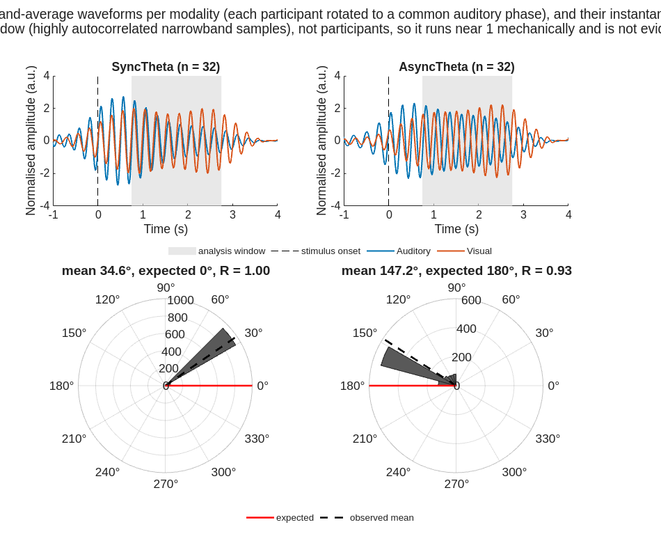
Channel-space theta power (whole-brain, visual, auditory, combined)
Four trial-level 4 Hz power measures over the same channel space, differing only in how channels are weighted: unweighted across all GOOD channels (whole-brain, the non-specific control), weighted by each participant's visual weights, weighted by their auditory weights, and the mean of the visual and auditory ones. SourceTheta, the earlier single-max-channel version of the combined measure, is kept alongside for comparison.
All four are sensor-space, so "visual" and "auditory" mean channels weighted toward each modality, not separated cortical sources; field spread leaves them substantially correlated.
Resolved dependencies: AudioWeights, VisuoOrthAudioWeights from "Sensor weight estimation" above; badinds recomputed per subject (participant-specific), as in the phase-lag section.
Per-channel, per-trial power is taken from ThetaBand_pSub (Time-frequency section) at its 4 Hz bin. ThetaBand_pSub spans all channels and all trials, so it's restricted here to the same GOOD ChanType channel space the weights are indexed in, and to GOOD trials, to stay consistent with the weights and the other trial-level tables above.
Weights are rectified before use. With WeightNorm = 'subtract' they are ITC differences and can be negative; the earlier version only took their argmax, so sign didn't matter, but a weighted average with negative weights would subtract power at below-baseline channels rather than down-weight them.
WholeBrainTheta_pSub = table(); VisualTheta_pSub = table(); AuditoryTheta_pSub = table(); AudioVisualTheta_pSub = table(); VisualDelta_pSub = table(); AuditoryDelta_pSub = table(); SourceTheta_pSub = table(); for iSub = 1:length(Subs) sub_nam = sprintf('sub-%02d', Subs(iSub)); sub_in = fullfile(outdir, sub_nam, 'meg'); cd(sub_in) D = spm_eeg_load(fullfile(sub_in, sprintf('cesub-%02d_task-TIME_run-1_meg_proc-sss.mat', Subs(iSub)))); ChanIndsGood = indchantype(D, ChanType, 'GOOD'); % same channel space as the sensor weights below [~, badinds] = intersect(indchantype(D, ChanType), D.badchannels); TrialInds = indtrial(D, Conds, 'GOOD'); if size(ThetaBand_pSub{iSub}, 2) ~= (Ind8Hz - Ind3Hz + 1) error(['Subject %d: ThetaBand_pSub has %d frequency bins, not the %d spanning ' ... '%g-%g Hz, so Ind4HzInBand does not point at %g Hz. Check what TIME_TF.m ' ... 'saved.'], Subs(iSub), size(ThetaBand_pSub{iSub}, 2), ... Ind8Hz - Ind3Hz + 1, ThetaBand(1), ThetaBand(2), ThetaHz); end % Per-(GOOD ChanType channel), per-trial 4 Hz power ThetaChan = squeeze(ThetaBand_pSub{iSub}(ChanIndsGood, Ind4HzInBand, :)); AudChanWeights = AudioWeights{iSub}'; AudChanWeights(badinds) = []; AudChanWeights = AudChanWeights / sum(abs(AudChanWeights)); [~, iAudMaxchan] = max(AudChanWeights); VisChanWeights = VisuoOrthAudioWeights{iSub}'; VisChanWeights(badinds) = []; VisChanWeights = VisChanWeights / sum(abs(VisChanWeights)); [~, iVisMaxchan] = max(VisChanWeights); SourceTheta = squeeze(mean(ThetaChan([iVisMaxchan iAudMaxchan], TrialInds), 1)); wAud = max(AudChanWeights, 0); wVis = max(VisChanWeights, 0); if sum(wAud) == 0 || sum(wVis) == 0 error('Subject %d: all auditory or all visual weights are non-positive.', Subs(iSub)); end wAud = wAud / sum(wAud); wVis = wVis / sum(wVis); WholeBrainTheta = mean(ThetaChan(:, TrialInds), 1); AuditoryTheta = wAud' * ThetaChan(:, TrialInds); VisualTheta = wVis' * ThetaChan(:, TrialInds); AudioVisualTheta = (AuditoryTheta + VisualTheta) / 2; % Same weights applied at the delta drive frequency. Channel sensitivity % is frequency-independent, so the theta-derived weights carry over. if size(DeltaBand_pSub{iSub}, 2) ~= (Ind2Hz - Ind1_2Hz + 1) error(['Subject %d: DeltaBand_pSub has %d frequency bins, not the %d ' ... 'spanning %g-%g Hz, so Ind1_7HzInBand does not point at %g Hz.'], ... Subs(iSub), size(DeltaBand_pSub{iSub}, 2), Ind2Hz - Ind1_2Hz + 1, ... DeltaBand(1), DeltaBand(2), DeltaHz); end DeltaChan = squeeze(DeltaBand_pSub{iSub}(ChanIndsGood, Ind1_7HzInBand, :)); AuditoryDelta = wAud' * DeltaChan(:, TrialInds); VisualDelta = wVis' * DeltaChan(:, TrialInds); ParticipantID = repmat(Subs(iSub), length(TrialInds), 1); SourceTheta_pSub = [SourceTheta_pSub; table(ParticipantID, TrialInds', SourceTheta', ... 'VariableNames', {'ParticipantID','TrialNum','SourceTheta'})]; WholeBrainTheta_pSub = [WholeBrainTheta_pSub; table(ParticipantID, TrialInds', WholeBrainTheta', 'VariableNames', {'ParticipantID','TrialNum','WholeBrainTheta'})]; VisualTheta_pSub = [VisualTheta_pSub; table(ParticipantID, TrialInds', VisualTheta', 'VariableNames', {'ParticipantID','TrialNum','VisualTheta'})]; AuditoryTheta_pSub = [AuditoryTheta_pSub; table(ParticipantID, TrialInds', AuditoryTheta', 'VariableNames', {'ParticipantID','TrialNum','AuditoryTheta'})]; AudioVisualTheta_pSub = [AudioVisualTheta_pSub; table(ParticipantID, TrialInds', AudioVisualTheta', 'VariableNames', {'ParticipantID','TrialNum','AudioVisualTheta'})]; VisualDelta_pSub = [VisualDelta_pSub; table(ParticipantID, TrialInds', VisualDelta', 'VariableNames', {'ParticipantID','TrialNum','VisualDelta'})]; AuditoryDelta_pSub = [AuditoryDelta_pSub; table(ParticipantID, TrialInds', AuditoryDelta', 'VariableNames', {'ParticipantID','TrialNum','AuditoryDelta'})]; end cd(resultdir) save('SourceTheta.mat', 'SourceTheta_pSub')
Cluster permutation on 4 Hz power over channels
Encoding-window 4 Hz power against the pre-stimulus baseline, tested over channels with cluster-based permutation, separately for the theta conditions (SyncTheta, AsyncTheta) and the non-theta ones (NoFlicker, SyncDelta).
Taken from bThetaBand_pSub, which TIME_TF.m already expresses as percentage change from BWin and already averages over EWin, so the null is zero and the test is a one-sample (paired-against-zero) t at each channel.
Planar gradiometer pairs are combined first (204 channels -> 102 positions), so the test is over sensor positions rather than over the two orientations separately.
ClustConds = {{'SyncTheta', 'AsyncTheta'}, {'NoFlicker', 'SyncDelta'}};
ClustNames = {'ClusterTheta4Hz', 'ClusterNonTheta4Hz'};
nRand = 5000;
ClustAlpha = 0.01; % cluster-forming threshold; the only valid way to make clusters smaller
% Baseline-corrected power to test. bThetaBand_pSub is percentage change from BWin; ThetaBand_pSub is the same power with the baseline subtracted. Both have a zero null, but the percentage form divides by a 0.2 s single-trial baseline, which goes NaN where that baseline is zero and is biased upward where it is merely small. The untested one is carried through for the diagnostics at the end of the section.
ClustPow = ThetaBand_pSub;
ClustPowAlt = bThetaBand_pSub;
PowNames = {'baseline-subtracted', '% change'};
% What 4 Hz power is referenced to. 'prestim' leaves it as power against BWin. 'flank' subtracts the mean of the neighbouring bins in ClustFlank, so anything broadband -- including the global decrease that is common to every condition -- cancels, and only a frequency-specific response survives. The bins either side of 4 Hz are skipped because the 0.25 Hz filter half-bandwidth leaks the drive into them.
ClustBase = 'flank';
ClustFlank = [ThetaHz - 1, ThetaHz + 1]; % Hz, one guard bin either side of the peak
% Reference channel order, same subject XY was taken from in Setup
Dref = spm_eeg_load(fullfile(outdir, 'sub-30/meg/esub-30_task-loc_meg_proc-sss.mat'));
refLabels = Dref.chanlabels(indchantype(Dref, ChanType));
% Planar pairs share their label up to the final character
[pairLabels, ~, pairIdx] = unique(cellfun(@(s) s(1:end-1), refLabels, 'UniformOutput', false), 'stable');
if any(accumarray(pairIdx, 1) ~= 2)
error('Channel labels do not group into pairs of two; check ChanType and the label format.');
end
nPair = numel(pairLabels);
pairLabels = pairLabels(:); % FieldTrip expects label lists as columns
pairXY = [accumarray(pairIdx, XY(1, :)'), accumarray(pairIdx, XY(2, :)')] / 2;
nBandFreq = Ind8Hz - Ind3Hz + 1;
freqInBand = frequencies(Ind3Hz:Ind8Hz);
iFlank = find(ismember(freqInBand, ClustFlank));
if strcmp(ClustBase, 'flank') && numel(iFlank) ~= numel(ClustFlank)
error('ClustFlank frequencies are not all in the %g-%g Hz band.', ThetaBand(1), ThetaBand(2));
end
SubMean = {nan(nPair, length(Subs)), nan(nPair, length(Subs))}; % position x subject, per condition group
BandMean = {nan(nPair, nBandFreq, length(Subs)), nan(nPair, nBandFreq, length(Subs))}; % same, over the whole band
BandMeanA = BandMean; % ClustPowAlt, diagnostics only
TrialPow = cell(length(Subs), 2);
TrialNums = cell(length(Subs), 2);
for iSub = 1:length(Subs)
sub_nam = sprintf('sub-%02d', Subs(iSub));
sub_in = fullfile(outdir, sub_nam, 'meg');
cd(sub_in)
D = spm_eeg_load(fullfile(sub_in, sprintf('cesub-%02d_task-TIME_run-1_meg_proc-sss.mat', Subs(iSub))));
ChanInds = indchantype(D, ChanType);
if ~isequal(D.chanlabels(ChanInds), refLabels)
error('Subject %d: channel order differs from the reference subject, so positions would not align across subjects.', Subs(iSub));
end
if size(ClustPow{iSub}, 2) ~= (Ind8Hz - Ind3Hz + 1)
error('Subject %d: ClustPow has %d frequency bins, not the %d spanning %g-%g Hz.', ...
Subs(iSub), size(ClustPow{iSub}, 2), Ind8Hz - Ind3Hz + 1, ThetaBand(1), ThetaBand(2));
end
[~, badinds] = intersect(ChanInds, D.badchannels);
for g = 1:2
TrialInds = indtrial(D, ClustConds{g}, 'GOOD');
if isempty(TrialInds)
error(['Subject %d: no GOOD trials for %s. Check the condition labels ' ...
'against D.conditions.'], Subs(iSub), strjoin(ClustConds{g}, '/'));
end
P = ClustPow{iSub}(ChanInds, :, TrialInds);
Pa = ClustPowAlt{iSub}(ChanInds, :, TrialInds);
P(badinds, :, :) = NaN;
Pa(badinds, :, :) = NaN;
% Combine the two orientations of each pair
Pc = nan(nPair, nBandFreq, numel(TrialInds));
Pd = nan(nPair, nBandFreq, numel(TrialInds));
for p = 1:nPair
Pc(p, :, :) = mean(P(pairIdx == p, :, :), 1, 'omitnan');
Pd(p, :, :) = mean(Pa(pairIdx == p, :, :), 1, 'omitnan');
end
if strcmp(ClustBase, 'flank')
Trial4 = Pc(:, Ind4HzInBand, :) - mean(Pc(:, iFlank, :), 2);
else
Trial4 = Pc(:, Ind4HzInBand, :);
end
TrialPow{iSub, g} = reshape(Trial4, nPair, []);
TrialNums{iSub, g} = TrialInds';
BandMean{g}(:, :, iSub) = mean(Pc, 3);
BandMeanA{g}(:, :, iSub) = mean(Pd, 3);
SubMean{g}(:, iSub) = mean(TrialPow{iSub, g}, 2);
end
end
cd(resultdir)
% Subjects with no usable power at all are dropped from both groups, keeping the design paired. Scattered NaNs (both members of a pair bad) only remove the position.
nanCount = [sum(isnan(SubMean{1}), 1); sum(isnan(SubMean{2}), 1)]'; % subject x group
useSub = ~any(nanCount == nPair, 2);
for iSub = find(any(nanCount > 0, 2))'
fprintf('Subject %d: %d/%d positions NaN (theta), %d/%d (non-theta)%s\n', Subs(iSub), ...
nanCount(iSub, 1), nPair, nanCount(iSub, 2), nPair, ternary_str(~useSub(iSub), ' -- dropped', ''));
end
if sum(useSub) < 10
error('Only %d of %d subjects have usable power; check ClustPow upstream.', sum(useSub), length(Subs));
end
% A position enters the group test only if it survived in every retained subject
subIdx = find(useSub);
nUse = numel(subIdx);
keep = all(~isnan([SubMean{1}(:, subIdx) SubMean{2}(:, subIdx)]), 2);
keepIdx = find(keep);
fprintf('Testing %d positions over %d subjects\n', sum(keep), nUse);
if sum(keep) < 2
error('Only %d of %d positions have data in every retained subject.', sum(keep), nPair);
end
% Neighbours from a Delaunay triangulation of the 2D positions, computed here rather than through ft_prepare_neighbours so nothing depends on how this FieldTrip version handles a hand-built layout.
tri = delaunay(pairXY(:, 1), pairXY(:, 2));
connPair = false(nPair);
for e = [1 2; 2 3; 3 1]'
connPair(sub2ind([nPair nPair], tri(:, e(1)), tri(:, e(2)))) = true;
end
connPair = connPair | connPair';
connPair(1:nPair + 1:end) = false;
neighbours = struct('label', pairLabels, 'neighblabel', ...
arrayfun(@(p) pairLabels(connPair(p, :)), (1:nPair)', 'UniformOutput', false));
% The connectivity matrix is passed to the test directly: FieldTrip versions differ in whether they derive it from cfg.channel or take it from cfg.connectivity (whose default is false in older releases), and a wrong-sized matrix is what "invalid dimension of spatdimneighbstructmat" reports.
testLabels = pairLabels(keep);
nTest = numel(testLabels);
connmat = connPair(keep, keep);
fprintf('Neighbours: %d positions, %.1f each on average\n', nTest, mean(sum(connmat, 2)));
if ~any(connmat(:))
error(['The triangulation produced no edges. pairXY holds %d unique positions, ' ...
'and %d of its values are NaN.'], size(unique(pairXY, 'rows'), 1), sum(isnan(pairXY(:))));
end
ClusterStats = struct();
ClusterTabs = repmat({table()}, 2, 2); % group x sign
SignNames = {'Pos', 'Neg'};
for g = 1:2
% Each subject's mean against a matching set of zeros, so depsamplesT is a one-sample test of the baseline-corrected power
act = cell(1, nUse); base = cell(1, nUse);
for i = 1:nUse
tl = [];
tl.label = testLabels;
tl.time = 0;
tl.dimord = 'chan_time';
tl.avg = SubMean{g}(keep, subIdx(i));
act{i} = tl;
tl.avg = zeros(sum(keep), 1);
base{i} = tl;
end
cfg = [];
cfg.method = 'montecarlo';
cfg.statistic = 'ft_statfun_depsamplesT';
cfg.correctm = 'cluster';
cfg.clusteralpha = ClustAlpha;
cfg.clusterstatistic = 'maxsum';
cfg.minnbchan = 2;
cfg.tail = 0;
cfg.clustertail = 0;
cfg.alpha = 0.05;
cfg.correcttail = 'alpha';
cfg.numrandomization = nRand;
cfg.neighbours = neighbours;
cfg.channel = testLabels;
cfg.connectivity = connmat; % read by current FieldTrip
cfg.channeighbstructmat = connmat; % name used by older releases
cfg.parameter = 'avg';
cfg.design = [1:nUse 1:nUse; ones(1, nUse) 2 * ones(1, nUse)];
cfg.uvar = 1;
cfg.ivar = 2;
stat = ft_timelockstatistics(cfg, act{:}, base{:});
ClusterStats.(ClustNames{g}) = stat;
% Positive and negative clusters are kept apart: stat.mask merges them, and averaging power over positions whose effects run in opposite directions would cancel.
signSel = {keepIdx(stat.mask & stat.stat > 0), keepIdx(stat.mask & stat.stat < 0)};
sel = cat(1, signSel{:});
for iS = 1:2
fprintf('%s %s cluster: %d of %d positions\n', ClustNames{g}, ...
SignNames{iS}, numel(signSel{iS}), sum(keep));
end
% Topography of the t-map with the cluster's positions circled. Each pair's value is drawn back onto both of its members so the 204-channel layout used elsewhere in this script can be reused; the markers go on the combined positions, one per pair.
pairT = zeros(nPair, 1);
pairT(keepIdx) = stat.stat;
% Only tested positions are passed: untested ones would otherwise interpolate as zeros and look like real troughs.
chanSel = ismember(pairIdx, keepIdx);
XYsel = XY(:, chanSel);
inClust = [];
inClust.chantype = ChanType;
f = figure;
axClust = axes('Parent', f);
inClust.f = f.Number;
inClust.ParentAxes = axClust; % passed in so the markers below go on a known axes
spm_eeg_plotScalpData(pairT(pairIdx(chanSel)), XYsel, refLabels(chanSel), inClust);
if ~isempty(sel)
% spm_eeg_plotScalpData draws into image pixel coordinates, not sensor units: it rescales
% the positions it was given to a 0-100 grid and flips y for the image. Same transform here.
xmin = min(XYsel(1, :)); dxPix = (max(XYsel(1, :)) - xmin) / 100;
ymin = min(XYsel(2, :)); dyPix = (max(XYsel(2, :)) - ymin) / 100;
hold(axClust, 'on')
faceCol = {'k', 'w'}; % filled black = positive cluster, filled white = negative
for iS = 1:2
plot(axClust, (pairXY(signSel{iS}, 1) - xmin) / dxPix, ...
100 - (pairXY(signSel{iS}, 2) - ymin) / dyPix, ...
'ko', 'MarkerSize', 7, 'MarkerFaceColor', faceCol{iS});
end
hold(axClust, 'off')
end
title(sprintf('%s: t (%s), %d pos / %d neg', ClustNames{g}, ClustBase, ...
numel(signSel{1}), numel(signSel{2})), 'Interpreter', 'none')
set(findall(f, '-property', 'FontSize'), 'FontSize', 14);
save_fig(f, sprintf('cluster_%s', lower(ClustNames{g})))
% Trial-level power averaged over each cluster's positions, one column per sign. The cluster is defined on the mean over trials, which is orthogonal to any later within-condition memory contrast.
for iS = 1:2
if isempty(signSel{iS}), continue; end
colName = [ClustNames{g} SignNames{iS}];
T = table();
for iSub = 1:length(Subs)
vals = mean(TrialPow{iSub, g}(signSel{iS}, :), 1, 'omitnan')';
ParticipantID = repmat(Subs(iSub), numel(vals), 1);
T = [T; table(ParticipantID, TrialNums{iSub, g}, vals, ...
'VariableNames', {'ParticipantID', 'TrialNum', colName})];
end
ClusterTabs{g, iS} = T;
end
end
Subject 5: 2/102 positions NaN (theta), 2/102 (non-theta) Subject 18: 2/102 positions NaN (theta), 2/102 (non-theta) Subject 21: 2/102 positions NaN (theta), 2/102 (non-theta) Subject 32: 3/102 positions NaN (theta), 3/102 (non-theta) Testing 95 positions over 32 subjects Neighbours: 95 positions, 5.4 each on average using "ft_statistics_montecarlo" for the statistical testing using "ft_statfun_depsamplesT" for the single-sample statistics constructing randomized design total number of measurements = 64 total number of variables = 2 number of independent variables = 1 number of unit variables = 1 number of within-cell variables = 0 number of control variables = 0 using a permutation resampling approach repeated measurement in variable 1 over 32 levels number of repeated measurements in each level is 2 2 2 2 2 2 2 2 2 2 2 2 2 2 2 2 2 2 2 2 2 2 2 2 2 2 2 2 2 2 2 2 computing a parametric threshold for clustering computing statistic estimated time per randomization is 0.00 seconds computing statistic 5000 from 5000 found 1 positive clusters in observed data found 0 negative clusters in observed data computing clusters in randomization computing clusters in randomization 5000 from 5000 using a cluster-based method for multiple comparison correction the returned probabilities and the thresholded mask are corrected for multiple comparisons ClusterTheta4Hz Pos cluster: 92 of 95 positions ClusterTheta4Hz Neg cluster: 0 of 95 positions Warning: Duplicate data points have been detected and removed - corresponding values have been averaged. using "ft_statistics_montecarlo" for the statistical testing using "ft_statfun_depsamplesT" for the single-sample statistics constructing randomized design total number of measurements = 64 total number of variables = 2 number of independent variables = 1 number of unit variables = 1 number of within-cell variables = 0 number of control variables = 0 using a permutation resampling approach repeated measurement in variable 1 over 32 levels number of repeated measurements in each level is 2 2 2 2 2 2 2 2 2 2 2 2 2 2 2 2 2 2 2 2 2 2 2 2 2 2 2 2 2 2 2 2 computing a parametric threshold for clustering computing statistic estimated time per randomization is 0.00 seconds computing statistic 5000 from 5000 found 0 positive clusters in observed data found 0 negative clusters in observed data Warning: no clusters were found in the observed data using a cluster-based method for multiple comparison correction the returned probabilities and the thresholded mask are corrected for multiple comparisons ClusterNonTheta4Hz Pos cluster: 0 of 95 positions ClusterNonTheta4Hz Neg cluster: 0 of 95 positions Warning: Duplicate data points have been detected and removed - corresponding values have been averaged.
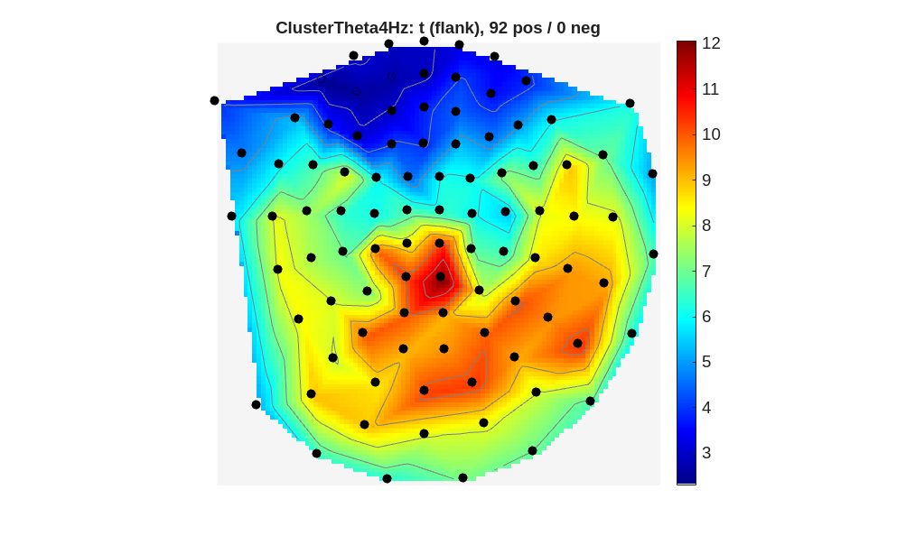
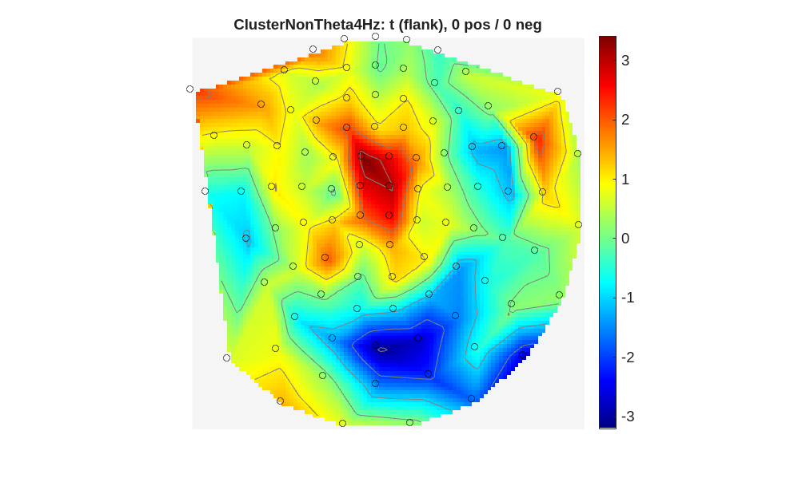
Cluster diagnostics
Whether the 4 Hz effect is specific to the theta drive or a global increase present in every condition. Nothing here feeds back into the saved results.
freqBand = frequencies(Ind3Hz:Ind8Hz);
BandSets = {BandMean, BandMeanA};
% Spectral profile across the theta band. A drive-specific response peaks at 4 Hz in the theta conditions only; a broadband onset response lifts every bin in both.
f = figure;
for iM = 1:2
subplot(1, 2, iM); hold on
for g = 1:2
plot(freqBand, squeeze(mean(BandSets{iM}{g}(keep, :, subIdx), [1 3], 'omitnan')), 'LineWidth', 1.5)
end
plot([ThetaHz ThetaHz], ylim, 'k--')
xlabel('Hz'); ylabel(PowNames{iM}); box off
legend({'theta conds', 'non-theta conds'}, 'Location', 'best')
end
set(findall(f, '-property', 'FontSize'), 'FontSize', 12);
save_fig(f, 'cluster_freq_profile')
for iM = 1:2
p4 = squeeze(mean(BandSets{iM}{1}(keep, Ind4HzInBand, subIdx), 1, 'omitnan'));
pOff = squeeze(mean(BandSets{iM}{1}(keep, [Ind4HzInBand - 2 Ind4HzInBand + 2], subIdx), [1 2], 'omitnan'));
fprintf('%s, theta conds: 4 Hz %.3f vs 3/5 Hz %.3f (difference %.3f)\n', ...
PowNames{iM}, mean(p4, 'omitnan'), mean(pOff, 'omitnan'), ...
mean(p4, 'omitnan') - mean(pOff, 'omitnan'));
end
% Theta minus non-theta at 4 Hz, paired across the retained subjects. This is the contrast that removes anything common to all conditions.
Dif = SubMean{1}(keep, subIdx) - SubMean{2}(keep, subIdx);
tDif = mean(Dif, 2) ./ (std(Dif, 0, 2) / sqrt(nUse));
fprintf('Theta - non-theta at 4 Hz: t from %.2f to %.2f, %d of %d positions with |t| > 2\n', ...
min(tDif), max(tDif), sum(abs(tDif) > 2), numel(tDif));
pairD = zeros(nPair, 1);
pairD(keepIdx) = tDif;
chanSel = ismember(pairIdx, keepIdx);
inDif = [];
inDif.chantype = ChanType;
f = figure;
axDif = axes('Parent', f);
inDif.f = f.Number; inDif.ParentAxes = axDif;
spm_eeg_plotScalpData(pairD(pairIdx(chanSel)), XY(:, chanSel), refLabels(chanSel), inDif);
title('Theta minus non-theta at 4 Hz (paired t)')
set(findall(f, '-property', 'FontSize'), 'FontSize', 14);
save_fig(f, 'cluster_theta_minus_nontheta')
baseline-subtracted, theta conds: 4 Hz -0.022 vs 3/5 Hz -0.154 (difference 0.132) % change, theta conds: 4 Hz 47.928 vs 3/5 Hz 25.359 (difference 22.569) Theta - non-theta at 4 Hz: t from 0.95 to 9.89, 80 of 95 positions with |t| > 2 Warning: Duplicate data points have been detected and removed - corresponding values have been averaged. Warning: Exported image displays axes toolbar. To remove axes toolbar from image, export again.
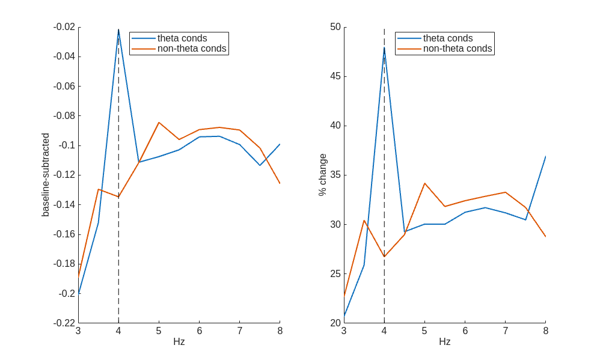
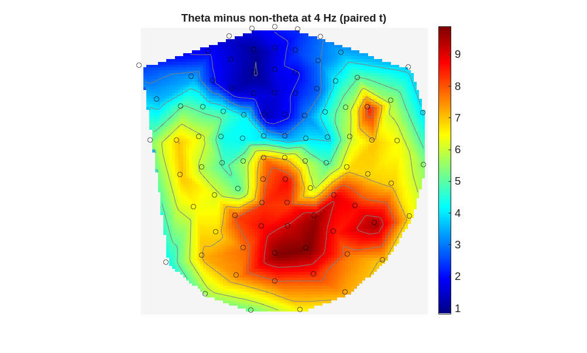
Combine with behavioural data
Merges every trial-level MEG measure above into the per-subject behavioural files, for one table for mixed-effects modelling in R.
Each behavioural CSV has one row per encoding trial, matching the order of trials in that subject's merged MEG file, so TrialNum indexes directly into its rows. Trials with no corresponding MEG measure (bad trials, or conditions a measure doesn't cover — Synchronicity and EntrainStrength exist only for SyncTheta/AsyncTheta) are left NaN.
Two assumptions are checked rather than trusted, since a silent failure of either would misalign MEG and behavioural trials with no error, invalidating every trial-level result: one behavioural file per subject in subject order, and no MEG trial index exceeding the behavioural count.
BehDir = '/imaging/henson/TIME/BehavioralAnalysisScripts/CombinedMemoryData'; d = dir(fullfile(BehDir, '*.csv')); if length(d) ~= length(Subs) warning(['Found %d behavioural files for %d subjects. The merge below maps ' ... 'the files to subjects by their order in this listing, so a missing ' ... 'or extra file will shift every subsequent subject. Check the file ' ... 'names against Subs before using the output.'], length(d), length(Subs)); end % {source table, column in that table, name to give it in the output} MeasureMap = { ... Theta4Hz_pSub, 'Theta4Hz', 'Theta4Hz'; ... Delta1_7Hz_pSub, 'Delta1_7Hz', 'Delta1_7Hz'; ... SourceTheta_pSub, 'SourceTheta', 'SourceTheta'; ... WholeBrainTheta_pSub, 'WholeBrainTheta', 'WholeBrainTheta'; ... VisualTheta_pSub, 'VisualTheta', 'VisualTheta'; ... AuditoryTheta_pSub, 'AuditoryTheta', 'AuditoryTheta'; ... AudioVisualTheta_pSub, 'AudioVisualTheta', 'AudioVisualTheta'; ... Sync_pSub, 'Synchronicity', 'Synchronicity'; ... VisualDelta_pSub, 'VisualDelta', 'VisualDelta'; ... AuditoryDelta_pSub, 'AuditoryDelta', 'AuditoryDelta'; ... Sync_pSub, 'EntrainStrength', 'EntrainStrength'}; % Added only where the permutation test above found a significant cluster for g = 1:2 for iS = 1:2 if ~isempty(ClusterTabs{g, iS}) colName = [ClustNames{g} SignNames{iS}]; MeasureMap = [MeasureMap; {ClusterTabs{g, iS}, colName, colName}]; end end end Subs_Data = table(); MisalignedSubs = []; % Map from MEG trial index to behavioural row, derived per subject rather than assumed to be the identity. % % The merged MEG file concatenates runs in order with continuous trial indices, while the behavioural file always holds a full 64 rows per run. If a run was cut short, every later MEG trial is displaced relative to the behavioural file by the missing count, unnoticed downstream. Sub-23: its first run holds 16 trials rather than 64, so from run 2 onward the two are 48 rows apart. % % The mapping is recovered from condition labels: the design is blocked in 16-trial single-condition blocks, so a run's condition sequence identifies its position within that run's 64 behavioural rows. Run trial counts come from the preprocessing report, since per-run epoched files no longer exist by this stage (bad_things.mat is the older name for the same file, accepted too). reportFile = fullfile(outdir, 'preproc_report.mat'); if exist(reportFile, 'file') ~= 2 reportFile = fullfile(outdir, 'bad_things.mat'); end if exist(reportFile, 'file') ~= 2 error(['Neither preproc_report.mat nor bad_things.mat was found in %s. The ' ... 'per-run trial counts they hold are needed to work out where each run ' ... 'begins in the merged file, and the per-run epoched files are deleted ' ... 'after merging. Re-run the artefact detection section of ' ... 'Preprocessing.m.'], outdir); end PreprocReport = load(reportFile); if ~isfield(PreprocReport, 'nTrials') error(['%s does not contain nTrials. It was written by an earlier version of ' ... 'Preprocessing.m; re-run its artefact detection section.'], reportFile); end TrialMap = cell(1, length(Subs)); for iSub = 1:length(Subs) sub_nam = sprintf('sub-%02d', Subs(iSub)); sub_in = fullfile(outdir, sub_nam, 'meg'); Dm = spm_eeg_load(fullfile(sub_in, ... sprintf('cesub-%02d_task-TIME_run-1_meg_proc-sss%s.mat', Subs(iSub), transdef))); megCond = Dm.conditions; % Trials per run, in merge order. Read from the preprocessing report, % not the per-run epoched files (deleted after merging). nTrials counts % every trial including bad ones, matching the merged file. nPerRun = PreprocReport.nTrials{iSub}(1:3); if any(isnan(nPerRun)) error(['Subject %d: trial counts are missing for run %s in the ' ... 'preprocessing report.'], Subs(iSub), mat2str(find(isnan(nPerRun)))); end if sum(nPerRun) ~= Dm.ntrials error(['Subject %d: the three run files hold %d trials but the merged file ' ... 'holds %d. The merge did not simply concatenate the runs, so the ' ... 'mapping below cannot be derived.'], ... Subs(iSub), sum(nPerRun), Dm.ntrials); end behTab = readtable(fullfile(BehDir, d(iSub).name)); behCond = behTab.Condition; % Run boundaries come from the file's own RunNumber column, not equal % row division: a short run is short in both records, so assuming 64 % rows/run fails for exactly the subjects this mapping exists to handle. if ~ismember('RunNumber', behTab.Properties.VariableNames) error(['Subject %d: the behavioural file has no RunNumber column, which is ' ... 'needed to locate each run.'], Subs(iSub)); end behRunOf = behTab.RunNumber; if ~any(ismember(megCond, behCond)) error(['Subject %d: no MEG condition label appears in the behavioural ' ... 'Condition column, so the two cannot be aligned. MEG labels: %s. ' ... 'Behavioural labels: %s.'], Subs(iSub), ... strjoin(unique(megCond), ', '), strjoin(unique(behCond), ', ')); end megCond = megCond(:); % Forced to columns: D.conditions returns a row, readtable a column. behCond = behCond(:); map = nan(1, sum(nPerRun)); megStart = 0; for iRun = 1:3 megIdx = megStart + (1:nPerRun(iRun)); behRow = find(behRunOf == iRun); % this run's rows, however many nBehThis = numel(behRow); if nBehThis < nPerRun(iRun) error(['Subject %d run %d: the MEG file has %d trials but the ' ... 'behavioural file has only %d rows for that run.'], ... Subs(iSub), iRun, nPerRun(iRun), nBehThis); end best = 0; bestOff = 0; % slide this run's condition sequence over its behavioural rows mcRun = megCond(megIdx); for off = 0:(nBehThis - nPerRun(iRun)) bcRun = behCond(behRow(off + (1:nPerRun(iRun)))); agree = mean(strcmp(mcRun(:), bcRun(:))); if agree > best, best = agree; bestOff = off; end end % A correctly placed run should match its behavioural rows exactly % (blocked design). Below that, the mapping is undetermined, and % continuing would silently attach every trial-level value to the % wrong trial. if best < 0.99 error(['Subject %d run %d: the best condition agreement over all %d ' ... 'candidate offsets is only %.0f%%, so this run cannot be placed ' ... 'in the behavioural file. Check that the behavioural file ' ... 'belongs to this subject.'], ... Subs(iSub), iRun, nBehThis - nPerRun(iRun) + 1, 100 * best); end if best < 1 warning(['Subject %d run %d: condition agreement is %.1f%% rather than ' ... '100%%. The mapping is probably right but should be checked.'], ... Subs(iSub), iRun, 100 * best); end map(megIdx) = behRow(bestOff + (1:nPerRun(iRun))); % Reported only when the run is not simply row-for-row, which is the % case that would otherwise pass unnoticed. if bestOff ~= 0 || nPerRun(iRun) ~= nBehThis fprintf(['Subject %d run %d: %d MEG trials mapped to behavioural rows ' ... '%d to %d of %d (%.0f%% condition agreement).\n'], ... Subs(iSub), iRun, nPerRun(iRun), map(megIdx(1)), map(megIdx(end)), ... nBehThis, 100 * best); end megStart = megStart + nPerRun(iRun); end if any(isnan(map)) % Final check on the completed map, independent of how it was built. error('Subject %d: %d of %d MEG trials were left unmapped.', ... Subs(iSub), sum(isnan(map)), numel(map)); end if numel(unique(map)) ~= numel(map) error('Subject %d: the mapping sends two MEG trials to the same behavioural row.', ... Subs(iSub)); end bcMapped = behCond(map); nBad = sum(~strcmp(megCond(:), bcMapped(:))); if nBad > 0 error(['Subject %d: %d of %d trials still disagree on condition after ' ... 'mapping. The MEG and behavioural files cannot be aligned.'], ... Subs(iSub), nBad, numel(map)); end TrialMap{iSub} = map; end save(fullfile(resultdir, 'TrialMap.mat'), 'TrialMap') for iSub = 1:length(d) Sub_Data = readtable(fullfile(BehDir, d(iSub).name)); nBehTrials = height(Sub_Data); thisMap = TrialMap{iSub}; for iMeas = 1:size(MeasureMap, 1) srcTab = MeasureMap{iMeas, 1}; srcCol = MeasureMap{iMeas, 2}; outName = MeasureMap{iMeas, 3}; srcRows = srcTab.ParticipantID == Subs(iSub); trialNo = srcTab.TrialNum(srcRows); vals = srcTab.(srcCol)(srcRows); if any(trialNo > numel(thisMap)) error(['Subject %d: an MEG trial index (%d) exceeds the %d trials in ' ... 'the merged file.'], Subs(iSub), max(trialNo), numel(thisMap)); end Sub_Data.(outName) = nan(nBehTrials, 1); Sub_Data.(outName)(thisMap(trialNo)) = vals; end % MEG-derived condition label, duplicating the behavioural file's own % column as a deliberate cross-check: disagreement on any trial means % the merge is misaligned. syncRows = Sync_pSub.ParticipantID == Subs(iSub); Sub_Data.MEGCondition = repmat({''}, nBehTrials, 1); Sub_Data.MEGCondition(thisMap(Sync_pSub.TrialNum(syncRows))) = Sync_pSub.Condition(syncRows); % Row index within the merged MEG file -- named distinctly from the % behavioural TrialNumber column, which counts within a block (1-16). Sub_Data.MEGTrialIndex = (1:nBehTrials)'; if ~ismember('ParticipantID', Sub_Data.Properties.VariableNames) Sub_Data.ParticipantID = repmat(Subs(iSub), nBehTrials, 1); end % Alignment check: Synchronicity/EntrainStrength exist only for the two % theta conditions, so the MEG-derived label must agree with the % behavioural file's own wherever assigned. Disagreement means the % mapping is wrong for this subject and every merged measure is % attached to the wrong trial -- otherwise a silent failure. if ismember('Condition', Sub_Data.Properties.VariableNames) checkRows = ~cellfun(@isempty, Sub_Data.MEGCondition); nDisagree = sum(~strcmp(Sub_Data.MEGCondition(checkRows), Sub_Data.Condition(checkRows))); if nDisagree > 0 MisalignedSubs = [MisalignedSubs Subs(iSub)]; error(['Subject %d (%s): MEG and behavioural condition labels disagree on ' ... '%d of %d assigned trials, so every trial-level value for this ' ... 'subject is attached to the wrong trial. This should not be ' ... 'reachable, since the mapping above is verified against the same ' ... 'labels, so it indicates a fault in the merge rather than in the ' ... 'recordings.'], Subs(iSub), d(iSub).name, nDisagree, sum(checkRows)); end end Subs_Data = [Subs_Data; Sub_Data]; end % MisalignedSubs is now unreachable, since any disagreement raises an error above. It is kept so the variable exists for anything downstream that expects it. cd(resultdir) writetable(Subs_Data, 'DatawTheta.csv')
Subject 23 run 1: 16 MEG trials mapped to behavioural rows 1 to 16 of 64 (100% condition agreement).
Diagnostics and visualisation
Scalp topographies of the estimated weights (per subject and averaged) and max-weight channels, plus polar histograms of phase-lag distributions. None feeds back into the saved results; visual inspection only.
in.chantype = ChanType; % Re-load the same non-transformed reference subject used for XY in Setup (not whichever D is left over from the loop above) for consistent channel labels/order. Dref = spm_eeg_load(fullfile(outdir, 'sub-30/meg/esub-30_task-loc_meg_proc-sss.mat')); chanLabels = Dref.chanlabels(indchantype(Dref, ChanType)); % assumed shared order/layout across subjects % Off by default (64 figures); group averages above answer most questions. Set true to inspect a specific subject. PlotSubjectTopos = false; weightSets = {AudioWeights, 'Auditory Weights'; ... VisuoOrthAudioWeights, 'Visual Weights (orthogonalised)'}; if PlotSubjectTopos for iSet = 1:size(weightSets, 1) weights = weightSets{iSet, 1}; setName = weightSets{iSet, 2}; for iSub = 1:length(Subs) f = figure; in.f = f.Number; [~, ~] = spm_eeg_plotScalpData(weights{iSub}', XY, chanLabels, in); title(sprintf('Sub-%02d %s', Subs(iSub), setName)) % Larger fonts on the topography figures only (title, colourbar, % axes): applied to this figure's objects rather than globally. set(findall(f, '-property', 'FontSize'), 'FontSize', 14); shortName = regexprep(lower(setName), '[^a-z0-9]+', '_'); save_fig(f, sprintf('weights_sub%02d_%s', Subs(iSub), shortName)) end end end % --- Group-average weight topographies --- meanWeightSets = {mAudioWeights, 'Mean Auditory Weights'; ... mVisuoOrthAudioWeights, 'Mean Visual Weights (orthogonalised)'}; for iSet = 1:size(meanWeightSets, 1) f = figure; in.f = f.Number; [~, ~] = spm_eeg_plotScalpData(meanWeightSets{iSet, 1}', XY, chanLabels, in); title([meanWeightSets{iSet, 2} ' ' ChanType]) % Larger fonts on the topography figures only (title, colourbar, axes): % applied to this figure's objects rather than globally. set(findall(f, '-property', 'FontSize'), 'FontSize', 14); shortName = regexprep(lower(meanWeightSets{iSet, 2}), '[^a-z0-9]+', '_'); save_fig(f, sprintf('weights_%s', shortName)) end % --- Phase-lag distributions: per-subject condition mean and trial-averaged-signal-based --- % Side-by-side subplots per condition, not overlaid — overlaying made bars occlude each other exactly where the comparison matters. % % Two views: per-subject condition means, and lag from the trial-averaged signal. If stimulation set the intended offsets, the two distributions should sit ~180 deg apart whatever their absolute position. % % The paired difference in each title is the circular mean of each subject's own Sync-minus-Async, not the difference of the two means — not equal for circular data, and the paired version is the meaningful one: it cancels idiosyncratic latency and is invariant to sign-flip errors. condColours = {[0.00 0.45 0.70], [0.85 0.33 0.10]}; % blue, orange condLabels = {'Synchronous', 'Asynchronous'}; plotSets = {VAphsLag, 'subject means'; ... AvgLag, 'trial-averaged signal'}; for iSet = 1:size(plotSets, 1) dataSet = plotSets{iSet, 1}; setName = plotSets{iSet, 2}; for iMode = 1:nModes figure('Position', [100 100 900 480]) pax = gobjects(1, length(PhaseConds)); cMeans = nan(1, length(PhaseConds)); for iCond = 1:length(PhaseConds) vals = dataSet{iMode}(:, iCond); vals = vals(~isnan(vals)); cMeans(iCond) = angle(mean(exp(1i * vals))); pax(iCond) = polaraxes('Parent', gcf, ... 'Position', [0.06 + 0.48 * (iCond - 1), 0.08, 0.38, 0.62]); hold(pax(iCond), 'on') if isempty(vals) title(pax(iCond), sprintf('%s: no data', condLabels{iCond})) continue end polarhistogram(pax(iCond), vals, 20, ... 'FaceColor', condColours{iCond}, 'FaceAlpha', 1); rl = rlim(pax(iCond)); polarplot(pax(iCond), [cMeans(iCond) cMeans(iCond)], [0 rl(2)], ... '--k', 'LineWidth', 2); title(pax(iCond), sprintf('%s: mean %.1f%c, R = %.3f', condLabels{iCond}, ... cMeans(iCond) * 180 / pi, char(176), abs(mean(exp(1i * vals)))), ... 'FontSize', 10, 'FontWeight', 'normal') end valid = isgraphics(pax); if any(valid) rmax = max(arrayfun(@(a) max(rlim(a)), pax(valid))); arrayfun(@(a) rlim(a, [0 rmax]), pax(valid)); end pairedDiff = angle(mean(exp(1i * ... (dataSet{iMode}(:, 1) - dataSet{iMode}(:, 2))), 'omitnan')) * 180 / pi; if RealignFlips realignNote = ' -- REALIGNED: single-condition concentration is not interpretable'; else realignNote = ''; end sg = sgtitle(sprintf('%s (%s): paired Sync minus Async = %.1f%c%s', ... WeightModeLabels{iMode}, setName, pairedDiff, char(176), realignNote)); sg.FontSize = 12; sg.FontWeight = 'bold'; shortSetName = regexprep(lower(setName), '[^a-z0-9]+', '_'); save_fig(gcf, sprintf('phaselag_dist_%s_%s', shortSetName, WeightModes{iMode})) end end % --- Flip-invariant paired difference, and bimodality diagnostics --- % A sign-flip error rotates a subject's lag 180deg, splitting one true cluster into two lobes 180deg apart. Two consequences: % % The per-subject Sync-minus-Async difference is immune, since one flip per subject rotates both conditions together — the robust measure of whether stimulation set the intended offsets, plotted here. % % Bimodality can be quantified: R1 is raw-angle concentration, R2 is concentration after doubling the angles (maps two 180deg-apart lobes onto each other). R2 >> R1 means the distribution is axially clustered — split by flip errors, not genuinely dispersed. fprintf('\n%-24s %6s %6s %6s %6s %6s\n', 'Filter', ... 'R1syn', 'R2syn', 'R1asy', 'R2asy', 'Rdiff'); for iMode = 1:nModes lagS = VAphsLag{iMode}(:, 1); lagS = lagS(~isnan(lagS)); lagA = VAphsLag{iMode}(:, 2); lagA = lagA(~isnan(lagA)); dfm = VAphsLag{iMode}(:, 1) - VAphsLag{iMode}(:, 2); dfm = dfm(~isnan(dfm)); fprintf('%-24s %6.3f %6.3f %6.3f %6.3f %6.3f\n', WeightModeLabels{iMode}, ... abs(mean(exp(1i * lagS))), abs(mean(exp(2i * lagS))), ... abs(mean(exp(1i * lagA))), abs(mean(exp(2i * lagA))), ... abs(mean(exp(1i * dfm)))); end fprintf(['R1 = concentration of the angles, R2 = concentration after doubling them.\n' ... 'R2 >> R1 indicates two lobes 180 deg apart, the signature of sign-flip errors.\n' ... 'Rdiff is the concentration of the paired difference, which is flip-invariant:\n' ... 'a high value with low R1 means the flips are unreliable but the effect is not.\n']); for iMode = 1:nModes dfm = VAphsLag{iMode}(:, 1) - VAphsLag{iMode}(:, 2); dfm = dfm(~isnan(dfm)); if isempty(dfm), continue, end figure pax = polaraxes; hold(pax, 'on') polarhistogram(pax, dfm, 20, 'FaceColor', [0.35 0.35 0.35], 'FaceAlpha', 1); mDiff = angle(mean(exp(1i * dfm))); rl = rlim(pax); polarplot(pax, [mDiff mDiff], [0 rl(2)], '--k', 'LineWidth', 2); % Expected paired difference is the idealised 180 deg: ExpectedPaired is % derived from ExpectedPhase = [0, pi] (Sync minus Async = 0 minus 180), % NOT from the delivered stimulus offsets. Deviation of the observed mean % from this line is the full measured auditory-visual timing difference, % per the ExpectedPhase note in the phase-lag header. polarplot(pax, [ExpectedPaired ExpectedPaired], [0 rl(2)], '-r', 'LineWidth', 2); title(sprintf(['%s: per-subject Sync minus Async\nmean %.1f%c (expected %.1f%c, red), ' ... 'concentration R = %.3f'], WeightModeLabels{iMode}, ... mDiff * 180 / pi, char(176), ExpectedPaired * 180 / pi, char(176), ... abs(mean(exp(1i * dfm))))) save_fig(gcf, sprintf('phaselag_paired_diff_%s', WeightModes{iMode})) end % --- Polarity alignment gain --- % Alignment exists to stop opposite-polarity sensors cancelling in the weighted sum (and, since this session, to exclude unreliable channels too). This measures whether it worked: amplitude of each subject's aligned, reliability-filtered signal over the same channels unaligned. Above 1 means signal was recovered; near 1 means weights were already effectively single-polarity; below 1 means alignment hurt (a noise-dominated reference). figure bar(Subs, AlignGain) hold on yline(1, '--k', 'LineWidth', 1.5); legend({'Auditory', 'Visual'}, 'Location', 'best') xlabel('Subject'); ylabel('Amplitude ratio, aligned / unaligned') title('Polarity alignment gain for the Vector filter') save_fig(gcf, 'polarity_alignment_gain') fprintf('\nAlignment gain: auditory median %.2f, visual median %.2f\n', ... median(AlignGain(:, 1), 'omitnan'), median(AlignGain(:, 2), 'omitnan')); if any(AlignGain(:) < 1) fprintf(['Alignment reduced amplitude for at least one subject/modality; ' ... 'inspect those before trusting the Vector filter for them.\n']); end % --- Polarity-aligned vector weight topographies, per subject --- % A successful alignment should show a recognisable dipolar pattern with coherent regions of each sign, not a spatially random mix. Plotted per subject rather than averaged, since each subject's polarity reference (chanLeadingComponent's leading shared-shape component) is arbitrary in absolute sign, so signed weights don't average meaningfully across subjects. Uncomment to inspect; opens 2 figures per subject. % % for iSub = 1:length(Subs) % figure; in.f = gcf().Number; % [~, ~] = spm_eeg_plotScalpData(AudVecWeights_pSub{iSub}, XY, chanLabels, in); % title(sprintf('Sub-%02d aligned auditory vector weights', Subs(iSub))) % % figure; in.f = gcf().Number; % [~, ~] = spm_eeg_plotScalpData(VisVecWeights_pSub{iSub}, XY, chanLabels, in); % title(sprintf('Sub-%02d aligned visual vector weights', Subs(iSub))) % end % --- Scalp locations of each subject's auditory and visual maximum-weight channel --- audCol = [0.00 0.45 0.70]; visCol = [0.85 0.33 0.10]; xAud = nan(1, length(Subs)); xVis = nan(1, length(Subs)); for iSub = 1:length(Subs) audW = AudioWeights{iSub}; visW = VisuoOrthAudioWeights{iSub}; [~, xAud(iSub)] = max(audW); [~, xVis(iSub)] = max(visW); end % --- Fall back to the next-best visual channel for apparent outliers --- % A channel far from where every other subject's visual max sits is checked against two things already computed, not assumed to be a fixable spatial artefact: (1) whether this subject lacked a localiser, so orthogonalisation used the group-average auditory topography instead of their own and may have left real auditory contamination (see AudioWeights{iSub} = mAudioWeights substitution, and HasLocaliser); (2) whether visual weight selection was stable across split halves (halfAgree/halfCorr/halfRankPc above) — an unstable selection is substantially fitting noise, so a fallback isn't obviously more trustworthy than what it replaces. For flagged subjects, the fallback steps down their own ranking to the next channel within the group's typical spread. The group reference (medLoc, distThresh) is fixed from the initial selection, not recomputed as subjects are reassigned, so the criterion doesn't drift. Distances follow XY's native units (not necessarily mm). Two intentionally different thresholds. Only gross outliers are reassigned at all (modified z > 10 below), so a borderline channel is left as it was rather than second-guessed; but once a subject IS reassigned, the step-down loop keeps going until the replacement is back inside the group's ordinary spread (distThresh, a modified z of 3.5). The gap between 10 and 3.5 is deliberate, not a typo. visLoc = XY(:, xVis)'; medLoc = median(visLoc, 1); d = sqrt(sum((visLoc - medLoc) .^ 2, 2)); madD = median(abs(d - median(d))); modZ = 0.6745 * (d - median(d)) / madD; distThresh = median(d) + madD / 0.6745 * 3.5; % step-down target: modified z of 3.5 flagged = find(modZ(:)' > 10); % reassign only gross outliers nSkipped = 0; if ~isempty(flagged) fprintf('\nVisual max-weight channel is a spatial outlier for %d subject(s):\n', ... numel(flagged)); for iSub = flagged fprintf([' Sub-%02d: %.2f native-unit distance from group median (z = %.1f). ' ... 'Localiser: %s. Split-half agree: %s (Spearman r = %.2f, winner ' ... 'ranked %.0f%% in the other half). Trials entering visual weights: %d.\n'], ... Subs(iSub), d(iSub), modZ(iSub), ... ternary_str(HasLocaliser(iSub), 'yes (individual)', 'NO (group-average used)'), ... ternary_str(halfAgree(iSub), 'yes', 'no'), halfCorr(iSub), halfRankPc(iSub), ... nWeightTrials(iSub, 2)); [~, sortedInds] = sort(VisuoOrthAudioWeights{iSub}, 'descend'); rank = 2; % rank 1 is the flagged channel already rejected while rank <= numel(sortedInds) && ... sqrt(sum((XY(:, sortedInds(rank))' - medLoc) .^ 2)) > distThresh rank = rank + 1; end if rank <= numel(sortedInds) newDist = sqrt(sum((XY(:, sortedInds(rank))' - medLoc) .^ 2)); fprintf([' -> falling back to the rank-%d weighted channel instead ' ... '(now %.2f native-unit distance from group median, threshold %.2f).\n'], ... rank, newDist, distThresh); xVis(iSub) = sortedInds(rank); nSkipped = nSkipped + 1; else fprintf([' -> no channel in this subject''s ranking falls within the ' ... 'group''s typical spread; keeping the original (still flagged) ' ... 'channel, since no fallback candidate is any better.\n']); end end fprintf([' Cause: if Localiser is NO, the likely explanation is orthogonalising ' ... 'against the group-average auditory topography rather than this subject''s ' ... 'own. If split-half agreement is also poor, the original selection was ' ... 'substantially noise-driven, and the fallback above should be read as "less ' ... 'anomalous", not "confirmed correct".\n']); end fprintf('\nVisual max-weight channel skipped to a fallback for %d of %d subjects.\n', ... nSkipped, length(Subs)); % --- Flag channels chosen as both someone's auditory and someone's visual % max-weight channel, same subject or not --- % Visual weights are orthogonalised against auditory specifically to stop a dual-modality channel winning the visual arg-max (see phase-lag section header). Two things worth distinguishing: Same-subject overlap: a subject's own auditory and visual channel are identical — directly suggests orthogonalisation didn't fully remove the shared component for them. Cross-subject overlap: a channel is someone's auditory choice and a different subject's visual choice — less direct, but consistent with a channel generically attractive to both modalities (or just noisy). Checked numerically, not read off the figure: two subjects' points can visually coincide at the same sensor, easy to miss among 64 points without channel numbers printed. sharedChans = intersect(xAud, xVis); if ~isempty(sharedChans) fprintf('\n%d channel(s) chosen as both an auditory and a visual max-weight channel:\n', ... numel(sharedChans)); for ch = sharedChans audSubsHere = Subs(xAud == ch); visSubsHere = Subs(xVis == ch); sameSubj = intersect(audSubsHere, visSubsHere); fprintf(' Channel %d: auditory for sub(s) %s; visual for sub(s) %s%s\n', ... ch, mat2str(audSubsHere), mat2str(visSubsHere), ... ternary_str(~isempty(sameSubj), ... sprintf(' (SAME subject in both lists: %s)', mat2str(sameSubj)), ... ' (different subjects each side)')); end else fprintf('\nNo channel is chosen as both an auditory and a visual max-weight channel.\n'); end figure; hold on plot(XY(1, :), XY(2, :), 'o', 'MarkerSize', 8, 'Color', [0.7 0.7 0.7]) hOverlap = gobjects(0); for ch = sharedChans hOverlap = plot(XY(1, ch), XY(2, ch), 'o', 'MarkerSize', 22, ... 'MarkerEdgeColor', 'k', 'LineWidth', 2); end for iSub = 1:length(Subs) hAud = plot(XY(1, xAud(iSub)), XY(2, xAud(iSub)), '.', 'MarkerSize', 30, 'Color', audCol); hVis = plot(XY(1, xVis(iSub)), XY(2, xVis(iSub)), '.', 'MarkerSize', 30, 'Color', visCol); end legendHandles = [hAud hVis]; legendLabels = {'Auditory', 'Visual'}; if ~isempty(hOverlap) legendHandles(end + 1) = hOverlap; legendLabels{end + 1} = 'Channel shared by both'; end legend(legendHandles, legendLabels, 'Location', 'best', 'Box', 'off') title(sprintf('Auditory and Visual Maximum Weight Channels%s', ... ternary_str(nSkipped > 0, sprintf(' (%d of %d visual channels: fallback used)', ... nSkipped, length(Subs)), ''))); axis off save_fig(gcf, 'maxchan_locations')
Warning: Duplicate data points have been detected and removed - corresponding
values have been averaged.
Warning: Duplicate data points have been detected and removed - corresponding
values have been averaged.
Filter R1syn R2syn R1asy R2asy Rdiff
Individual MaxChan 0.346 0.287 0.250 0.294 0.170
Individual Vector 0.343 0.164 0.195 0.107 0.262
Group MaxChan 0.199 0.112 0.058 0.314 0.311
Group Vector 0.234 0.065 0.255 0.294 0.434
R1 = concentration of the angles, R2 = concentration after doubling them.
R2 >> R1 indicates two lobes 180 deg apart, the signature of sign-flip errors.
Rdiff is the concentration of the paired difference, which is flip-invariant:
a high value with low R1 means the flips are unreliable but the effect is not.
Alignment gain: auditory median 1.27, visual median 1.03
Alignment reduced amplitude for at least one subject/modality; inspect those before trusting the Vector filter for them.
Visual max-weight channel is a spatial outlier for 1 subject(s):
Sub-12: 0.53 native-unit distance from group median (z = 14.4). Localiser: yes (individual). Split-half agree: no (Spearman r = 0.39, winner ranked 91% in the other half). Trials entering visual weights: 90.
-> falling back to the rank-2 weighted channel instead (now 0.11 native-unit distance from group median, threshold 0.20).
Cause: if Localiser is NO, the likely explanation is orthogonalising against the group-average auditory topography rather than this subject's own. If split-half agreement is also poor, the original selection was substantially noise-driven, and the fallback above should be read as "less anomalous", not "confirmed correct".
Visual max-weight channel skipped to a fallback for 1 of 32 subjects.
No channel is chosen as both an auditory and a visual max-weight channel.
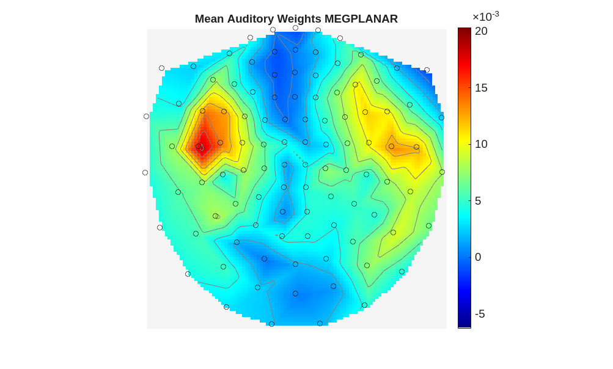
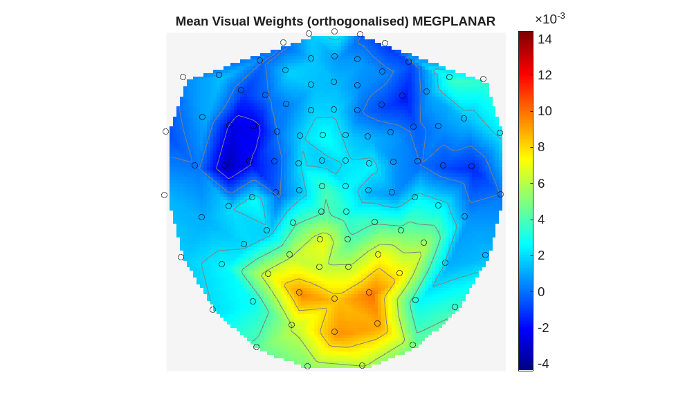
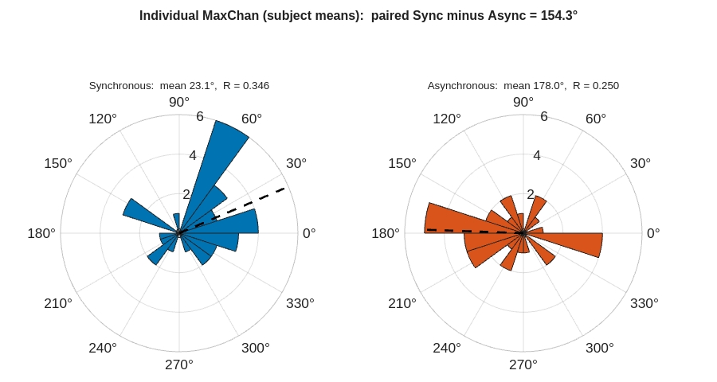
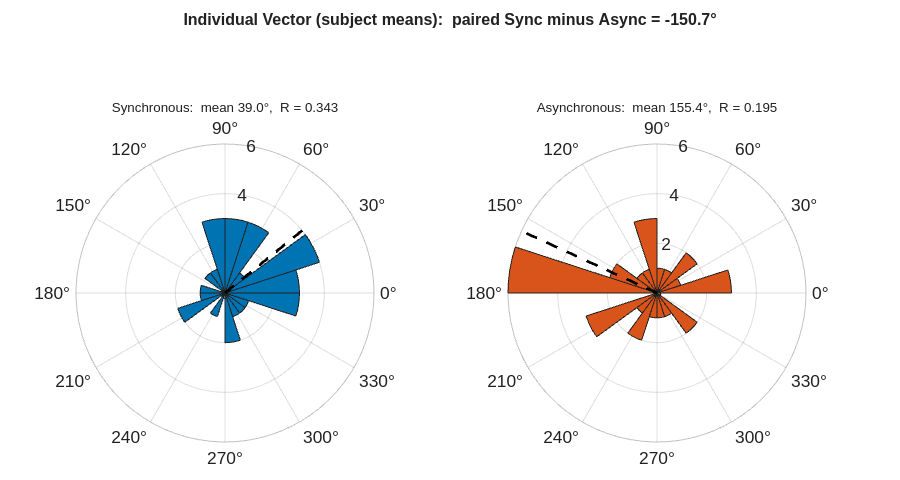
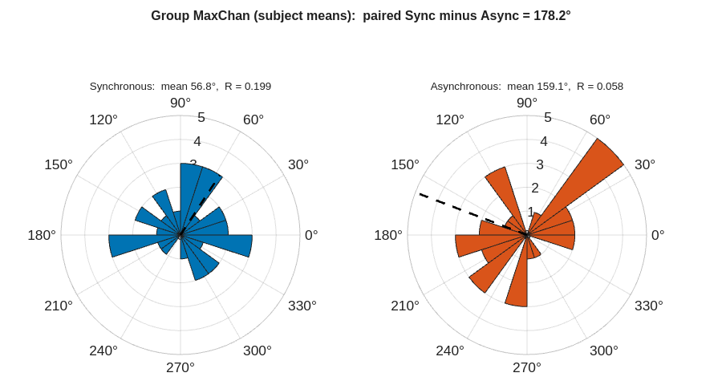
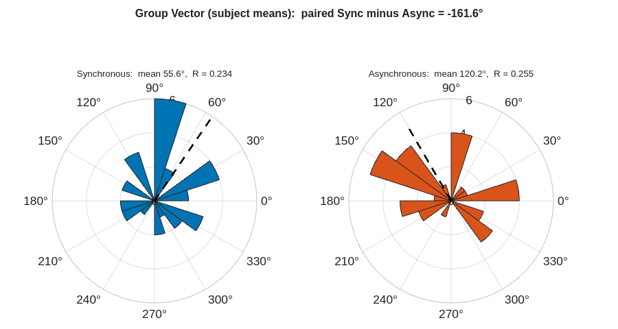
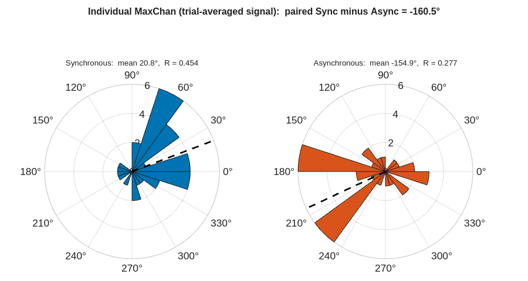
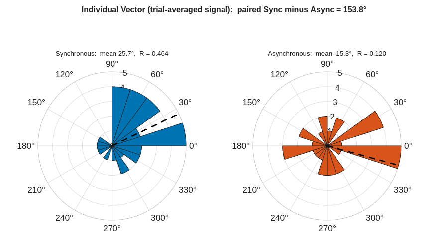
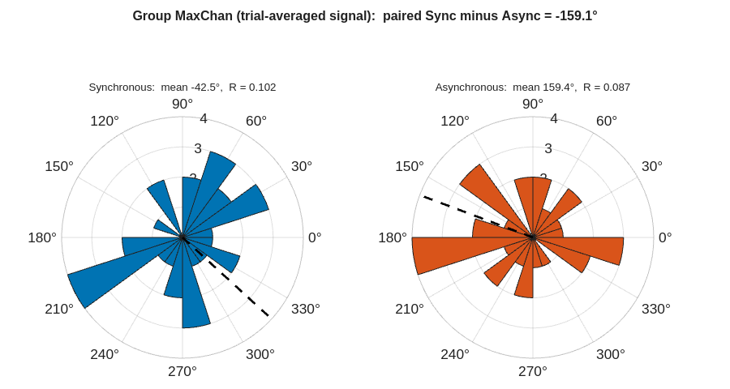
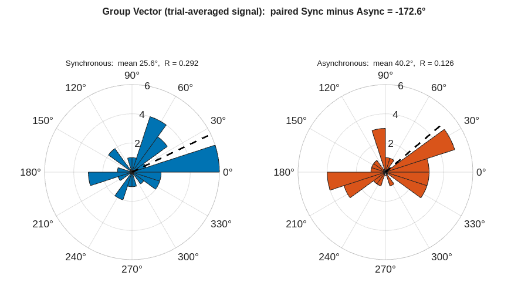
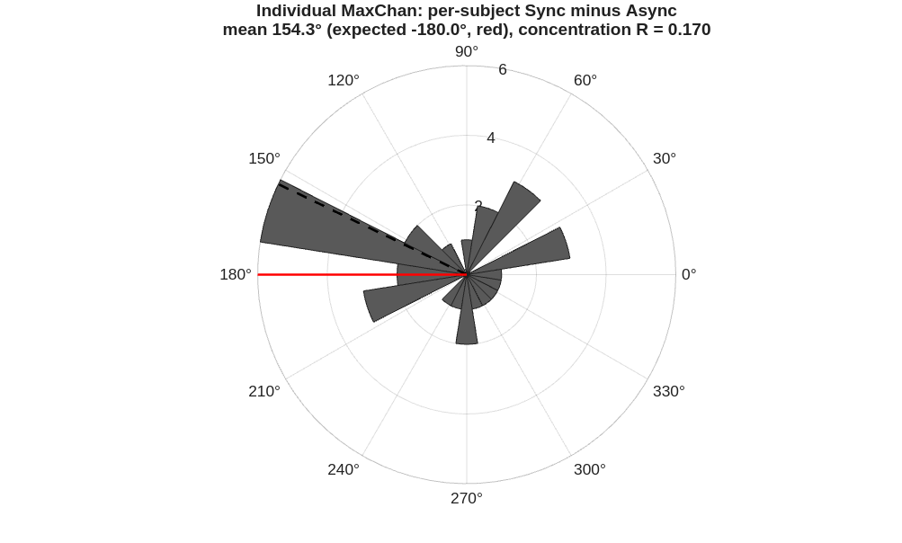
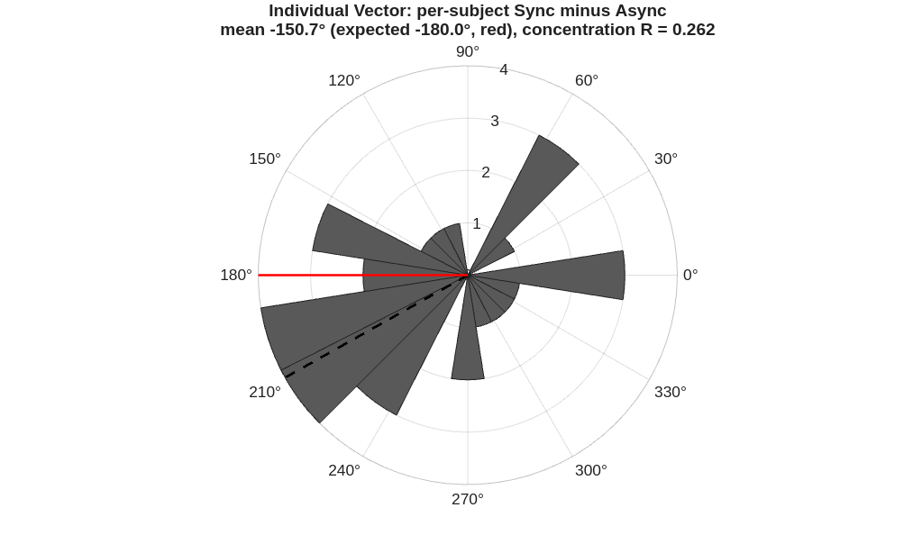
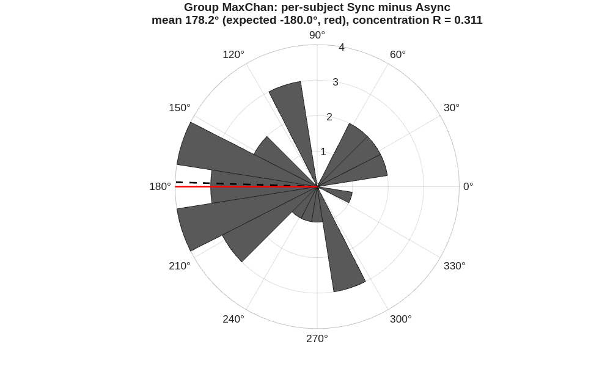
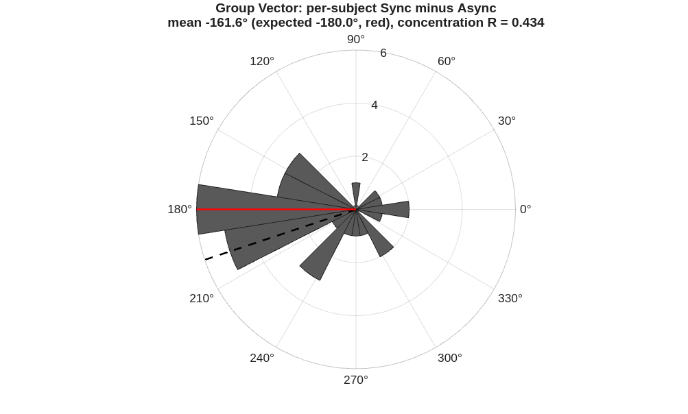
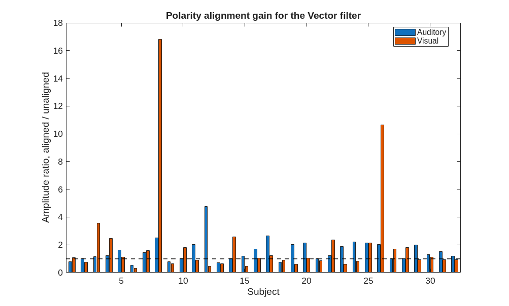
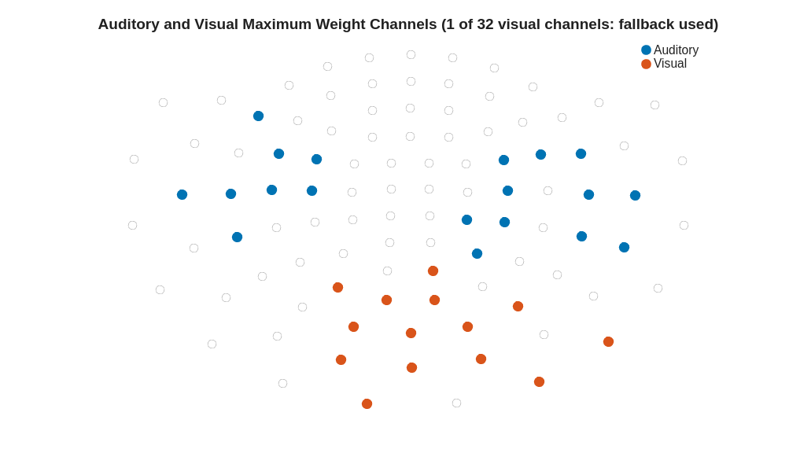
Cleanup
Deletes intermediate time-frequency files once no longer needed. This is destructive and irreversible — only run once the saved outputs above (ThetaBand_pSub, TF_pSub, Theta4Hz, AudioWeights, Synchronicity, SourceTheta, etc.) are complete and correct, since the intermediate files deleted here can't be recovered without re-running the Time-frequency analysis section.
for iSub = 1:length(Subs) sub_nam = sprintf('sub-%02d', Subs(iSub)); sub_in = fullfile(outdir, sub_nam, 'meg'); cd(sub_in) delete tf*.mat tf*.dat rtf*.mat rtf*.dat end function [s, rho] = freqPhaseSign(sigA, sigV, f, timeVec) % Sign of the phase alignment between two real time series at a single, known frequency f, via direct projection rather than a broadband time-domain correlation — the same principle validated for the MISC-channel synchrony analysis: projecting onto a known frequency is a lower-variance estimator than correlating the raw (filtered but still broadband-in-effect) time series, since it isolates exactly the component the decision should be based on. sigA, sigV : real time series, same length as timeVec. Returns: s = +-1 (in-phase vs out-of-phase at f); rho = the same quantity as a continuous score in roughly [-1, 1] (1 = perfectly in-phase, -1 = perfectly antiphase, 0 = quadrature/uninformative), analogous to SignFlipR's role for the time-domain correlation. cA = sum(sigA(:) .* exp(-1i * 2 * pi * f * timeVec(:))); cV = sum(sigV(:) .* exp(-1i * 2 * pi * f * timeVec(:))); crossReal = real(cA * conj(cV)); s = sign(crossReal); rho = crossReal / (abs(cA) * abs(cV) + eps); end function o = orthog_cov(x, y, C) % Covariance-metric orthogonalisation: enforces y'*C*o == 0 (zero correlation between the projected SIGNALS Y'y, Y'o under covariance C), unlike orthog()'s y'*o == 0, which only makes the weight VECTORS perpendicular and guarantees nothing about the signals unless C is proportional to identity. Reduces to orthog(x,y) when C = I. x, y: nChan x 1 weight vectors (y is reference). C: nChan x nChan covariance. denom = y' * C * y; if abs(denom) < eps(class(denom)) * max(1, norm(C, 'fro')) o = x; % y degenerate under this metric; nothing to remove return end b = (y' * C * x) / denom; o = x - b * y; end function [sgnFull, reliab, varExp, phaseR] = chanLeadingComponent(analyticFull, w, analyticHalf, wHalf) % Leading shared-shape component across channels: polarity reference and reliability score for the Vector filters, replacing correlation with a single peak channel (see ChanReliabilityThresh above for rationale). % % analyticFull : nChan x nTime complex analytic signal (trial-averaged, filtered SyncDelta, good channels; Hilbert-transform real data before calling). w : nChan x 1 nonnegative weights for this filter; channels are weighted by these before extracting the component, so low-weight channels can't dominate it. analyticHalf : {oddHalf, evenHalf} of the same signal, or {[],[]}. Reliability is the MIN of the two halves' loadings, so a channel scores well only if consistent across independent data, not by fitting the full sample's noise. wHalf : weights for the half-sample components (usually = w). % % Returns (per channel, except varExp/phaseR which are scalars): sgnFull : +-1, sign relative to the shared shape. reliab : cross-validated loading magnitude; 0 for no-variance or excluded channels. varExp : variance the leading component explains. Low means no single common waveform fits well — any sign-flip reference is on shaky ground for this subject/weight set. phaseR : resultant length of the doubled loading angles. A single real generator puts every loading at 0 or pi from a common angle, so phaseR near 1 confirms that; low phaseR (with reasonable varExp) means genuine phase spread a plain sign flip can't represent — the sharper test of the two. nChan = size(analyticFull, 1); sgnFull = ones(nChan, 1); reliab = zeros(nChan, 1); varExp = NaN; phaseR = NaN; ok = w(:) > 0 & all(isfinite(analyticFull), 2) & any(analyticFull ~= 0, 2); if sum(ok) < 3 return % too few usable channels to define a shared component end [ldFull, axisAngle, phaseR, varExp] = onecomp(analyticFull(ok, :), w(ok)); sgnFull(ok) = sign(real(ldFull .* exp(-1i * axisAngle))); sgnFull(sgnFull == 0) = 1; relOut = abs(ldFull); haveHalves = ~isempty(analyticHalf{1}) && ~isempty(analyticHalf{2}) ... && all(isfinite(analyticHalf{1}(:))) && all(isfinite(analyticHalf{2}(:))); if haveHalves [ld1, ~, ~, ~] = onecomp(analyticHalf{1}(ok, :), wHalf(ok)); [ld2, ~, ~, ~] = onecomp(analyticHalf{2}(ok, :), wHalf(ok)); relOut = min(abs(ld1), abs(ld2)); end reliab(ok) = relOut; end function [ld, axisAngle, phaseR, varExp] = onecomp(M, w) % Leading component of a weighted channel x time complex matrix. M: nChanKept x nTime complex; w: nChanKept x 1 nonnegative. Mw = w(:) .* M; [U, S, ~] = svd(Mw, 'econ'); ld = U(:, 1); s = diag(S); varExp = s(1)^2 / sum(s.^2); % Complex SVD's leading vector is defined up to an arbitrary phase rotation (not just a sign), so recovering the "0 or pi from a common angle" axis a single real generator predicts uses the axial-mean trick: double the angles, average, halve. phaseR = abs(mean(exp(2i * angle(ld)))); axisAngle = angle(mean(exp(2i * angle(ld)))) / 2; end function save_fig_png_safe(fig, filepath) % print() refuses to export figures with UI components (e.g. from spm_eeg_plotScalpData), even purely cosmetic ones, so strip them first. delete(findall(fig, 'Type', 'uicontrol')); print(fig, filepath, '-dpng', '-r300'); end